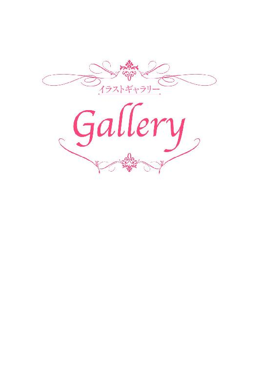
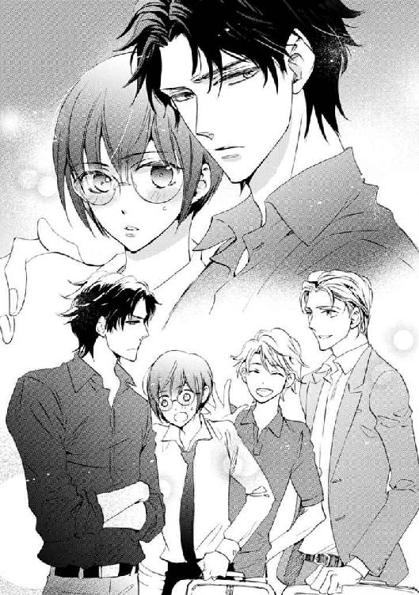
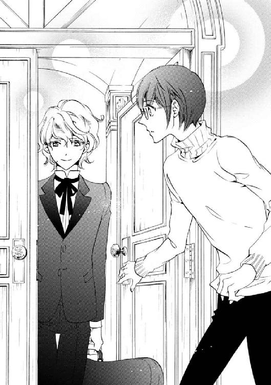
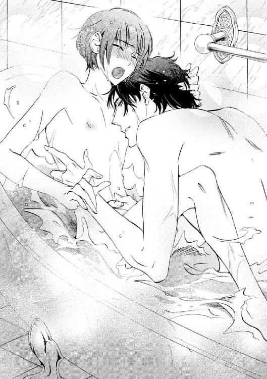
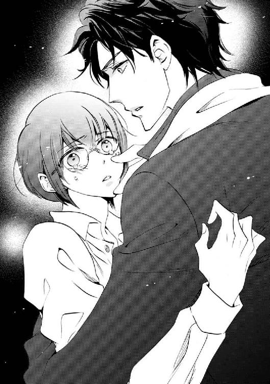
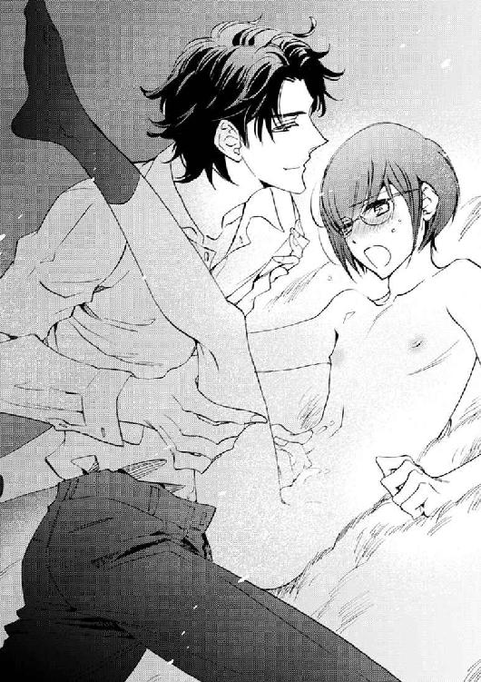
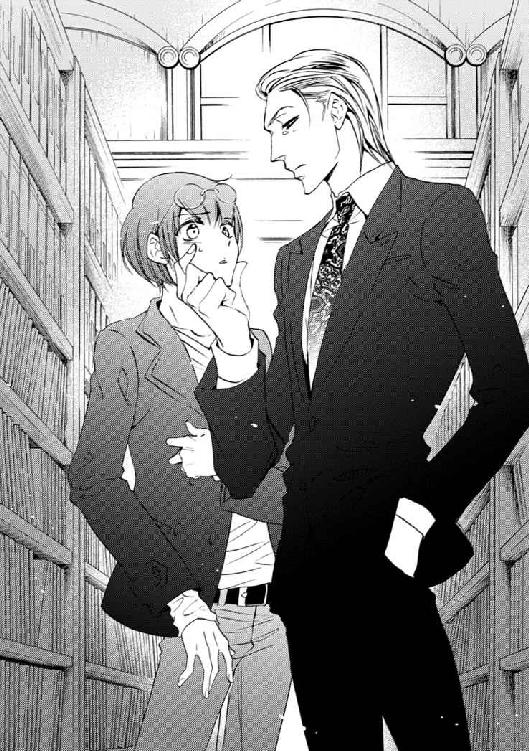
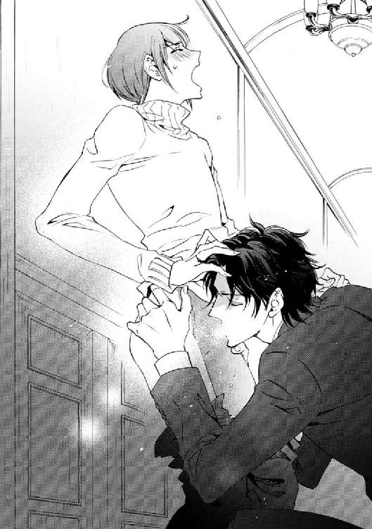
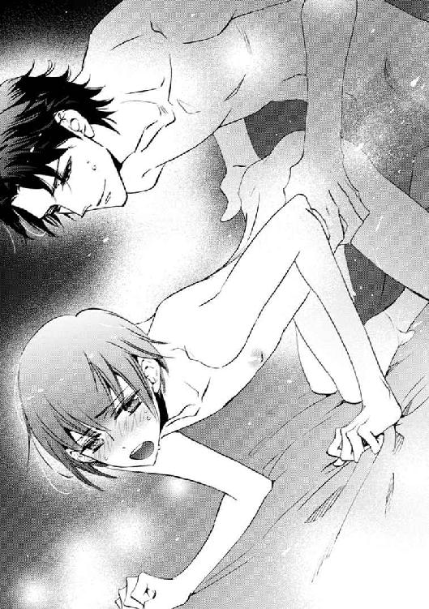
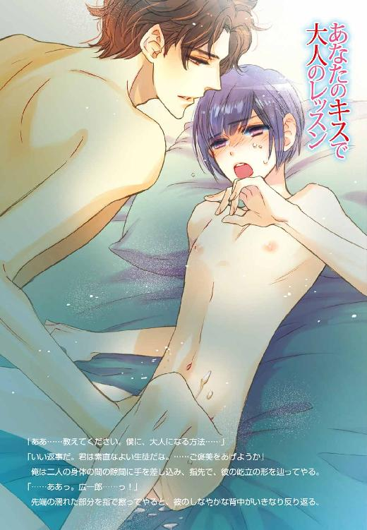

| あなたのキスで大人のレッスン (角川ルビー文庫) | |
| 水上 ルイ | |
| (2015) | |
あなたのキスで大人のレッスン
水上ルイ
角川ルビー文庫
本作品の全部または一部を無断で複製、転載、配信、送信したり、ホームページ上に転載することを禁止します。また、本作品の内容を無断で改変、改ざん等を行うことも禁止します。
本作品購入時にご承諾いただいた規約により、有償・無償にかかわらず本作品を第三者に譲渡することはできません。
本作品を示すサムネイルなどのイメージ画像は、再ダウンロード時に予告なく変更される場合があります。
本作品は縦書きでレイアウトされています。
また、ご覧になるリーディングシステムにより、表示の差が認められることがあります。
本文中に「>>>♥」が付されている箇所にはイラストがあります。その箇所を選択すると、ギャラリー中の該当するイラストが表示されます。読んでいた場所にもどるときは、イラスト直後の「このシーンはこちら♥」を選択してください。
あなたの胸で恋の復習
本宮広一郎
......美弦に、やっと会える。
その気持ちは、俺の心に不思議なほどの喜びをもたらしてくれる。
......一秒でも早く、彼に会いたい。
俺は、本宮広一郎、二十八歳。
ウィーン国立歌劇場管弦楽団、そしてウィーン・フィルハーモニー管弦楽団に所属するプロのヴァイオリニストだ。
そして、恋人の名前は鷺沢美弦。十五歳。
俺は毎年、母校である私立聖邦学園で、演奏会が少ない時期の一カ月間だけ特別講師を務めることになっていた。
いくつかのクラスで行う講義のほかに、学生から一人だけ生徒を選んでレッスンをつけることになっている。
そして今年、俺が個人レッスン生として選んだのが鷺沢美弦だった。
紆余曲折を経て、美しく純粋な美弦を恋人として手に入れてから、三カ月。
日本にある音楽高校のヴァイオリン科に通う彼と、世界を巡りながら演奏活動をしているプロのヴァイオリニストの俺とでは、どんなに愛おしくても、気軽に会うというわけにはいかなかった。
彼はレッスンで忙しかっただろうし、俺にはこなすべきたくさんの仕事があった。
......俺は、愛していると言ってくれた彼の言葉を信じているし、彼も俺のことを信じてくれている。だから、会わない間はお互いのことを忘れて演奏に集中すべきだったのかもしれないが......。
だが、彼の美しい瞳と、優しい声、そして二人きりになった時だけに見せてくれた蕩けるような顔を思い出すだけで、俺はとても我慢ができなかった。
せめて声だけでも聞きたくて、世界中のいろいろな都市から、彼がいる学生寮についつい毎晩のように電話をしてしまった。
学生寮に住んでいる彼は、深夜の電話の呼び出し音に気を遣っただろうし（もともと慎み深くて優しい子だ）、声を聞けばどうしても甘い言葉を囁かずにいられなかった。
......あきれられていないといいのだが。
ここは、現在、俺が音楽活動の拠点としている、オーストリアの都市、ウィーン。
ウィーン国際空港の、到着ロビーだ。
曇りガラスの扉が開き、入国審査を終えた観光客の一群がロビーに吐き出されてくる。
しかし、その中に、俺が待ちわびている彼の姿はまだなく......。
......まさか、飛行機に乗り遅れたとか？
......それとも、乗り換えの空港でどこかの悪い男に連れ去られたとか？
俺が柄にもなく不安になった時、また税関からの扉が開いた。
ゆっくりと歩み出てきたのは、一人のすらりとした青年。
真っ白なカッターシャツとネクタイ、きちんとアイロンのかかったスラックス。
彼の左手にはトランク、右手にはヴァイオリンケース。
彼の顔の上には、その美しさを隠そうとするかのような、大きな黒縁眼鏡。
だが、彼の圧倒的な美しさはそんなもので隠せるわけもなく。
小さな顔。雪のように白い肌。キスをねだるような桜色の唇に、長い長い睫毛。
その黒い瞳を不安げに潤ませた彼は......華やかな人々の行き交う空港ロビーの中でも、ひときわ美しく、そしてとても人目をひく。
ロビーにいる男どもが目を剝き、心を奪われた様子で、足を踏み出す。
俺は、先を越されてたまるか、と思ってつい早足になりながら、彼の方に歩み寄る。
「美弦！」
呼ぶと、彼は驚いたように肩を震わせ、それからあたりを見回す。
その視線に俺をとらえた彼の顔に、ゆっくりと笑みが浮かぶ。まるでそこに麗しい花が開いたかのように、無機質なロビーの空気がふわりと香気を帯びた気がする。
......ああ、俺の美弦は相変わらず美しい。
「お久しぶりです、先生」
彼は言いながら一歩踏み出し、自分のトランクにつまずいてよろける。
......そして、相変わらずそそっかしい。
俺は彼に駆け寄り、その身体をしっかりと支えてやる。
「まったく、少し目を離すと、すぐこれだ」
言うと、彼の滑らかな肌に、恥ずかしげに血の気が上る。
「す、すみません」
彼は照れたように瞬きを速くし、眼鏡の向こうの、潤んだ瞳で俺を見上げる。
「......先生」
「......美弦」
俺と彼の視線が、熱く絡み合う。
三カ月ぶりの愛する人との再会は、冷徹なはずの俺の心を、こんなにも蕩けそうなほどに甘く痛ませて......。
「あーっ！ 早速見つめ合ってるーっ！」
「相変わらずラヴラヴだな」
後ろから響いた、聞き覚えのある声。振り向くと、そこには聖邦学園の学園長・東良嗣と、彼の恋人で美弦の学生寮のルームメイトである小田瀬良がいた。
......やっぱりついてきたのか、この二人。
こんなに美しいくせに本当に無防備な美弦を一人で飛行機でここまで来させるのは、確かに心配だった。
......しかし。
「あ！ オレたちがいて邪魔だって顔！」
「安心してくれ。私たちは、君たちカップルの熱々ぶりを確認しに来たのではなく、いつもクールな本宮先生が美弦くんを前にしてデレデレになる様子を見に来たわけでもなく、純粋にウィーン・フィルのコンサートを鑑賞しに来ただけだよ」
......本当か？ どう見ても、面白がっているように見えるが。 >>>♥
俺は思いながら、学園長を横目で睨む。
「でしたら、お二人はタクシーでホテルへどうぞ。......鷺沢くんは、俺の車へ。今夜はうちに泊まってくれ」
言うと、美弦は白い頰に血の気を上らせる。そして慌てたように二人に目をやる。
「恋人同士なのだから、当然だろう？ 俺たちの関係はとっくにバレているから、二人の前だということを気にする必要はない」
言って肩を抱こうとするが、美弦は怯えたように後ずさってしまう。
「ダメです！ コンサートは明日なのに！」
いつも優しい小さな声で話す彼が、必死の声で叫ぶ。
「僕なんかがいたら、先生の練習のお邪魔になってしまいます！」
「邪魔？ いや、そんなことは......」
美弦はなんだか泣きそうな顔になってしまいながら、さらに後ずさる。
「先生は僕の憧れの人です！ 世界の本宮広一郎です！ そのあなたの、演奏会の準備を邪魔するなんて、僕は......っ！」
「美弦くんのことは我々に任せてくれ」
学園長が言いながら、俺と美弦の間に割り込んでくる。
「君は、明日の演奏会に備えて練習をしなくてはいけないだろう。我々は気楽にウィーン観光を楽しませてもらう」
俺は、美弦の顔を見下ろす。
「レッスンの都合で、明後日の朝の便で日本に帰らなくてはならないんだろう？ それならあまり時間が......」
美弦は一瞬だけ寂しそうな顔をし、すぐに晴れ晴れと笑う。
「でも、どうぞおかまいなく。僕、ウィーンに来られただけで幸せです」
言われた美弦の言葉に、俺は不思議なほど落胆してしまう。
鷺沢美弦
「君が本宮先生と二人にしないでくれと言うからああ言ったが、本当によかったのか？」
エスプレッソを飲みながら、東学園長が心配そうに言う。彼の前にはアイスクリームを添えたアプフェルシュトゥルーデルの皿。意外なことに甘党だったらしい。
「うん、なんだか気が引けるよね」
この店の名物、ザッハートルテをつつきながら、瀬良くんが言う。
ここは、国立歌劇場の裏にある、有名なウィーン菓子の専門店。赤い絨毯と赤いカーテン、煌めくシャンデリア。まるで高級レストランみたいに優雅な店だ。
ウィーンに来たら絶対試すように、とガイドブックに載っていたザッハートルテは、適度の苦みと甘みのバランスが絶妙で、すごく美味しい。
耐熱グラスに入れられ、水を添えて銀のお盆に載せて持ってこられたウィーン風の生クリーム入りコーヒー、アインシュペンナーも、すごく香り高い。
窓の外にはガイドブックを見てずっとずっと憧れていた、音楽の都、ウィーンの景色。
こうしているだけで天にも昇る気持ちになるはずなのに......僕の心はなぜか沈んでいる。
瀬良くんが、なんだか心配そうに、
「そうだよね。恋人同士の久しぶりの逢瀬だろうし、しかも明日は美弦の......」
「う、うん。いいんだ」
僕は、瀬良くんの言葉を遮って、無理やり笑みを頰に押し上げる。
「それより、お二人のデートの邪魔をして、なんだか悪かったみたい」
言うと、二人は顔を見合わせ、それから僕を慰めるように笑ってくれる。
「いいんだよ、どうせ彼とは、学校でイヤってほど一緒にいるんだから！」
瀬良くんの言葉に、学園長は、いたずらっぽく片目をつぶる。
「どうせ今夜は瀬良の部屋に忍んでいくし」
「忍んでくるなっ！」
二人のかけあいに、僕は笑って見せるけど......心の中は本宮先生のことばかりで。
彼と会うのは、たった三カ月ぶりのこと。毎晩のように電話で話していたし、懐かしがるようなことじゃないはずなんだけど......。
本宮先生の顔を見た時、僕は、嬉しくて嬉しくて我を忘れそうになってしまった。
周りに誰もいなくて、会いたかった、って素直に言えて、ギュッと彼に抱きつけたとしたら......どんなに素敵だったろう。
......でも、現実は。
ただでさえ人並みはずれたハンサムの本宮先生は、空港でとても目立っていた。
彼は顔写真を雑誌やＣＤジャケットに載せないので有名だけど、彼の明日の演奏会のためにウィーンに来たようなディープなファンなら、前にも演奏会に行って実際に彼の顔を見知ってる人も少なくないはず。
僕の後ろにいた音楽マニアらしい人たちも本宮広一郎だ、と囁き合っていたし。
機内で見た雑誌には、世界的ヴァイオリニストの本宮広一郎と、世界的なピアニスト、エーリヒ・ワルターがウィーンで共演するという記事が載っていた。
そして僕は、彼が僕だけの恋人というだけではなくて、世界の本宮広一郎であることを、再認識してしまって。
......彼の邪魔になるようなことをしちゃいけない。
......彼が、恋人にしてくれただけで幸せに思わなくちゃダメだ。
でも、僕の心は、彼に会いたいって叫んでしまっていて。
僕の身体は、彼の腕に抱き締められたいって熱くなってしまっていて。
そして、僕の心が乱れるのには、もう一つ理由がある。
明日は、偶然にも、僕の誕生日なんだ。
誰かと付き合ったことがなかった冴えない僕は、恋人のいる誕生日なんか迎えるのは初めてだった。
だから、心は勝手にときめいてしまって。
......でも、明日は彼の大事な演奏会。
僕はまた、自分に言い聞かせる。
......だから二人きりになりたいなんて我が儘は、絶対に言っちゃダメなんだ。
本宮広一郎
曲が終わり、ヴァイオリンを下ろすと同時に、俺はまた深いため息をつく。
「この俺と共演するというのに、そのため息は何なんだ、コウ！」
ピアノから顔を上げて叫んだのは、エーリヒ・ワルター。二十八歳。世界的ピアニストであり、俺の古い友人、そしてゲイだ。
ここは俺が所属するウィーン・フィルハーモニー管弦楽団の本拠地、楽友協会ホール、そのリハーサル室。明日の演奏会はこの建物の中、黄金の大ホールで行われる。
「しかも、おまえはあんなに可愛らしい恋人まで手に入れて！ 何が不満なんだ？」
「こんなに愛しているのに、今は一緒にいられない、二人の運命がつらい」
俺の口から、つい本心が零れてしまう。
「明日は彼の誕生日。なのに演奏会。その後はきっと後援会主催のパーティーにかり出される。せめて、愛していると伝えたいのに」
「精巧な弾く機械のようだったおまえが、こんなにメロメロになってしまうとはな」
「からかっているのか、エーリヒ」
俺が睨むと、彼は笑みを浮かべたまま、
「違うよ。まあ、あんなに綺麗で色っぽい子が相手なら、気持ちは解らないでもないが」
「美弦に手を出したら殺すぞ」
「俺も命は惜しい。涙をのんで我慢するよ」
エーリヒは言って、苦笑する。
「ともかく。今日のおまえの演奏は、いつものとおり完璧だ。その代わり、音にはハニーに会えない苦悩が満ちている。まあ、そんな音もセクシーといえないでもないんだが」
「明日の演奏会の演目はロマンティックな曲ばかりだろう。美弦と愛の一夜を過ごせば、個人的にも、演奏家としても、完璧な演奏会になると思った。......だが、美弦にさりげなく拒絶された」
俺は、深い深いため息をつく。
「美弦の心は離れてしまったのだろうか？」
「離れてしまったのなら、手を尽くして引き戻すしかない。後援会のパーティーなんか蹴ればいい。おまえが彼のためにやりたい、と言っていたあれを、明日の夜に決行しろよ」
俺はその言葉に後押しされながら、
「解った。それならヴァイオリンなど弾いている場合ではない。......失礼するぞ」
エーリヒは苦笑しながら見送ってくれた。
鷺沢美弦
ここは、楽友協会ホール。演奏会が開かれている、黄金の大ホール。
クリスマスや記念コンサートの時だけ花で装飾されるはずのホールが、今夜もなぜか花でいっぱいに飾られている。それは、ほとんどが深紅のバラ。瀬良くんが、「このバラの花言葉は『愛している』だよ」って教えてくれたそのバラの芳香と、本宮先生の比類ないほど美しい演奏に、観客は陶然としている。
僕はメッセンジャーボーイが渡してくれたメモを握り締め、ステージを見つめている。
『目配せをしたら、そこからは君のために弾く。誕生日プレゼントだ。 本宮』
彼は、情熱を込めて演奏をしている。こんなに一心不乱に弾いていたんじゃ、メモを書いたことすら忘れていそう。でも。
曲の中で一番ロマンティックな彼のソロ。それに入る一瞬前、彼が僕を真っ直ぐに見つめて、素早く目配せをしてくれたんだ。
......ああ......こんな素晴らしい演奏が、今は僕だけのものだなんて......。
僕は、プレゼントとして贈られたあまりにも美しい演奏に、身も心も蕩けて......。
＊
「......お誕生日おめでとう、美弦......」
「......ありがとうございます。僕、信じられないほど嬉しくて......あ、広一郎......っ！」
ここは、彼がウィーンで住んでいる郊外の屋敷。アール・ヌーヴォーの家具とボヘミアンガラスのシャンデリアで飾られたそこは、まるで夢のお城みたいに美しかった。
彼のベッドルームと、ベッドの上いっぱいに、ホールにあったのと同じ深紅のバラ。僕の誕生日を祝うためにあのホールをバラで埋め尽くしてくれたのは......彼だったんだ。
裸で重なり合う二人の身体の下で、深紅のバラの花びらが甘い甘い芳香を放つ。
耳に残る彼の演奏の余韻と、バラの芳香と、彼の激しい抽挿に、僕は我を忘れる。
「......広一郎っ......あっ、ああっ......っ！」
震える僕の耳に、彼が口を近づける。
「君への愛を示すためなら俺は何でもする。その代償に、君から欲しいものがあるんだ」
「......え？ ......あっ、んんっ！」
「愛していると言ってくれないか？」
僕は驚き、その言葉をほとんど言っていないことに気づく。だって、なんだか......。
「こ......広一郎......」
僕は恥ずかしさに真っ赤になりながら、彼の肩に顔を埋める。蚊の鳴くような声で、
「......ぁ......」
「聞こえないよ、美弦」
「......愛してます、広一郎......ああっ！」
彼はその夜、一晩中情熱的に僕を抱いた。僕は彼の逞しい腕の中で、喘ぎながら、その言葉を数え切れないほど囁いた。
今まで遠く感じていたウィーンが、少しだけ近くなったような気がした。
もっともっと優れた演奏者になって、彼と一緒にこの美しい都市に住める日が来るのを......僕は心から祈っているんだよね。
『あなたの胸で恋の復習』 Fine.
あなたのキスで大人のレッスン
鷺沢美弦
『......休暇に入ったら、またウィーンにおいで』
別れ際、彼が言ってくれた言葉を思い出して、僕はまた一人で赤くなる。
「ああっ！ 美弦が、色っぽい顔してる～！」
黄色い叫びに顔を上げると、そこに立っていたのは鹿島誓くん。
彼は本宮先生のファンで、入学当初は、外部生の僕が本宮先生の個人レッスン生に選ばれたことに腹を立てていた。
だから最初はことあるごとに突っかかられていたんだけど......ちょっとした事件を経て、仲良くなることができた。
有名な音楽家の家に育ったお坊ちゃんだからちょっと我が儘なところはあるんだけど、実は一途ないい子だし、何よりもすごい才能の持ち主だ。
僕は彼のことを尊敬しているし、彼と仲良くなれたことはすごく嬉しいんだけど......。
「ねえねえ、美弦～」
鹿島くんが甘えた声を出して、僕の隣の席に座る。
「今夜、部屋に遊びに行ってもいい？ 僕、美弦ともっと仲良くなりたい！」
ただでさえ星が散っているような綺麗な瞳をさらにキラキラさせて、僕を上目遣いに見る。
今は十二月。鹿島くんをはじめとする、クラスのメンバーに会えてから、九カ月が経った。
クラスはあれから団結し、あの頃のことが噓みたいに、鹿島くんは僕に懐いている。
もちろん好かれるのは嬉しいし、鹿島くんはこうして見るとすごく可愛いんだけど......。
「ええと......ごめん、今日はちょっと読みたい本が......」
「んも～、意地悪～！」
鹿島くんは言って、僕の腕にきゅうっとしがみつく。
「僕、美弦にならキスとか許してもいいんだ。ううん、もっと先までだって！」
鹿島くんの衝撃発言に、食堂の中がどよめく。
「ま、待って、鹿島くん。そういう発言はちょっと......それに僕じゃ......」
「美弦って綺麗な顔に似合わない、男らしいところがある！ そこに惚れちゃったんだもん！」
彼の言葉に、僕は内心ため息をつく。
入学当初、ある事件があった。その時に僕は鹿島くんと色々と話をすることになった。
鹿島くんが落ち込んだり逆ギレしたりしないかと、内心は冷や冷やだったんだけど......意外なことに、鹿島くんは僕の冷静さに男らしさを感じてくれたらしいんだ。
「しかも！ 入学当初はいかにも可愛い～って感じだった美弦が、この九カ月ですっかり色っぽくなっちゃって！」
鹿島くんは僕を見上げて、目をウルウルさせる。
「僕、最近、美弦によく見とれてるんだ。だって美弦、どんどん美人になってきてるし......」
「ああ～、またお姫様同士でくっついてる！」
ドアの方からした声に目を上げると、そこにいたのは小田瀬良くん。
寮では僕の同室で、一番初めに仲良くなった同級生だ。
彼は、僕らのところに真っ直ぐ近づいてくる。
「こら、鹿島！ 美弦だってお姫様なんだから、離れろよ～！」
「いやだ！ 僕の初めては、美弦にもらってもらうって、決めてるんだから！」
「えっ？」
鹿島くんの言葉に、僕は思わず声を上げる。瀬良くんは、深いため息をつく。
「そういう過激発言をするから......政近がこっちを睨んでるぞ～」
瀬良くんが指さしたテーブルの方を見ると、そこには鹿島くんの親衛隊のメンバーが座っていた。その中でも中心人物は、政近くん。
彼は鹿島くんの幼なじみで、どうやらずっと彼のことを見守ってきたナイトらしい。
......どう見ても、僕よりも彼にくっついている方が似合ってると思えるんだけど......？
「政近なんか関係ないも～ん！ あいつは別に恋人とかじゃなくて、単なる忠犬！」
......あ～あ......。
僕はまた瀬良くんと顔を見合わせる。
政近くんは、誰がどう見ても鹿島くんのことが好きって感じなのに。
......政近くんも苦労するなあ......。
「......ってそんなことよりもっ！」
瀬良くんは咳払いをして、僕の手にそっと一通の手紙を握らせる。
「美弦に手紙が来てたよ。ああ......ここじゃなくて部屋で読んだ方がいい」
言って、素早く片目をつぶってみせる。
......あ......。
僕は手の中の封筒をチラリと見て、それがエアメールで、心待ちにしていた人からのものであることを確かめる。
......本宮先生からだ......！
「何？ 何？ 美弦に手紙？ ラヴレターじゃないのっ？」
鹿島くんが言って、いきなり僕の手の中を覗き込もうとする。
「あっ、鹿島！ 人の手紙を見るなよ！ プライバシーの侵害！」
瀬良くんが止めてくれている間に、僕は食堂を走り出る。
＊
『休暇に入ったらおいで。いつでも構わない』
その封筒の中には、ウィーンまでの往復のオープンチケット。
『ただし、途中で危ない男にさらわれたりしないように気をつけること』
そして、見覚えのある彼の癖字で書かれた、短い手紙。
見つめていると......なんだか涙が出そうになる。
......彼も、僕に会いたいって思っていてくれたんだ。
......なんだか、不思議なほど嬉しいかもしれない......。
本宮広一郎
......愛しい美弦が、俺のそばにいる。
そのことは、俺を不思議なほどに幸せな気分にする。
美弦に飛行機のチケットを送った日から、俺は彼に会える日を心待ちにしていた。
まだ高校生の彼には休暇中にしたいことがあるだろう、もしかしたら実家に帰ってしまうかもしれない、そう思った俺は不自然なほど短い手紙を封筒に入れた。
彼を束縛したくない、もしも彼が俺に会うよりも別のことを選び、来なかったとしても仕方がない、俺は自分に必死で言い聞かせていた。
......しかし。
彼は、休暇前の最後の授業が終わるとその足で空港に向かい、乗れる限りの一番早い飛行機で、文字どおり俺の許に飛んできてくれたらしい。
空港で彼を出迎えたのは、ほんの四時間前。
ゲートから出てきた彼を抱き締め、俺はまた会えた喜びを嚙み締めた。
......あの場でディープキスを我慢できただけでも、自分を褒めるに値する。
美弦がこの間ウィーンに来たのは、夏休みの終わり。八月の末だった。
たった四カ月ぶりではあるが、ゲートから出てきた美弦は、一瞬驚いてしまったほど、色っぽい表情を浮かべるようになっていた。
俺に会うことを意識してか、いつもの眼鏡を外してコンタクトにしていた。美貌を隠す大きな眼鏡がないせいもあるだろうが......彼が美しく見えたのは、それだけが原因ではない。
美弦は、一日、一日、どんどん大人になっていくのだ。
ここは、ウィーン郊外にある俺の屋敷、レッスン室にしている書斎。
美弦は部屋の真ん中に置かれた譜面台の前に立ち、一心不乱にヴァイオリンを弾いている。
屋敷に着いた彼は、風呂に入り、着替えると、まず冬休み明けの実技試験のことを話した。
美弦が通う聖邦学園は日本でも有数の有名音楽学校で、試験も多い。
試験が気になってしまって、飛行機に乗っている間にもヴァイオリンが弾きたくてしょうがなかったんです、と告白した彼のために、いきなりヴァイオリンのレッスンになった。
試験の曲を美弦は完璧に弾きこなし、ここまで完成されているのなら根を詰めても仕方がないと判断した俺は、いつものレッスンに切り替えた。
「......今日のレッスンはここまでだ、鷺沢くん」
言うと、彼はホッとしたように、ヴァイオリンと弓を下ろす。
日本にいた時よくしていたように、俺は、「君が今弾きたい曲を」とだけ言って、彼に延々と曲を弾かせた。
まだ恋人同士になる前、ただの厳しい教師と教え子だった時。こう言うと彼は怯えたような顔をして俺の前に立ち、痛々しいほど必死にヴァイオリンを弾き続けた。
そんな顔をする時の彼の演奏は、まるで役者が台本を棒読みしているかのように面白みがなく、真面目で、とても硬く聴こえた。
しかし、そんな時でさえ......彼の音は比類ないほどに美しかった。
そして、俺と恋人同士になってからは......。
窓辺に置いた椅子に腰掛け、俺はヴァイオリンを拭いている美弦を見つめる。
今日の彼は、その長い睫毛をうっとりと伏せ、唇の上に微かな優しい笑みを浮かべて、ヴァイオリンを弾いた。
そんな顔をした時の彼の演奏は、柔らかな月の光のように清浄で、できたてのハチミツのように芳しく、そして世界中を蕩けさせてしまいそうなほどに甘い。
......表情が大人になってきただけではない。
......本当に、色っぽい音を出すようになった。
俺は思わず彼の演奏に聴き惚れ......少し弾かせすぎてしまったかもしれない。
彼は拭き終えたヴァイオリンと弓を、丁寧にケースの中にしまう。
「鷺沢くん」
名字で呼ぶと、彼は真面目な生徒の顔で振り向き、きちんと直立して俺を見返す。
「はい」
「一曲目、第二楽章の最初のソロが走りすぎる。第三楽章は説明的すぎる。もっとリラックスしていい。三曲目、まだ歌えていないので弾き込むことが必要。四曲目はもっとドラマティックにと前にも言ったはずだ」
「は......はい......」
「ちゃんと聞いていた？ 言われたことを復唱して」
「はい。一曲目、第二楽章の最初のソロが走りすぎ。第三楽章は説明的すぎなのでリラックス。三曲目は歌えていないのでもっと練習。四曲目はもっとドラマティックに......です......」
「よろしい。今日の君は、これらの曲がぴったりの気分だったのかな？ なぜ？」
「理由は......ええと、何となく......頭に浮かんでしまって......」
彼は、俺に難癖を付けられるのではないかと怯えるような顔で口ごもる。
「何となく？」
彼は叱られることを覚悟した仔犬のように、一歩後ずさる。
「鷺沢くん」
「は、はい！」
「今日、君は、甘い甘い恋の歌ばかりを弾いていた」
言うと、美弦は一瞬驚いた顔をする。
「そ......そういえば......？」
「練習はまだまだ必要だ。だが、まるで、恋人に向かって、『愛している、心から会いたかった』と甘く囁いているような演奏だったよ。......君の本心も同じかな？」
言ってやると、彼は瞳を甘く潤ませ、恥ずかしげな、消え入りそうな声で言う。
「......はい。僕は、恋人に、そう伝えるために演奏をしていた気がします......」
......ああ、俺の恋人は、なんて可愛らしいんだろう......。
鷺沢美弦
「すごく美味しかったです、先生！」
僕が言うと、先生はなんだか不思議なほど幸せそうに微笑んでくれる。
「ありがとう。本当に簡単なものだったんだが」
優しい目で見つめられて、頰が熱くなる。
「本宮先生の手料理を食べたなんて言ったら......学校が大騒ぎになりそう」
「どうして？ 鬼講師の手料理なんて恐ろしいと言って？」
「まさか。みんなが本宮先生の手料理を食べたがって、です。本宮先生には熱烈なファンがたくさんいるんですから」
僕は、学校内だけでなく、世界中にいるであろう本宮先生のファンの人たちに、なんとなく申し訳ないような気分になる。
「しかもお屋敷に泊めていただいたなんて......絶対に秘密、かなあ」
僕が思わず呟くと、彼は肩をすくめて、
「それだけではなく、一緒のベッドに寝た、とか？ 言いたかったら、言っても構わないが？」
「まさか！ 僕、ファンの人たちから殺されてしまいます！」
僕が叫ぶと、彼は真面目な顔をして僕の顔を覗き込んでくる。
「さっきから絡むね、美弦。もしかして、言って欲しいことがある？」
「え？」
「......俺には君だけだ。そう言って欲しかった？」
囁かれて、頰がカアッと熱くなる。
「からかったりして、先生は意地悪です！」
言うと、彼は可笑しそうに笑う。
「からかってはいない。俺の手料理など食べさせるのは君だけだ。もちろん、同じベッドで眠るのも、ね」
髪の毛をクシャッと撫でられて、頰がますます熱くなる。
彼のお屋敷のキッチンには、いろいろな食材がストックされていた。
籠に入れられた野菜、大きな薫製肉、それに新鮮なソーセージ類。
磨き上げられた銅のお鍋や、分厚い鉄のフライパンを見ただけで、先生がお料理に興味があるんだろうなって思ってはいたんだけど......。
先生が作ってくれたのは、野菜と、ノッケルと呼ばれるジャガイモのお団子が入ったコンソメスープ。
フライパンで軽く焼いた、ヴィーナーと呼ばれるソーセージ。ソーセージの香ばしさによく合うザワークラウトという酢漬けのキャベツと、粒入りのマスタードがたっぷり添えられている。
日本のものとは比べものにならないくらい美味しいベリージャムが添えられた、センメルと呼ばれるオーストリア独特の白いパン。
そして彼が日本にいる時に僕によく作ってくれていた......生クリームを浮かべたコーヒー。
「オーストリアでは、朝食はジャムを塗ったセンメルとコーヒーですまし、その代わり、昼食を重くする場合が多いんだ」
彼は言いながら、僕のカップにお代わりのコーヒーを注いでくれる。
「だが、君は昨日到着したばかりで疲れていただろうし、何よりも......」
彼は目を上げて、僕の顔を見つめる。
「......今日からは、体力を使うことになるだろうし」
「はい。ヴァイオリンのレッスン、頑張ります」
「君は休暇中だ。そっちの方はそんなに頑張らなくてもいい。たまにはリフレッシュしないと煮詰まってしまうよ」
「ええと......では、何のレッスンですか......？」
「俺の恋人としてのレッスンだ」
「恋人として？」
......何だろう？ お料理の特訓とか？
「君を少しずつ大人にする。そのためのレッスンだよ」
「大人？ 大人のすることですか？ ......ええと......オペラ鑑賞とか？」
「まったく。まだまだ勉強が足りないな」
「す......すみません......ええと......あとは......」
彼はあきれたようにため息をつき、それから指先で僕の顎を持ち上げる。
「主に、夜、ベッドの上で教える。たまに課外授業として、別の時間、別の場所でレッスンをするかもしれないので、心づもりをしておくように」
「え？ あっ！」
僕は、彼の言葉に含まれたセクシーな意味に気づいて、真っ赤になってしまう。
「......せ、先生ったら......！」
「例えば、朝の食卓で、朝食後に、レッスンが始まるかもしれないよ」
言って、彼の顔がゆっくりと近づいてくる。
僕は彼のキスを待つために思わず目を閉じそうになり......いけない、と思い直す。
......先生は、十二時から練習があって......！
思いながら、彼の肩越しに掛け時計を見上げる。
「大変です、先生。もうすぐ十一時です！」
時計を見た僕は驚いて言う。
「十一時に出るっておっしゃってましたよね？」
彼は僕の視線を追って時計を見上げ、それから深いため息をつく。
「どうもありがとう、君は本当に気の利く恋人だよ」
＊
「じゃあ、行ってくる」
「はい、行ってらっしゃい」
「......美弦？」
にっこり笑って手を振った僕を、先生がなぜか不満そうな顔で見下ろしてくる。
......え......？
「先生、何か......？」
先生の手が僕の肩に回り、僕の身体をふいに抱き寄せる。
「......え？ あ......」
上を向いた僕の唇に、彼の唇がそっと重なってくる。
「......ん......」
チュッと軽い音を立てて、すぐに唇は離れる。
......だけど......。
ほんの短いキスでも、それは僕を真っ赤にするのには十分で。
先生が、赤面する僕を見下ろしてくる。
「この方が、恋人同士の見送り方に相応しいだろう？」
「......あ......」
「できるだけ早く帰ってくる。いい子で待っていなさい」
先生の手が、僕の髪を優しくかき回す。
「行ってくるよ」
それからドアを開き、優しい一瞥を残して......外に出ていく。
......ただの生徒だった時には全然解らなかったけど......。
僕は玄関に立ちつくしたまま、一人でカアッと赤くなる。
......先生って、かなりの激甘ダーリンなんだ......。
髪に彼の手の感触が残っているみたいな気がして、僕は思わず自分の髪に触れてみる。
なんだか、じんわりと胸が熱くなってくる。
......彼の普段と違う顔を見られただけで、こんなに嬉しくなっている、僕も、僕だけど......。
......個人レッスンを受けている頃には、キスで先生を送り出す日が来るなんて、夢にも思わなかったけど......。
僕はさっきのことを思い出して一人で赤くなる。
......なんだか、ちょっと......新婚さんみたい......？
＊
ピンポーン！
僕がお皿を洗っている時、玄関の方から呼び鈴の音が聞こえてきた。
僕は、反射的に、先生が忘れ物をしたのかな、と思ってしまう。
広いリビングを駆け抜け、廊下を走って玄関に出て、何の疑いも持たずにドアを開ける。
「先生、忘れ物で......」
言いかけた言葉が、途切れる。
開けたドアの向こうに立っていたのは、先生とは比べ物にならないほどの小柄な人影だった。
歳は僕と同じくらいだろう。
ほっそりとした優雅な体型を包む、ヴェルヴェットの襟の付いたノーブルな感じの黒の上下。
ふわりとしたドレスシャツと、きちんと結んだリボンタイ。
まるで壁画の天使みたいに緩いウェーブのかかった、絹糸みたいなプラチナブロンド。
少し驚いたように僕を真っ直ぐに見つめてくるのは、澄み切った空みたいなブルーの目。
陶器のように、すべすべと滑らかな肌。
そして綺麗なお人形のように可愛らしく整った、その顔立ち。
僕は思わずその相手に見とれ......それから、どこかで見たことがある、と思う。 >>>♥
こんな美少年、もちろん一度でも会ったら忘れるわけがない。
だから、テレビか、雑誌かどこかで......？
寮でもレッスンに時間をとられている僕は、テレビのある談話室に行くことはほとんどない。
豊富にお小遣いをもらってるわけじゃなく、頻繁に町の本屋さんに行けるわけじゃないから、読んでいるのだって先生の記事が載っていそうな音楽雑誌だけで......？
......誰......だっけ......？
「あの、初めまして」
見るからに欧米人の彼の口から漏れたのは、意外なことに綺麗な発音の日本語だった。
「ユーリ・フィリチコフと申します。本宮先生はご在宅でしょうか？」
僕は思わず声を上げそうになって、慌てて手で口を押さえる。
......そうだ！ ヴァイオリニストの、ユーリ・フィリチコフだ......！
彼の名前は、ずっと前からよく知っている。顔も、小さなモノクロ写真を雑誌で見たことがあったんだ。
彼が有名な賞を取り、ヴァイオリニストとしてデビューしたのは、確か十三歳の時。
それからたくさんのＣＤを出し、世界中の有名なオーケストラと共演し、天才の名前をほしいままにしている人だ。
「あの......本宮先生は、先ほどウィーン・フィルの方のリハーサルにお出かけになりましたが......」
先週、パリで、彼と本宮先生は共演したはず。
そして、来週のコンサートで、彼と本宮先生は、また共演する。
......もしかして、本宮先生と仲良しなのかな？
思わず見つめてしまう僕に、彼はにっこりと笑ってみせる。
「師匠が同じなので、本宮先生は兄弟子に当たる人なんです。前にレッスンをつけてもらったこともありますし。ちょっとご挨拶をしに寄っただけです」
「レッスン......ですか......」
本宮先生の言う、大人のレッスンの方が先に頭をよぎってしまい、僕は一人で青くなる。
......何考えているんだ、僕？ そんなわけないじゃないか。
......本宮先生がエッチなことばっかり言うからだ、もう。
「先生がいないのなら結構です。......あの？」
今度は彼の方が聞きたそうな顔で僕を見る。
「あ、あの、僕は鷺沢美弦といいます。先生が毎年春に臨時講師を務められている、日本の聖邦学園というところの生徒です」
「聖邦学園なら知っています。僕、親の仕事の都合で、小さい頃は日本に住んでいたんです。聖邦学園に入るのが、あの頃の夢だったな」
彼の言葉に、僕はなんだか親近感を覚えてしまう。
「本当に？ 僕もずっと聖邦学園に入るのが夢だったんだ！」
思わず言ってしまった僕に、彼は嬉しそうに笑いかけてくれる。
「じゃあ、僕たち、同じ夢を持ってた仲間ってこと？」
「うん、そうかも！」
僕は言って、自分が敬語を忘れていることに気づく。
「あっ、ごめんなさい、フィリチコフさん。あなたは有名なヴァイオリニストなのに......」
「お願いだから、そんなよそよそしい口調で話さないで」
彼は言って、僕の顔を寂しそうな顔で見上げてくる。
「あと。僕のこと、名前で呼んでもらえると嬉しいんだけど。......ええと、君が嫌でなければ」
彼がふいに見せた心細げな顔に、僕は少しドキリとする。
「嫌なわけがない。すごく光栄だよ、ユーリくん。......僕のことも名前で呼んで」
僕が慌てて言うと、彼はそのお人形みたいに綺麗な顔に、花のような笑みを浮かべる。
「うん！」
彼は嬉しそうに言う。
「そうしたら、君のこと、美弦くんって呼ぶね！」
......なんだか、ものすごく可愛い子だなあ。
＊
僕とユーリくんはすっかり意気投合してしまった。
今日一日特に用事がないと言うと、彼はせっかくウィーンに来たんだから、と僕を外に連れ出してくれた。
彼が乗ってきたのは、立派な黒塗りのリムジンで、運転手さんは彼の家のお抱えらしく......僕は緊張すると同時に、彼は裕福な家のお坊ちゃんなんだな、と思っていた。
僕らは市内のホールを外から見て歩いた（捕まって練習をさせられちゃう、と言って、彼は中に入るのを避けていた。どうせ来週にはホールにカンヅメになるんだから、って）。
オペラ座から細い道に入ったところに、フローマルクトと呼ばれるのみの市と、ナッシュマルクトと呼ばれる食材の市場が出ていた。
先生のお屋敷の立派なキッチンを見てから、オーストリアの料理を勉強して先生に何か作ってあげたいな、と思っていた僕は、ユーリくんの通訳で市場の人たちと話し......彼らの教えてくれるレシピをメモに書き取った。
市場を抜ける頃までには、バラ色の生ハムや、果物や、先生のキッチンにはなかったような種類の野菜をたくさん買ってしまい、僕の手は紙袋でいっぱいになっていた。
気がつくとユーリくんまでが果物の入った袋を持ってくれていて......僕は、こんな有名な彼にこんなことをさせているのがなんだか申し訳なくなる。
「ごめんね、通訳をさせたうえに、荷物持ちまで......」
言うと、ユーリくんはにっこり笑って、
「ううん。久しぶりに日本語を話せて嬉しいし、こうやって路地を歩いたりするのがなんだか嬉しい。君の同級生になったみたいな感じがして」
「まあ、普通の高校生は、こんなふうに野菜を山盛り持って歩いたりしないけれどね」
僕が言うと、彼は可笑しそうに笑う。
「......ねえ、高校は楽しい？」
僕は、大騒ぎだった最初の頃を思い出してちょっと苦笑する。
「入学と同時に本宮先生のレッスン生になったから、周りの反応がちょっと......ね。才能のある生徒はたくさんいるのに、僕みたいな凡人がどうして、って感じで......」
「苛められたりしたの？」
「ううん、それほどのことじゃないんだけど......ええと......」
本当は、大事なテストに出られないように閉じ込められたりした。
だけど、やった本人の鹿島くんが本当に悪い子だったわけじゃなくて（本宮先生のファンで僕に妬いてしまったんだ）、それにクラスのみんなも僕の味方をしてくれたし。
「でも、今ではみんな仲良しだよ。ちょっとくすぐったいくらい。クラスの雰囲気もまとまってきてるしね」
僕は、小型犬みたいにまとわりついてくる鹿島くんのことを思い出して、苦笑する。
「なんだか......うらやましいな。美弦くんのこと」
ユーリくんの言葉に、僕は少し驚いてしまう。
「こんなに綺麗で、才能もあって......そのユーリくんが、僕なんかを、どうして？」
ユーリくんはその綺麗なブルーの瞳で僕を見つめる。
「美弦くんはすごく綺麗だよ。それに、まだ演奏は聴いたことがないけれど、あの本宮先生が個人レッスン生に選ぶんだから、美弦くんは絶対すごい才能がある人なんだと思う」
真面目な声で言われて、頰が思わず熱くなってしまう。
「ユーリくんに言われると、なんだか本当にそんな気がしてくる。ユーリくんて不思議」
ユーリくんは、その綺麗な顔に笑みを浮かべる。それからふと寂しそうな顔になって、
「あのね......僕、デビューしてすぐに世界中に演奏旅行をさせられてたから、普通の学生生活の経験がない。同年代の友達が周りに一人もいないんだ」
彼の言葉に、僕は驚いてしまう。
「だから......よかったら、友達になってくれない？」
「もちろん！ っていうか、もうすっかり友達だと思ってたけど？」
僕が言うと、彼はすごく嬉しそうに笑ってうなずいてくれる。
......ああ、ユーリくんって、本当に素敵な子かもしれない！
本宮広一郎
俺の車は、木々を抜けて坂を上る。
暗い屋敷は、いつも横たわる大きな怪物の黒い影のように見える。そして帰ってきた俺を少なからず憂鬱にするのだが......。
梢の向こうに見える窓に、今夜はあたたかなオレンジ色の灯りがいくつも灯っている。それを見るだけで、俺の胸は年がいもなく高鳴ってしまう。
......美弦が、俺を待っていてくれる。
......ああ、そう思うだけで、どうしてこんなに幸福な気持ちになるんだろう？
練習場であるホールから屋敷までが、こんなに長いと感じたことはない。
『ヴァイオリンの音を聴いていると、夢を見られるからです』
俺の、どうしてヴァイオリンを始めたのか、という問いに、美弦はこう答えたことがある。
ヴァイオリンを弾きながら、彼は、本当に夢を見ているかのようにうっとりした顔をする時がある。
無粋な黒い眼鏡、伏せられた長い長い睫毛の向こうで、瞳が美しく潤む。
滑らかなミルク色の頰が、ふわりとしたバラ色に染まる。
いつもは真面目そうに引き締められている唇がふいに緩んで、微笑みに近い表情を浮かべる。
そんな彼がそんな顔になるのは、完全に自分の音で演奏ができている時。
そんな時の彼のヴァイオリンは......本当に、天から降ってきたかのような......神々しいほど美しい音で音楽を歌う。
初めて聴いた瞬間から、俺は彼の煌めく才能とその妙なる音に魅了され、彼に心を奪われた。
一目惚れをした彼が、俺が講師を務める聖邦学園の生徒であったこと、そして彼を個人レッスンの生徒にできたことは、俺にとっては信じられないほどの幸運だった。
繊細な感性と人よりも格段に優れた耳を持つ彼は、自分にとても厳しく、その反動で必要以上に自分を卑下する傾向にある。
自己愛の強い人間のごろごろしている音楽家（もしくはその卵たち）の中にあって、彼は巣から出られない、か弱い小さな雛のようだ。
また、自分がどんなに美しく、強い羽根を持っているかに気づいていない。
もしも彼が羽根を広げ、力強く羽ばたけば、今まで誰も行けなかった高みにまで舞い上がれるかもしれない。
俺は、まだ雛の域を脱していない今に彼と出会え、彼の才能を開花させる手助けができることを神に感謝している。
そして......そのうえ幸運が重なって、彼の恋人になれたことも。
俺は、車寄せの隅に車を停め、エンジンを切る。
運転席のドアを開き、車から降りる。
時計を見ると、すでに時間は十時。我が儘な指揮者のせいで練習が延びた。
途中で電話をした時には、美弦は、夕食は適当に軽くすませます、と言っていた。
......そういえば、昼食を外でたくさん食べたから、と言っていた。
ここから市内まで、徒歩では結構距離がある。電話でタクシーを呼ぶやり方は教えたが......内気な彼が、街のレストランで一人で食事ができたのだろうか？
昼間、屋敷の電話にかけてみた時、誰も出なかった。
ヴァイオリンのレッスンでもしていて聞こえないのだろうと思い、そのまますぐに切ってしまったのだが......。
......もしかして、一人ではなかった？ いつのまにか悪い男に目をつけられて、誘われたとか？
心配な気分に陥りそうになった時、ガチャ、とドアが開く音がして、歩く俺の足下に、オレンジ色の光が差してきた。
目を上げると、開いたドアの前に、美弦が立っていた。
タートルネックのミルク色のセーター、しなやかな脚に張りつく黒のパンツ。
俺が買い揃えてあげたものばかりを着ている彼が、なんだか愛おしい。
「先生」
彼は言い、まるで主人を見つけた迷子の仔犬のような顔で、俺のところに駆け寄ってくる。
そのどこか必死な顔が、俺に会いたかったんだな、と思わせて......ますます胸が疼く。
ウィーンの冬はとても冷える。分厚いコートを着ている俺に比べて、暖房が利いた室内から来た彼は、驚くほどの薄着だ。
そのまま胸の中に飛び込んでくれそうなスピードで俺に駆け寄ってくるが......俺が受け止めようとして腕を上げたところで、怯えたようにブレーキをかける。
が、急に立ち止まろうとしたせいで革靴が石畳に滑り、そのまま尻餅をつきそうになる。
俺は彼に歩み寄り、そのまま軽い身体を腕に抱き留める。
「どうした、そんなに慌てて？」
腕の中の彼を見下ろすと、彼はカアッと頰を染める。
「......あ、すみません。あの......」
彼は口ごもり、潤んだ瞳で俺を見上げる。
「どうした？ 何かあったのか？ もしかして......」
俺の心に、不安と嫉妬がよぎる。
「......昼間電話をしたらいなかったね。ランチに誘ってきた相手と、何かあった、とか？」
つい言ってしまうと、彼はきょとんとした顔で俺を見つめ、それから小さく噴き出す。
「笑ったりしてすみません。あの、まるで嫉妬でもしてるように聞こえてしまって」
「しているよ」
俺が言うと、彼は驚いたような顔になる。
「え？」
俺は、このまま心にしまっておくことはとてもできない、と思いながら、
「美弦。みっともないのを承知で聞かせてくれ」
「はい、何でしょうか？」
「今日、誰と出かけていたんだ？ ......いや、もしも君が言いたくないのなら......」
言うと、彼はまた小さく噴き出し、それから楽しそうな声で、
「ユーリ・フィリチコフくんです。あなたに一時期師事したことがあり、この間はあなたとパリで共演し、来週はまた一緒に演奏会を開く......あのユーリくんです」
「ユーリが、どうして？」
「今朝、あなたと入れ違いにユーリくんが来て、僕たちすっかり意気投合してしまって。彼のリムジンに乗せてもらって市内に下りて、のみの市や食料品の市場に行っていました」
「ユーリ・フィリチコフは、才能に溢れた子だ。性格もいい。君が誰かと二人きりというのは少々妬ける気がするが......彼なら、まあ許すかな？」
言うと、彼は俺の気も知らず、楽しそうに笑う。
「君が必死の顔で走ってきたように見えて、少し焦ったよ」
俺が言ってため息をつくと、彼はなぜか照れたように瞬きを速くする。
「......違うんです、あの......」
「ん？ 言ってごらん？」
「......あの......お帰りなさい、先生......」
彼は言って、まるで恋の告白でもしたかのように恥ずかしげに睫毛を伏せる。
「それを言うために、あんなに慌てて走ってきた？」
「......あなたの車が帰ってくるのを窓から見たら、なんだかたまらなくなって。お騒がせして、すみませんでし......あっ」
愛おしさに耐え切れず、俺は片手で彼の腰を強く引き寄せる。
もう片方の手を彼の背中に滑らせ、そのしなやかな手触りを確かめる。
「......あ......先生......」
それだけで愛撫でもされたかのように呼吸を乱してしまう彼は、本当に可愛らしい。
「こんな薄着で出てきたら、すぐに冷えてしまう。風邪を引いたらどうするんだ？」
いつも健康管理に関しても厳しく指導している俺の言葉に、彼はピクンと身体を震わせる。
「す、すみません！ レッスンに影響が出ないように、すぐに......」
レッスンの時と同じ真面目な声。腕からすり抜けようとする彼の身体を俺は抱き留める。
「体調が崩れると音にも影響が出る。だがそれだけでなく、病気で苦しむ君を見たくないんだよ、恋人として、ね」
俺は彼の身体を放し、自分のコートのボタンを開ける。
コートの前を開き、驚いた顔をする彼をその中にしっかりと抱き込む。
「恋人としては、本来ならコートを脱いで君に差し出すべきだろうが......」
華奢で小さな彼は、羽根の下の雛のように、すっぽりと俺の腕とコートの中にくるまれてしまう。
「......今夜は氷点下だ。これで我慢して欲しい」
「我慢だなんてそんな......ああ......」
彼は、俺の胸の中で甘いため息をつく。
「......とてもあったかいです......」
コートの下、彼の体温と俺の体温が混ざり合い、溶け合って......新しい熱を生む。
「それはよかった。ただ、君にはまだレッスンが足りなかったようだ。師である俺の言いつけを忘れてこんな寒い格好で飛び出してきたところをみると、ね」
俺は彼の身体を抱き締め、その甘い香りのする髪に、唇を押し当てる。
「......あ......先生......」
「まずはあたたかいところに行こう。レッスンはそれからだ。......いいね？」
彼はまるで愛撫をされたかのように身体を震わせ、そして恥ずかしげに小さくうなずいた。
鷺沢美弦
「......ああ、先生......ダメです、こんなところで......」
水音と、湯気に籠もった僕の声が、広いバスルームに響いてる。
コバルトブルーとウルトラマリンの美しいモザイクタイルを張り巡らせ、天窓が作られたこのバスルームは、初めて見た時には驚いてしまったほど綺麗な場所だ。
この美術品のようなバスルームは、このお屋敷を作った貴族がデザインしたものらしい。
窓にはめ込まれたアール・ヌーヴォー風の飾りが、異国風のモザイクに不思議にマッチしている。
僕は、このバスルームに入るたび、美術の教科書で見た、ウィーン幻想派と呼ばれる画家たちの絵を思い出してしまう。
金色の飾りに彩られ、異国風の衣装をまとった、今にも服を脱いでしまいそうな女性の絵とか。
教科書でその絵を見た時にはあまりの色っぽさに僕は思わず真っ赤になってしまったけれど......このウィーンにいると、あの不思議でセクシーな雰囲気がなんだか理解できる気がする。
特に、先生が住んでいるこの美しいお屋敷で......彼の腕に抱かれていると。
バスミルクをたっぷりと垂らしたお湯の中、彼の腕が、後ろから僕を抱き締めている。
「......先生、こんなこと、ダメです......寒いから、一緒にお風呂に入るだけだって......」
僕の言葉に、先生はすごくセクシーな声で笑う。
「それは口実。君をここに誘い込むための大人の噓だよ」
「......ああ、そんな......」
「君は、もっと大人のことを勉強しなくてはいけない。こんなに簡単に騙されてしまうようでは、心配で仕方がないよ」
彼は言って、僕の肩口にそっとキスをする。
背中に当たる彼の逞しい身体、そして肌を滑る彼の手の感触に、僕は我を忘れてしまいそう。
......ああ、もう我慢できない......。
「......お願いです、もうダメです......ベッドに行かせてください......」
「ん？ ベッドに行きたい？」
彼の言葉に、僕は必死でうなずく。
「どうして？ もう眠いのかな、鷺沢くん？」
彼のイジワルな言葉に、僕は泣いてしまいそうになる。
「......違います......あ、あなたが......」
「俺が？ 何かな？」
恥ずかしさに気が遠くなりそう。だけど、もう、身体が......。
「......あなたが欲しいんです......もう、イッてしまいそうなんです......だから、もうベッドに......！」
「......ベッドに行きたいのは、一つになりたいから？」
甘い甘い声で囁かれて、理性が四散する。
「......そうです......お願いです......ベッドに......」
信じられないほどの美しい音を奏でることのできる彼の手が、繊細に僕の身体を辿る。
「大人には、ベッドに行かなくても、一つになる方法がある。......教えて欲しい？」
彼の手のひらは僕の腕を滑り下り、脇の下から柔らかな肉を寄せるようにして胸を愛撫する。
「......ん、ああ......んっ」
乳首が、彼の指先での愛撫の予感に、キュッと甘く痛む。
だけど彼の手は、感じやすい乳首には少しも触れないままでお腹をそっと滑り下りる。
自分がどうなってしまうのか解らずに、少し怖くなって僕はかぶりを振る。
僕が動くたび、たっぷりとしたミルク色のお湯が揺れ、バスタブの縁に当たって、チャプン、チャプン、と軽い音を立てる。
「......んん......先生......っ！」
僕の身体が、下腹への愛撫の予感に震えてしまう。
......ああ、今触れられたら、きっと僕は......。
だけど、先生の手は敏感な部分にはいっさい触れないままで、またゆっくりとお腹を滑り上がってくる。
ジラされた分、ますます膨れ上がってくる甘い気持ちが、僕の中で爆発してしまいそう。
「......んん......ダメです......先生......」
リバーブのかかった僕の声はなんだか不思議なほど甘く聞こえて......僕はますます赤くなる。
「君のヴァイオリンの師である俺に、逆らう気なのかな、鷺沢くん？」
耳元で、先生が、わざと意地の悪い口調で囁いてくる。
だけど、彼の声は胸の奥を震わせるようなすごい美声で、しかもその奥に滴るようなセクシーさをたたえていて......。
「......違います、けど......あぁっ......」
彼の唇が感じやすい耳たぶの下にそっと押し当てられる。チュッと音を立てて吸い上げられて、身体に、また甘い震えが走ってしまう。
内腿が痺れるような感覚があって、僕は自分の脚の間の中心が、もうしっかりと勃ち上がっていることに気づく。
「......でも、先生......このままじゃ、僕......んん......っ！」
「でも？ 反論するなんて、君は生意気な、イケナイ生徒だな」
彼の手がさらに上がって、僕の両方の胸を包み込む。
「......あぁっ！」
彼の手のひらを押しつけられて、僕は自分の乳首が、まるで女の子のそれみたいに硬く尖ってしまっているのを感じる。
彼は僕の胸を両手で覆ったまま、手を動かそうとはしない。
だけど、彼の手のひらの感触を感じるだけで、そこから甘い快感が身体に滲んでくる。
......ああ、僕は男なのに......。
恥ずかしくて、泣いてしまいそう。
......先生といると、どうしてこんなふうになっちゃうんだろう......？
胸の先から広がった快感は、まるで毒のように身体を痺れさせ、僕の内腿を震えさせる。
そして......。
「......先生......先生......」
僕の唇から、つらそうな、でも恥ずかしいほど甘ったるい声が漏れてしまう。
「解った。一度だけ、君の反論を聞いてあげよう」
彼が囁いて、後ろから僕の首筋にキスをする。
「どうする？ 今夜はやめてくださいと訴えるのなら、今が最後のチャンスだよ」
唇が触れたままで囁かれる。
彼が身を屈めた拍子に胸を覆っている手のひらが、ほんの少しだけ動く。
乳首の先端が、濡れた感触で刺激されて......身体に電流が走る。
「......ああ、先生......もう......っ！」
僕の腰が、勝手にヒクンと跳ね上がってしまう。
限界近くまで勃ち上がっている僕の屹立も、甘く痛んで、ヒクリと反応する。
お湯の中だから見えないけど......僕は先端から先走りの蜜を漏らしてしまっているはず。
「その続きは、何？ 言ってごらん」
彼が囁いて、僕の首筋にそっと歯を立てる。
彼は声をひそめ、セクシーな息だけの囁きで言う。
「......ただし、反論できるのは一度だけだ」
いつも声楽家みたいに凜々しく響く彼の声が、こんなふうに甘くひそめられるのは......ベッドで僕を苛める時だけだって、僕は知ってる。
彼はベッドの中で、ジラしたり、泣くほど感じさせたりして僕を苛め......それから......。
「......んっ！」
彼の恋人になってから、一つずつ丁寧にレッスンされてきた、彼の愛し方。
ヴァイオリン同様、ベッドの上でも僕は優れた生徒ではない。
僕の身体はゆっくりと、だけど確実に変わってきている。
今も、愛撫の後のことが頭をよぎるだけで、屹立だけじゃなくてほかの場所まで震える。
それは、双丘の奥深く、秘められた蕾。
彼の欲望の熱さと、逞しさと、それが与えてくれる快感を、僕の蕾は覚え込んでしまった。
紳士的な彼はもちろん僕の背中に欲望を押しつけたりはしていなかったけれど......彼の体温と肌の感触を背中に感じるだけで......彼の熱さを想像してしまう。
蕾が、そして彼を覚え込んだ内部が、まるで蕩けそうなほどに熱くなり、甘く震え続ける。
「......ああ......先生......先生......」
「......よく考えてから発言しなさい、鷺沢くん」
......ああ、このまま苛められたら、先走りの蜜だけじゃなくて......。
僕の屹立が、もう我慢できない、というようにキュッと反り返る。
......下に触れられてもいないまま、きっと僕は......。
「......お願いです、先生......お願いです......」
「何をそんなに懇願されているのか解らない。......きちんと言いなさい、鷺沢くん」
言って、彼が微かに手のひらを動かす。
感じやすい乳首の先端に円を描かれ......目の前に星が散る。
「......あっ、あっ、先生......っ」
僕は身体を震わせ、そして理性を飛ばしてしまう。
「......欲しいんです、先生......っ」
「欲しい？ 何を？」
彼の意地悪な問いに、僕は恥ずかしさのあまり泣きそうになりながら言う。
「......大人のやり方を、教えて欲しいんです......っ」
彼が耳元で低く笑い、後ろから僕の身体を抱き締める。
「いい子だ。少しだけ、大人になってきたようだ」
囁いて、彼の両手が僕の脇の下に滑り込む。
持ち上げられ、そのまま方向転換させられて、僕は真っ赤になる。
暗いベッドルーム、シーツの下ならまだしも......こんな明るいバスルームで、正面から裸の彼と向かい合うなんて......。
彼が僕の濡れた唇に、そっとキスをする。
それから彼の唇が、ゆっくりと僕の肌を滑り始める。
唇を通って、顎、首筋、鎖骨の上。そして......。
恥ずかしさに目をそらした僕の胸の飾りの上に、彼の甘いため息がかかる。
「......ああ......っ」
さんざんジラされ、硬くなっている乳首は、それだけで鋭い快感を僕に与えてくる。
「......先生......恥ずかしいです......こんな明るいところで......」
彼の肩に手を置き、かぶりを振って逃げようとするけど......彼の腕に引き寄せられて身動きができなくなる。
「教えて欲しい、と言って俺に火を点けたのは君だよ、鷺沢くん？」
彼が囁いて、僕の乳首の上にそっとキスをする。
「......くうっ、ああん......っ！」
あまりの快感に、思わず反り返った僕の身体。
胸を突き出すような淫らな格好をしているのに気づき、僕は思わず赤くなる。
「......先生、待ってください、僕......ああっ！」
無防備に突き出された乳首に、彼の唇が何度も下りてくる。
「......愛しているよ、美弦」
セクシーな声で囁かれ、身体がジワリと熱くなる。
「......せ......先生......」
屹立がヒクンと震え、先端からまた先走りの蜜を漏らしてしまう。
ふいにお湯が動き、いきなり何かに屹立を包まれて、僕は思わず息をのむ。
「......ひ、ああっ！」
僕の屹立は、先生の大きな手の中に握り込まれていた。
「触れてもいないのに......」
先生が意地悪な声で言って、わざとゆっくりと手を上下させる。
「......こんなに硬くしていたのか、美弦？」
「......あああ、ダメ......んんっ！」
彼の親指が、僕の先端にクルリと丸く円を描く。
「ああ......お湯の中だというのに、こんなにヌルヌルだ。そんなに欲しかった？」
囁かれ、敏感な部分を容赦なく愛撫されて、僕の全身に痙攣が走る。
「......ああ、イッちゃう......！」
「いいよ、イッてごらん」
ひときわ強くキュッと扱かれて、内腿がブルブルと震えた。
「......くう、んっ！」
背中を反り返らせる僕の胸元に、先生が顔を寄せる。
尖ってしまった僕の乳首を、彼の濡れた舌が舐め上げ......そして強く吸い上げる。
「......あっ、ああっ！ ダメ......っ！」
絶妙のタイミングで、屹立を扱かれ、先端に蜜を塗り込められ......。
目の前が、真っ白にスパークしたような気がした。
「......ん、くうっ......ん......っ！」 >>>♥
僕は全身を震わせ、彼の手の中に、白い蜜を、ドクン、と吐き出してしまう。
あまりの快感に力が抜け、僕は彼の肩に必死ですがりつく。
「イケナイ子だな、お湯の中でこんなに出して。......満足した？」
「......し、しません......先生が欲しいんです......」
激しい快感と羞恥に泣いてしまう僕を、彼の腕が優しく膝の上に抱き上げる。
「よく言えたね。ご褒美をあげなくては」
「......先生......」
「ベッド以外の場所で一つになる、大人のやり方を教えてあげるよ」
そして彼と僕は固く抱き合い、そのまま一つに溶け合って......。
本宮広一郎
「大丈夫？ 苛めすぎたかな？」
言って髪にキスをすると、パジャマ姿の美弦は枕に頰を押しつけたままで薄く目を開ける。
「......だ、大丈夫、です......」
囁いてきた声は、喘ぎすぎたせいで少しかすれ......しかし恥じらいを含んでとても色っぽい。
本当は、抱くのはベッドまで待とうと思っていたのだが......数カ月ぶりに触れた彼の肌の感触に、俺は我を忘れてしまった。
バスルームで抱き締めると、彼はあまりにも色っぽく喘ぎ......俺は我慢できずに彼を何度も追い上げてしまった。
身体を洗ってやってから抱き上げた時には、美弦はもう抵抗もできずにぐったりと俺の胸によりかかるしかできなくなっていた。
「ところで。明日の夜、俺のために予定を空けてもらえないだろうか、鷺沢くん？」
「......はい？」
「君を、デートに誘いたいのだが」
言うと、美弦は俺を見上げてその頰を色っぽく染める。
「......はい。今回の休暇は、すべて先生とのデートのために空けてあります」
「それはよかった。......ところで君は、指揮者のエドゥアルド・ノイシュテインを知っている？」
「......もちろんです。世界中の音楽好きで彼を知らない人なんかいません。そういえば、もうすぐ先生はノイシュテインさんと共演なさるんですよね？」
美弦は言って、その瞳を潤ませる。
「ノイシュテインさんと共演なんて......先生は、本当にすごい方です」
賞賛の響きを声に滲ませた美弦はとても可愛らしく......俺は、気が進まないながらもノイシュテインとの共演を決めたことを、今さらながらによかったと思う。
「明日、ノイシュテインがウィーンに到着する。それを歓迎してのパーティーがあるんだ。君と一緒に参加しようかと思うんだが」
「......え......？」
美弦は呆然とした顔で俺を見つめ、それから少し怯えたように頰を引きつらせる。
「エドゥアルド・ノイシュテインさんがいらっしゃるようなすごいパーティーに、僕なんかが行くのは、あまりにも......！」
「俺はそこで演奏をしなくてはならない。聴きたくない？」
「えっ？ 先生がですか？」
「ノイシュテインに無理やり四重奏をやらされる。......ああ、君と意気投合した様子のユーリ・フィリチコフも一緒に演奏するよ」
「わあ」
美弦はとても驚いたように身を起こす。
「先生と、ユーリくんが、一緒に演奏するんですか？ 演奏会の前に？」
「そうだよ。それでもパーティーに来たくない？」
言うと、美弦は慌てた顔でかぶりを振る。
「いっ、行きたいです。そんな演奏を聴き逃したらバチが当たってしまいます」
「決まりだ。明日は午後から君のタキシードを取りに行こう。それから一緒にパーティーだよ」
「ま、待ってください。タキシードって？」
「こんなこともあろうかと、君のタキシードはすでにオーダーしてある」
「ええっ？」
俺は美弦の腰に手を回し、抱き寄せる。
「サイズは、夏に抱いた時と変わらないね。色っぽさは......夏よりも増しているけれど」
「......先生は、イジワルです......」
チラリと俺を見上げてくる美弦は......確かに夏よりも数段色っぽい。
「たった四カ月会わなかっただけなのに、美弦は本当に色っぽくなった。......どうして？」
囁くと、美弦の身体がフワリと熱を帯びる。顔を覗き込むと、目を潤ませている。
「......だとしたら、先生のせいです」
消え入りそうな声で囁く。
「どうして？」
美弦は恥ずかしげに頰を染め、俺の胸に額をコツンとぶつけてくる。
「だって......僕、先生のことばかり考えていましたから」
その、あまりにも可愛らしい言葉に、理性が吹き飛びそうになる。
......いけない。これ以上苛めたら、美弦は明日、足腰が立たなくなるだろう。
「今夜はこれで勘弁してあげるが......」
俺は囁いて、彼の額に唇をつける。
「......あまり可愛らしいことばかり言うと、俺に襲いかかられるかもしれない。きちんと注意するんだよ」
......襲いかかるといえば......。
俺の脳裏に、ノイシュテインの顔がよぎる。
......美弦はあの男の趣味にぴったりかもしれない。パーティーではあの男が美弦に接近しないようにしなくては。
......美弦にも、悪い男よけの、あのごつい眼鏡をかけさせたままにしておこう。
鷺沢美弦
「......うわあ......夢の中にいるみたい......」
ホテルを見上げながら、僕は思わず呟く。
ホテル・イム・パレ・シュヴァルツェンベルク。市街から少し離れた場所にある、広大な庭園の中にあるホテルだ。
夕方から気温が下がり、ウィーンの街にはフワフワとした花びらみたいな雪が舞い散り出した。
庭園の芝生の上や、植え込みの大きな木々、そしてホテルの前にある立派な噴水には、その雪がうっすらと積もって、視界を純白に染めている。
ホテルの中にも駐車場があるはずだけど......あまりにも景色が美しかったので、先生は庭園の駐車場に車を停めた。
彼はコートに包まれた僕の肩を抱き、僕は防水のカバーをかけた先生のヴァイオリンケースを、大切に腕に抱えている。
「......本当に綺麗なところです......」
舞い散る雪、そしてその後ろにそびえ立つ白い壮麗なホテルは......あまりにも美しくて、まるでお伽噺の世界に紛れ込んだみたいだ。
庭園からホテルのエントランスへは曲線を描いた階段が続いている。
雪の向こう、そこを上っていくのは、コートや豪華な毛皮に身を包んだ人々。
凍りそうな風に乗って響いてくるのは、優雅な弦楽器の調べ。
窓の向こうには、ひときわあたたかそうなシャンデリアの灯りと、色とりどりのドレスとタキシードに身を包んだ人々が見える。
「......せ......先生......」
あまりに煌びやかな世界に、僕は思わず先生の袖を摑んでしまう。
「......どうした？」
「......あの......なんだか、僕にはあまりにも縁のなかった世界なので、驚いてしまって......」
僕が言うと、先生は可笑しそうに笑う。
「驚くことはない。ただのパーティーだよ」
「......ただのと言われても......僕、それにタキシードも全然似合いませんし......」
先生が頼んでおいてくれたのは、すらりとしたラインの、現代的なタキシードだった。正式な燕尾服ではないけれど、どんなパーティーに出ても恥ずかしくないくらいの立派なもの。
「気に入らなかった？」
「まさか！ とっても素敵です！ 僕にはもったいないくらいの......」
そう。着ている僕が、地味で冴えないやつってところが問題で。
「ヴァイオリニストがそんなことを言っていてどうする？ プロになったら、演奏会ではいつもそんな格好だよ？」
「......で......ですが......」
僕が言うと、彼はふと進路を変え、近くにあった大きな樅の木の下に僕を誘導する。
雪が当たらないところで歩を止めて、僕の方に向き直る。
「さっきは慌ただしくてきちんと言えなかったが」
「はい？」
「タキシードは君にとても似合っている」
「え？ あ......」
彼の優しい声に、僕の頰が熱くなる。
彼は、その視線を、僕の足先から頭のてっペんまで滑らせる。
「パーティールームに入り、コートを脱いだら、きっと人々は君に注目するだろうな」
「......あ......それは僕が場違いだから......？」
「違う。君がとても美しいからだ」
僕の心臓が、ドキリと跳ね上がる。
「美弦は、とても綺麗だよ」
「......綺麗？ 僕がですか......？」
「本当に自覚がないんだな。君は、見とれるほど綺麗なんだよ」
それはもちろん、彼が僕を勇気づけるために言ってくれた言葉だとは解ってるんだけど......彼の低い声で言われると......なんだかそんな夢が見られるような気がしてくる。
例えば......自分が、あの、ユーリくんみたいな美少年になってしまったみたいな。
王子様みたいに美しくて凜々しい先生の腕の中でだけは、僕はいつもの地味で冴えない自分ではなくて、とても綺麗な男の子になったみたいな気がしてくる。
「だから......」
先生は、僕の顔を見下ろして言う。
「......今夜は、コンタクトレンズではなくて、眼鏡をかけたままでいるんだよ」
「ええ。その方が楽でいいんですが......でも、この素敵なタキシードと、この学生っぽい眼鏡って、少し合わなくはないですか？」
「それはそうだが......悪い男に言い寄られて、君が危険な目にあってはいけないからね」
......危険な目......？
「特に、ノイシュテインには気をつけなさい。彼の前では眼鏡を外さないように」
「はい。でも......」
......どうしてだろう......？
不思議に思って見上げる僕に、彼はふと苦笑してみせる。
「もしかしたら、俺は、心配性の、甘すぎる恋人、かな？ あきれた？」
その少し照れたような声が、なんだかちょっと......可愛い。
僕は、先生である彼にそんなことを思ってしまう自分に少し驚き、だけどくすぐったいような甘い気持ちに、身体を熱くする。
「ちょっとあきれました。でも......」
僕は、先生の瞳を真っ直ぐに見つめる。
「......とても好きです」
「......美弦......」
彼の腕が、僕の肩をそっと摑む。そのまま抱き寄せられそうになって、僕は慌てる。
「あ、先生、ダメです。ヴァイオリンが......」
彼の手が、僕が抱き締めているヴァイオリンをそっと取り上げる。
「キスをするよ、鷺沢くん」
先生が、レッスンの時を真似てわざと僕を名字で呼ぶ。
「キスをする時にはどうするんだった？ 手順を言ってごらん」
だけどその声は甘く、僕の身体を痺れさせてしまう。
「ええと......さ、最初に目を閉じます」
「そうだ。......それで？」
「ええと、歯を食いしばらずに、相手の唇を待ちます」
「正解だ。君には歯を食いしばる癖があるから気をつけなさい。......そして？」
「......あ、あの......」
彼とのキスが脳裏をよぎり、頰が熱くなる。
「どうした？ 忘れたのか？ 悪い生徒だ」
「......あ......」
「仕方がない。特別に復習だよ」
彼の唇が、そっと唇に重なってくる。
「......んん、先生......」
「......相手の唇を味わい......舌を愛撫する......解った......？」
彼が囁きながら、甘くて情熱的なキスを繰り返す。
「......んん......はい、先生......」
真っ白な雪が降りしきる、美しい庭園。
僕らは木陰に隠れて、甘い甘いキスを交わした。
......ああ......先生とのキスは、どうしてこんなに僕の身体を熱くするんだろう......？
＊
華やかに飾りつけられたパーティー会場は、笑いさざめく人々で溢れている。
本宮先生は、オーケストラのメンバーの人々を見つけ出しては、僕を、指導している生徒として紹介してくれた。
ステージの下から見たらちょっと怖そうに見えたメンバーたちは、向き合ってみるととても気さくで明るく、いい人たちばかりだった。
本宮先生が通訳してくれる彼らのジョークに笑い、『しっかり勉強していつかうちのオーケストラに来るんだよ』なんて言葉に胸が熱くなり......僕は、最初感じていた気後れもすっかり忘れて、パーティーを楽しんでしまった。
「美弦くん！」
聞き覚えのある声に振り向くと、そこにはタキシードをきちんと着こなした、ユーリくんが立っていた。彼は嬉しそうに僕の姿を見て、
「美弦くん、すごく綺麗！ 似合うよ！」
「僕なんか......それより、ユーリくん！」
オーダーで作ったらしいタキシード。白い蝶ネクタイ。この前会った時にはフワフワとしていた髪が、きちんと撫でつけられている。
「すっごく綺麗だよ！」
ユーリくんはその顔に、にっこりと笑みを浮かべる。
「どうもありがとう！ もうすぐ演奏が始まるから、ちゃんと聴いていってね！」
「もちろんだよ！」
手を握り合う僕とユーリくんを、オーケストラのメンバーたちがなぜか冷やかしている。
ユーリくんは彼らに何かを言い返してから、プン、と頰を膨らませる。
「美弦くんといる時の僕は、いつもと別人みたいだって！ 僕、いつもちゃんとしてるのにな！」
「別人？ ユーリくんは、いつでもきっと天使みたいにいい子だよね？」
僕が言うと、隣にいた本宮先生が小さく噴き出す。ユーリくんは本宮先生の胸を拳で軽くポカポカ殴って、
「本宮先生、ひどいです、笑うなんて！」
彼の親しげな仕草に、僕の心がチクリと痛む。
......どうしたんだろう？ ユーリくんは本宮先生の教え子だったこともあって。
......だから、親しげでも当たり前で。
僕は思って、一人で赤くなる。
......僕って、結構やきもち焼き......なのかもしれないな。
「モトミヤ！」
後ろから大声が響いて、僕らは驚いて振り向く。
そこに立っていたのは......雑誌のグラビアで何度も見たことのある、エドゥアルド・ノイシュテインその人だった。
美しい銀色の髪に、灰色の目。
歳は確か三十代半ばのはずだけど、だいぶ若く見える。
本宮先生と並ぶくらい背が高くて、逞しい。
その身体を包んでいるのは、漆黒の燕尾服。
眉を顰めていかにも神経質そうな、だけどモデルさんみたいに見映えのする顔。
さっきまで笑っていたメンバーが、急に、緊張したように頰を引き締める。
口々に挨拶はするけれど、その口振りは重い。
......こんなに有名な指揮者だったら、やっぱりメンバーの人たちでも緊張するのかな？
「準備の方はどうなっている？ 万全か？」
いかにも欧米人という顔のノイシュテインさんの口から漏れたのは、驚いたことに流暢な日本語だった。
「......え......？」
思わず声を出してしまった僕を、彼が厳しい顔で見下ろしてくる。
「日本語を話す欧米人が、そんなに珍しいか？ それとも私の日本語はそんなにおかしいか？」
「......そ、そんな......とてもお上手な日本語だと思って......」
口ごもる僕をかばうように、僕とノイシュテインさんの間に、本宮先生が立ちはだかる。
「ノイシュテインさん、彼はわたしのヴァイオリンの生徒で、鷺沢美弦といいます。......美弦、彼は、君もよく知っている指揮者のエドゥアルド・ノイシュテインさん。東京芸大に在籍していたことがあるので、彼は日本語が堪能なんだよ」
手短に紹介してくれながらも、本宮先生は背中に僕を隠すようにしたままだった。
ノイシュテインさんは、本宮先生の肩越しに僕をチラリと見て、
「生徒？ ウィーンに住んでいるのかな？」
「いいえ。彼は日本で音楽系の高校に通っています。休暇の間に観光に来ただけですので」
本宮先生は厳しい口調で言い、それから、この話はおしまいだ、とでも言いたげにドイツ語になって話を始める。
......そういえば、さっき、ノイシュテインさんの前では眼鏡を外さないように、って本宮先生が言っていた。いったい、どうしてだろう？
＊
広いパーティー会場が、拍手に包まれる。
スポットライトが当てられた低いステージに、本宮先生と、ユーリくんが上ってくる。
ヴィオラとチェロを持った二人がそれに続き、椅子に腰掛ける。
これはどうやらこのパーティーの目玉だったらしい、弦楽四重奏。
曲目は、モーツァルトの『弦楽五重奏第三番』、それを四人用に編曲しなおしたものらしい。
本宮先生の弓が上がり、演奏が流れ始める。
睫毛を伏せ、その美しい顔を凜々しく引き締めた本宮先生を見て、僕の胸が熱くなる。
......僕の本宮先生は、なんてハンサムな人なんだろう......。
そして、とても久しぶりに聴いた気がする彼のヴァイオリンの音は、本当に美しい。
......ああ、僕は、本宮先生のヴァイオリンが、本当に好きだ......。
パーティールームに響いているのは、モーツァルト独特の親しみやすいメロディー。
だけど、晩年の彼の作品らしく、その奥底にはヨーロッパの哀切を隠している。
本宮先生の骨太でどこかセクシーなヴァイオリンの音色と、ユーリくんの繊細で煌びやかなヴァイオリンの音色が、絡み合って、絶妙な曲を奏でる。
僕の心が、なぜかズキリと激しく痛んだ。
本宮先生の音色と、ユーリくんの音色が絡み合ったところは......なんだかものすごく......色っぽい感じに聴こえた。それはまるで、愛を囁き合ってでもいるような......？
ふいに、自分が、彼らからはとても遠い場所にいるような気がする。
まるで暗闇に一人きりで取り残されたような、不安感。
......ああ、僕はいったい、どうしちゃったんだろう......？
＊
昨日、パーティーの帰り際に、ユーリくんと会う約束をした。
先生は打ち合わせに出かけて留守だったけど、彼なら屋敷にあげてもいいという許可をもらっておいたので、僕らは軽い昼食を一緒にとり、今はレッスン室にもなっている先生の書斎にいる。
そして......。
書斎の高い天井に、まるで天から降りてくるかのような美しいヴァイオリンが響いている。
......ああ、なんてすごいんだろう......。
僕は、ユーリくんのヴァイオリンの音色に、呆然としてしまっている。
彼が、お近づきの印にって弾いてくれているのは、ほんの短い小品。
だけど、昨日の演奏といい、自分と彼の実力の差を思い知るのには十分で。
ユーリくんに対する尊敬の念と一緒に......僕の心には、今まで感じたことのない複雑な気持ちが湧き上がってくる。
それは、痛いような、熱いような、なんだか激しい気持ち。
......どうしたんだろう、僕......？
ユーリくんは、楽しそうにヴァイオリンを弾き終え、僕に微笑みかけてくれる。
僕はハッと我に返り、慌てて拍手をする。
「すごい！ すごいよ、ユーリくん！ やっぱり君って天才だよ！」
その言葉は、僕の本心から出た言葉だったんだけど......胸の奥に、なんだかチクリとした痛みを残す。
......ああ、僕、いったいどうしたっていうんだろう......？
ユーリくんは自分のヴァイオリンをケースにしまいながら、
「美弦くん。よかったら美弦くんの演奏も聴かせてくれない？」
彼の言葉に、僕はぎくりとする。
......彼みたいな天才の前で、僕みたいなただの凡人が弾けるわけがない。
「ええと、あの......今は何を弾いていいのか思いつかないや。また今度ね」
言うと、ユーリくんはしつこく頼んだりせずに素直にうなずく。
「うん。また今度。また今度っていう言葉、僕、結構好きだな」
嬉しそうな顔をする彼を見て、僕の心がチクリとまた痛む。
......こんなにいい子に、複雑な気持ちを抱いちゃうなんて、僕って嫌なやつかも......。
ユーリくんはヴァイオリンケースを大切そうにテーブルに置く。
それから、僕が座っているソファに来て、すぐ隣に腰掛ける。
「あのね、美弦くん。一つ聞いていい？」
「なあに？」
ユーリくんが、ふいに頰を染めながら言う。
「キスって、したことある？」
「え？」
彼の恥ずかしそうな声に、僕まで赤くなってしまう。
......キス......か......。
昨夜、数え切れないほど交わした、本宮先生とのキスを思い出す。
「......ええと......うん」
思わず赤くなりながら言うと、ユーリくんは尊敬するような眼差しで僕を見つめる。
「本当？ すごい、大人なんだね、美弦くん！ 僕なんか、キスどころか......告白すらしたことがないんだ。ええと......好きな人はいるんだけどね」
「好きな人？」
僕は、彼の意外な言葉に驚いてしまう。
「どうして告白しないの？ ユーリくん、綺麗だし、いい子だから、告白すれば絶対に女の子だって振り向いてくれて......」
僕は言いかけて、同世代の友達がいない、という彼の言葉を思い出して言葉を切る。
「......ってことは、すごく年上の女の人......とか？」
思わず言ってしまうと、彼は小さくかぶりを振る。
「ウィーンでは日本よりも珍しくないと思うんだけど......僕、男の人を好きになっちゃったんだ」
「ええっ？」
「急に変な告白してごめんね。だけど、美弦くんならなぜか解ってくれそうな気がして」
僕だって彼と同じように男の人、っていうか、本宮先生を好きになっちゃった。
感性が鋭そうな彼は、僕のそういう本質をさりげなく見抜いたのかもしれない。
「ごめん、もしもそういうの嫌だったら、もうその話はしないよ」
ユーリくんの少し寂しそうな声に、僕は慌てて、
「違う。好きになったらきっと性別なんか関係ないよ。僕、そういう偏見はないと思う」
「本当？ 嬉しいよ。じゃあ、美弦くんには安心して相談できるね」
ユーリくんは綺麗なブルーの目を潤ませ、恥ずかしそうに、蚊の鳴くような声で言う。
「あのね。僕が好きな人って......本宮先生なんだ」
「......えっ？」
彼の言葉に、僕は耳を疑った。
ユーリくんはすごく真剣な顔で僕を見つめる。
「僕、本宮先生のことが好きなんだ」
......ユーリくんの好きな人が......。
身体からサッと血の気が引いていくのを感じる。
......本宮先生......？
「ずっと彼のことが忘れられない。彼のことを考えるだけでドキドキするんだ」
「......あ......」
「本宮先生は僕みたいに暗い子のことなんか眼中にないに決まってるんだけど」
「ユーリくんは暗くなんかないよ！ 優しくていい子だよ？」
だけど彼には......と続けようとした僕の言葉を、ユーリくんの泣きそうな声が遮る。
「本当に？」
ユーリくんの青い瞳が、必死の色を浮かべて僕を見上げてくる。
「僕みたいなやつにも、恋をする権利があるのかな？」
彼は、ふいに目を伏せて悲しそうなため息をつく。
「僕、身体が弱くてスポーツはできないし、勉強だって家庭教師に怒られてばかりだし。できることといったらヴァイオリンを弾くことくらいで......いいところなんて一つもないんだ。自分が恋なんかしていいのか、全然解らないんだ......」
「そんな！ 誰にだって恋をする権利はあるよ！ それに僕から見たらユーリくんに欠点なんか一つもないよ！ 綺麗で、ヴァイオリンだってすごいし！ だけど......」
だけど本宮先生には恋人が、と言おうとした僕の言葉を、ユーリくんの必死の声がまた遮る。
「じゃあ、僕......本宮先生のこと好きでいてもいいのかな？」
「......え......っ？」
「僕、あまりにも練習をさせられすぎて、ヴァイオリンが好きなのかもう解らなくなった時期があったんだ」
「え？」
「毎日レッスンばかりの暗い僕の生活の中で、本宮先生は一つの星だったんだ。彼みたいな音が出したい、彼と一緒のオーケストラで演奏がしたい......それだけを心の支えに、今日まで頑張ってきたんだ」
「......あ......」
「叶わなくてもいい、僕、本宮先生のことが好き。本宮先生のことを好きでいられなくなったら、明日から何を支えに弾いていけばいいのか解らないんだ」
「......ユーリくん......」
ユーリくんは、僕の両手をしっかりと握り締める。
「ありがとう、美弦くん。僕、少しだけ自信がついたよ。だから、君と会えたことを神様に感謝しなきゃ」
「......あ......」
華奢でしなやかな手。さらさらとした心地いい手のひらの肌の感触。
だけど彼の指は、力強い本物のヴァイオリニストの指で......その感触が、僕の心を痛ませる。
......こんなに可愛いけど、彼はあのユーリ・フィリチコフなんだ。
......その彼が、自分じゃ相応しくない、って思うほど......本宮先生は......。
僕の脳裏に、本宮広一郎というヴァイオリニストに憧れ続けていた頃のことが甦る。
本宮広一郎は自分の写真をＣＤのジャケットや雑誌に載せないので有名な人で、彼のコンサートに実際に行けた幸運な人だけが彼の顔を見ることができた。
そして彼のコンサートのチケットを取るのはいつでも至難の業で、しかも有名なオーケストラとしか共演しない彼のコンサートチケットは学生の僕には値段があまりにも高すぎて。
だから僕は、実際に会うまで彼の顔すら知らなかった。
だけど彼のヴァイオリンは、僕の心の中でずっと鳴り続け、心を強く揺さぶり続けていた。
本宮先生に出会えて、しかも彼の個人レッスンの生徒に選ばれて、そして彼の恋人になれたことは、僕にとってはあまりにも大きな幸運。
あまりにも幸せすぎて、今でもとても信じられないほどの。
......僕には、本当に本宮先生のそばにいる権利があるんだろうか？
＊
ユーリくんは、早く練習をしに帰らないとお父さんとお母さんに怒られちゃう、と言いながら、三時にはリムジンに乗り込んでそのまま帰っていった。
また電話するね、また遊んでね、って言葉を僕に残して。
僕はテラスの手すりによりかかって、夕暮れの森を見ながら、ため息をつく。
......例えば、今のこの状況が全部夢だったら......？
もしも本宮先生に出会えてなかったらって思うだけで、心が凍ったみたいに痛む。
今の、夢みたいな状況が、いつかは終わってしまうのではないかという気がしてくる。
このまま続くなんて信じられないほど、今のこの状況は、僕にとっては眩しすぎ、そして幸せすぎる。
......明日にでも、先生に飽きられてしまうかもしれない......。
......君にはやっぱり才能がないって言われて捨てられてしまうかもしれない。
その考えが、僕の心の中に、嵐の前の暗い雲のように広がってくる。
そういえば、最初の日は先生の前でいちおうレッスンはしてもらった。
だけど、一昨日はユーリくんと遊び歩いて、昨日はパーティーで。
そして今日も、昼はやっぱりユーリくんと一緒で......まだヴァイオリンに触れてすらいない。
ユーリくんはきっと今頃、昼間の遅れを取り戻そうとして必死で練習をしているはず。
......彼はまごう方なき天才なのに、それでもきっとハードな練習をこなしているだろう。
......しかも自分に厳しいから、僕みたいにサボったり妥協したりしないはず。
本宮先生とユーリくんが、並んで弾いているところが目に浮かぶ。
思ったら、なんだか自分が取り残されたような気がしてくる。
そして、僕の頭の中に、何かの啓示のように一つの考えが浮かぶ。
......僕は、本宮先生にいつか捨てられるのかもしれない。
......彼に捨てられないようにするためには......死ぬ気でレッスンをして、一刻も早く立派なヴァイオリニストになるしかないんだ、きっと。
僕は部屋の中に入り、何かに操られるかのように、ケースからヴァイオリンを取り出す。
僕の耳の奥に、ユーリくんが弾いてくれたヴァイオリンの音が甦る。
......あのくらい素晴らしい音が出せるようにならなきゃ......。
僕はヴァイオリンを構え、彼が弾いてくれた小品を弾いてみる。
だけど僕の音は、彼の音とは比べものにならないような粗雑な音で。
......こんなんじゃ、ダメだ......。
僕は必死で弾きながら、泣いてしまいそうになる。
......こんな音しか出せないんじゃ、いつか本宮先生に捨てられるかもしれない......！
そして僕は、本宮先生が帰ってきたことにも気づかないままで弾き続け......。
「美弦！」
声がして、僕はハッと我に返る。
「......あ......」
彼はなんだかすごく心配そうな顔をして、僕を見つめる。
「どうかしたのか？」
彼の問いに、僕はかぶりを振る。
「いいえ、ただ......弾きたくて」
コート姿のままの本宮先生は、部屋の中を見渡して、それからふと眉を顰める。
「暖房を、入れていなかったのか？」
「え？ あ......」
手元が見えなくなって電気だけは点けた。だけど、暖房を入れることにまで頭が回らなかったんだ。
「......あっ......」
途端に、凍えそうなほどの寒さを感じる。
「こんな寒い場所で弾き続けるなんて」
震えた僕を見た彼は責めるような声で言う。
大股で部屋の隅に歩き、窓際にあるヒーターのスイッチを入れる。
そこから吹き出してきた温風に、僕はいかに寒い場所にいたかに気づく。
「いつも健康管理には気をつけなさいと言っているはずだ。暖炉に火を入れるのは難しくても、ヒーターのスイッチの入れ方は教えたはずだね？」
彼の言葉に、僕は青ざめる。
「......はい......」
「......君に集中力があるのは解った。夢中で弾いてしまうこともあるだろう。しかしヨーロッパの寒さは日本とは違う。きちんとあたたかくしなくてはいけない。解ったね？」
「......はい......」
......ああ......ただでさえ才能も何もないのに......。
僕は彼を見上げたまま、泣いてしまいそうになる。
......先生の言いつけまで守れなくて......嫌われてしまうかも......。
「......すみませんでした、先生......」
青ざめながら謝る僕の方に、彼が、ゆっくりと歩いてくる。
「弓と、ヴァイオリンを」
「え？」
「君の、弓と、ヴァイオリンを」
手を出されて、僕はその二つを彼の方に差し出す。
彼は、僕の手からヴァイオリンと弓をそっと取り上げる。
「......あの......先生......」
両手を空にされるのは、今の僕には、寒い風が吹き抜けるように不安な感覚で。
彼は、僕のヴァイオリンと弓を持ったまま、僕の顔を真っ直ぐに見下ろす。
「今日のヴァイオリンのレッスンは、これでおしまいだ」
僕が答えをためらっている間、彼は何かを考え込むような真剣な顔で僕を見つめていた。
それから何かを言い聞かせるような低い声で言う。
「君のヴァイオリンと弓を、ケースに入れるよ」
「......あ......」
もっと弾かなきゃいけないのに、僕の心は、そう呟いている。
......だけど。
「......いいね？」
彼の言葉に、僕の唇が微かな声を漏らす。
「はい、先生」
彼は少し安心したような顔でうなずき、いつも僕がしているように布で楽器を拭き、丁寧な仕草でそれらをケースに入れてくれる。
彼がケースの蓋を閉めた時、なぜか僕の胸に安堵が込み上げてくる。
......ああ......どうしたんだろう......？
僕は自分の反応に、自分で驚いてしまう。
......僕はいつだってヴァイオリンが大好きで。ヴァイオリンを弾くのは僕の喜びで。
......なのに、どうしてこんなふうに思ってしまうんだろう？
彼は、立ちつくす僕を見つめたままで歩いてきて、そっと僕の両手を持ち上げる。
「こんなに手を冷たくして。俺を心配させて」
言って、僕の両手に交互に唇をつける。
「悪い子だ」
彼の柔らかな唇の感触、そして低い囁きが、僕の指先と心を不思議なほどあたためる。
「......あ......先生......」
「おいで」
彼は僕の手を引いてヒーターの前に立たせ、僕があたたまっている間に、壁際にある暖炉にも火を入れる。それから僕の方を振り向いて言う。
「毎日、きちんと練習をしなくてはいけない。それは当然解っているね？」
僕は、練習をしなかった日があったことを見抜かれたんだ、と青ざめる。
「......はい、もちろんです......」
僕はかすれた声で言って、勇気を振り絞って彼を見上げる。
「......ウィーンに来たのが嬉しくて、練習をサボった日がありました......すみませんでした」
必死に言い、彼に頭を下げる。彼は黙ったままで僕を見つめ、それから深いため息をつく。
......ああ、僕が出来の悪い生徒であることに、彼はきっとあきれている。
......彼に師事した生徒は、きっとみんな、もっと優秀で、真面目で......。
思った時、僕の脳裏に、ユーリくんの顔が浮かぶ。
......彼は、僕みたいに練習をサボったりしなかっただろう。
......あんなに才能があるのに、驕ったりせず、きちんとして、真面目で......。
「......すみませんでした......僕......」
ふいに、目の前の景色が揺らぐ。
「......え......？」
身じろぎをした拍子に、僕の頰を涙が滑り落ちた。
「美弦！」
彼が少し驚いたように言って、僕の身体を引き寄せる。
「......先生......」
僕は彼の胸の中に抱き込まれて、よく解らない感情に突き動かされてまた涙を流す。
......ああ、僕、本当にどうしちゃったんだろう......？
「......美弦。美弦......？」
先生は、僕を抱き締め、優しく揺さぶりながら名前を呼んでくれる。
......ああ、先生の胸の中は、どうしてこんなに安心するんだろう......？ >>>♥
「美弦。俺は君の練習が足りないと責めたのではない。聞こえている？」
彼の声に、僕はやっと少し落ち着いてくる。
「......はい......」
「俺は、君が寒い場所で練習していたのを心配しただけなんだ。......そこまでは解る？」
彼は優しい声で囁いて、胸の中の僕の顔を見下ろしてくる。
「......あ......はい......」
「練習は毎日しなくてはいけない。しかし、むやみに練習だけに時間を費やしても、身体と精神が疲れ、消耗するばかりだ。結局はいいことはない」
「......先生。ですが僕は......」
僕は練習しなくては、と言おうとした僕の唇を、彼の指がそっと押さえた。
裸で抱き合うと、どこもかしこもサラサラと滑らかな先生の身体。その中で唯一、指先だけは、一流のヴァイオリニストらしく硬い。
身体が覚えた彼の指先の感触が、焦る僕の心を不思議なほどに静めてくれる。
僕が少し落ち着いたのを感じたのか、彼が静かな声で言う。
「車寄せに車を停めた時から、ヴァイオリンが聴こえていた。一つのフレーズばかりをずっとずっと繰り返していたよ。いつもの君とは、まったく違う奏法で」
......同じフレーズを繰り返していることにも、奏法がいつもと違うことにも、僕は全然気づかなかった......。
「別の人間が弾いているんだと思った。そしてこの部屋のドアを開き、君が一人きりでそれを繰り返しているのを聴いて......少し怖くなった。だから止めたんだ」
「......別の......人間？ いつもの音とそんなに違っていましたか......？」
驚いて聞くと、彼はなんだかつらそうな顔でうなずく。
「......僕の音は......いったい、誰に似ていたんですか......？」
彼は言葉を探すように少し黙り、それから決意を固めたような顔になる。
「君の音は、ユーリ・フィリチコフにそっくりだった」
......ユーリくんに......？
「君は、君の奏法で、君の音を追究しなくてはいけない。......解っている？」
「......ええと......」
......僕に、僕の奏法なんかあるんだろうか？
......僕に、僕の音なんかあるんだろうか？
ユーリくんは、自分の奏法も音も完璧に確立している。
......だけど僕は、才能がないばかりでなく......個性すら......。
「あの......僕は......」
僕の唇から、かすれた声が漏れた。
「......本当にあなたに相応しいんでしょうか......？」
彼は驚いたような顔で僕を見下ろす。
「何を言い出すんだ、急に？」
「あなたは才能に溢れるとても有名なヴァイオリニストで、しかもこんなに素敵で。学校にいる時もあなたに憧れている生徒は山ほどいました。だから......」
「だから？」
「だから、あなたには、僕よりもずっと相応しい人がいるんじゃないかって不安になってしまって......」
「美弦」
先生は、なんだかちょっとつらそうな顔をして僕の目を見つめる。
「君は少し疲れているのかもしれない。言葉がよく解らないうえに、いきなりいろいろな人と会い、今までと違う世界を見て」
「疲れている？」
「身体でなく、心がね。だから、つい気持ちが沈んでしまうのでは？」
先生の言葉に、僕は少し呆然とする。
......僕は、疲れているんだろうか？
「しかも俺は、君がいるというのに練習を休むことができない。放りっぱなしにしてすまなかった」
「そんな！」
僕は慌てて、
「先生に練習を休ませるなんて、考えてもみませんでした。僕、ユーリくんっていう友達もできましたし、このお屋敷も広くて素敵だし、何よりも夜と朝には先生と一緒にいられるし......とても楽しいですよ？」
先生は何かを考えるように僕を見つめ、それから小さくため息をつく。
「俺の思い過ごしなら、いいのだが。......そうだ、君の言葉に反論していい？」
「......え......？」
「さっき君は、自分が俺に相応しいのか、というような言い方をしたね？」
「......はい......」
「それなら俺は、君に相応しいだろうか？」
先生の言葉に、僕は驚いてしまう。
「相応しい、なんて言葉を使ったら、もったいないです！ 僕なんかただの出来の悪い一学生で、それに比べて先生は世界的なヴァイオリニストで、雲の上の人で......！」
「俺の視点から、意見を言わせてもらってもいいかな？」
先生は、僕の顔を真っ直ぐに覗き込む。
「俺は、聖邦学園の入学実技試験の日、一人の少年に恋をした。彼のヴァイオリンは比類ないほど美しく、彼自身はまるで天使のように麗しかった」
「ヴァイオリンが上手で、天使のような美少年......？ そ......それって......」
僕は青ざめてしまいながら言う。
「......もしかして、鹿島くんのことですか......？」
「何度も言っているだろう？ 俺が一目惚れをしたのは君だと」
「......だけど、僕はヴァイオリンが上手でも、美少年でもありません......」
......ああ、僕に才能があって、少しでも綺麗なら、もう少し自信が持てたかもしれないのに。
先生は、なぜか深いため息をつく。それから僕の額にコツンと額をつける。
「俺には君のヴァイオリンは比類ないほど美しく聴こえ、君は天使のように麗しく見えるんだ。......これは主観の問題であり、これに関する反論は受けつけないよ」
「......先生......あっ！」
彼の腕が、いきなり僕の身体を抱き上げる。
そのまま部屋を横切って歩き、暖炉の前に敷いてある、フワフワの真っ白な毛皮の上に僕をそっと下ろす。
勢いよく燃え始めた暖炉からは、薪の焦げる香ばしい香りがする。そしてとてもあたたかい。
そのままゆっくりとムートンの上に押し倒されて、鼓動が速くなる。
「それに......先生である、俺の言葉を疑うのか？」
彼が、僕にそっとキスをしながら囁く。
「......んん、先生......ですが......」
「こら、口答えをするのか？ 君は生意気な、悪い生徒だ......」
言葉はイジワルだけど、先生のキスは蕩けそうなほどに甘い。
「......んん......あ......ん......」
思わず喘いでしまった僕の、セーターと肌の間に、彼の手がゆっくりと滑り込む。
肌の感触を確かめるように撫でながら、ゆっくりとセーターをまくり上げる。
僕の鳩尾までが、彼の視線と、暖炉の炎のあたたかさの中にさらされる。
煌々と照る照明の下で見つめられる恥ずかしさに、僕は真っ赤になる。
......ああ、逞しくて彫刻みたいに美しい先生ならともかく、僕の貧弱な身体をこんな明るい場所にさらすなんて......！
「......だ、ダメです、先生。こんな明るい場所では......！」
「お風呂の中では大丈夫だったのに、どうして？」
「......お、お風呂は......お湯で、身体が見えなかったから......」
「ん？ 明るくて恥ずかしい？」
囁かれて、僕は必死にうなずく。彼は、なんだかすごくセクシーな顔でクスリと笑う。
「なるほど。......では、君が恥ずかしくなくなるように、ここで次のレッスンに入ろう」
「そんな！ 無理です、先生！ だって、シャンデリアが点いていて......！」
「シャンデリアでは、明るすぎる？」
「......明るすぎます。僕、こんな明るいところでは、とても......」
「なるほど。恥ずかしがり屋の君には、ゆっくりとレッスンをしなくてはいけないようだ」
彼は言って、いきなり僕の上から身体を起こして立ち上がる。
部屋を横切って歩き、壁にある照明のスイッチを切る。
「......あっ......」
広いリビングが、いきなりふわりと闇に沈む。
僕らを照らすのは、パチパチと音を立てて燃える、オレンジ色の暖炉の灯りだけになる。
「これくらいなら、大丈夫？」
彼は囁いて、身を起こそうとする僕を、またゆっくりと押し倒す。
「......あ......ダメです、やっぱりベッドに......」
「こら。反論は一度だけだと言っているだろう？ 君が言うとおりにシャンデリアを消してあげたんだ、もう我が儘は聞けないよ？」
「......あ......そんな......」
「......美弦......愛してるよ......」
囁いて、彼の唇がそっと重なってくる。
「......んん、先生......」
キスを繰り返しながら、彼の手が僕の肌を滑り、セーターの中に滑り込んでくる。
彼の手のひらは上質のヴェルヴェットみたいに滑らか。だけどその指先は、優れたヴァイオリニストであることを表すようにしっかりと硬くて......。
「......ああ......っ！」
覚え込んだ彼の指先の感触が、鳩尾を滑る。それだけで、身体に震えが走る。
彼のその指先が、セーターの下で、乳首の先を、触れるか触れないかのところでかすめる。
「......ん......っ」
繊細な動きをする指先が、乳首をそっと摘み上げる。
「......ああ......っ！」
硬い指先に、乳首をキュッとひねり込まれるようにされて、僕の腰が勝手に跳ね上がる。
「......あっ......本宮先生......！」
僕の欲望は、もうそれだけでキュッと硬くなって、僕のスラックスを押し上げている。
先生の手がもう少しセーターをまくり上げ、僕の片方の乳首を露出させる。
「赤くなって、こんなに尖っている。触れられて感じた？」
彼に愛撫されて尖ってしまった乳首が、空気と彼の視線にさらされる感覚に、僕は恥ずかしくて震える。
「......イヤ......言わないでください、先生......あっ」
硬さを確かめるように、指先で乳首を弾かれて、腰がヒクリと震えてしまう。
スラックスと下着の下、硬くなった欲望から、先走りの蜜がトクンと溢れる感覚がある。
「......あ......っ」
下着の布がジワリとあたたかく湿るのを感じて、僕はますます赤くなる。
「......ん......イヤ......っ」
「何が嫌なのかな？ ここに触れられること？ では、キスは？」
彼の囁きが、敏感になった乳首に触れてくる。
「......あ......くぅっ......」
あたたかで湿った口腔に含まれ、たっぷりと濡れた舌で愛撫され、内腿が震えた。
スラックスの下で、僕の屹立が、解放して欲しいとでも言うように、ヒクリと跳ね上がる。
先端からさらに先走りが溢れ、下着がまたジワリと湿るのを感じる。
「......やっ......ダメです......っ」
「ん？ そんな我が儘ばかり言って、いったいどうしたんだ？」
彼はイジワルに言って、その視線を僕の身体の上に走らせる。
......ああ、触れられてもいないのに硬くしていることに、気づかれちゃう......！
僕は思わず手を上げ、身をよじりながら脚の間の部分を必死で隠す。
「......ンン......もうダメ、です......」
必死に言うと、彼はクスリと楽しそうに笑う。
「もしかして、そこが反応してしまっている？」
「えっ？」
「そんなふうに隠したら、逆にバレてしまうよ。本当に可愛い子だな」
彼が囁いて身を屈め、僕の唇にそっとキスをする。
「......んん......先生......あっ......」
そっと舌で舌を愛撫され、僕の身体から力が抜けてしまう。
彼の指が僕のスラックスの前立てのボタンを、そっと外している。
僕の恥ずかしい屹立は、彼の手が触れる予感に、ヒクリと震え、先走りを垂らす。
「......んっ、んっ、イヤです、先生......っ」
「イヤ？ どうして？ ここは......」
反り返り、すっかり形を浮き上がらせてしまっている僕の屹立の先端部分を、先生の指先が、キュッと摘み上げる。
「......ああーっ！」
「もう、こんなに、硬くなっているのに」
囁いてまたキスを再開し、彼の手は僕のスラックスのファスナーを下ろしてしまう。
下着と肌の間に、彼の手がスルリと滑り込んでくる。
「......あっ、くうっ......！」
限界が近い屹立を、そっと手のひらに握り込まれて、僕は思わず息をのむ。
「素敵だ。こんなに感じてくれているのか......」
囁きながら、硬さを確かめるようにキュッと握られて、僕はいきなりイッてしまいそうになる。
ヌルヌルになっている僕の屹立が、クチュ、と淫らな音を立てた。
必死で射精をこらえるけれど、身体には熱い快感が膨れ上がっていて。
「......ダメ......握らないで......先生......っ！」
「本当に我が儘な子だな。もっときちんとレッスンしなくてはいけないかな？」
彼はイジワルに囁いて、空いている方の手で、僕のファスナーまで開けられたスラックスと、その下の濡れた下着を摑む。
「......お尻を上げてごらん。次のレッスンに進むよ？」
「......あ......何を......あぁっ！」
まるでゆで卵の殻を剝くように、ツルンと下半身を裸にされて、僕は驚いてしまう。
上半身はセーターをまくり上げられ、乳首までが露出している。
そして下半身は......靴下だけの生まれたままの姿。
顔には、いつもの堅苦しい眼鏡をしたまま。
お尻と背中には、フワフワの毛皮が当たっていて......自分が裸でいることをリアルに感じる。
「......ああ......！」
暖炉の炎の灯りの中に、あまりに淫らな格好をさらしていることに気づき、僕は真っ赤になって上半身をよじる。
「......イヤ......アッ......！」
動いた拍子に、尖った乳首が、敷いてあるフワフワした毛皮に当たる。
まるで刷毛で愛撫されているかのようなその感触に、僕の身体から力が抜けてしまう。
力の抜けた僕の身体を、彼が仰向けに押さえつける。
反り返った僕の屹立の茎を、先走りの蜜がゆっくりと伝い下りる。
「......本宮先生......」
ヌルヌルに濡れた僕の屹立は、次の愛撫を求めて震えてる。
「......お願いです......！」
「何をお願いしているのかな？ きちんと言わないと、解ってもらえないよ？」
「......あ......」
恥ずかしさと、あまりにも激しい欲望に、僕の目から涙が溢れ、目尻を滑り落ちた。
彼の手が、僕の顔から優しく眼鏡を取り上げ、離れた場所に置く。
僕は曇った視界の向こう、炎の灯りの中で神々しいほどハンサムに見える彼を見つめ、胸に広がる愛おしさを確かめる。
「......本宮先生......」
......ああ、僕は、この美しくてイジワルな男の人を、こんなに愛しているんだ......。
「暴れなくなったね。いい子だ。明るい場所で裸になるのに慣れた？ なかなか優秀だな」
「......な、慣れていません......とても恥ずかしいです......でも......」
僕はまた涙を溢れさせてしまいながら囁く。
「......でも、あなたに、すべてをレッスンして欲しいんです......」
「......美弦......！」
彼の顔に、なんだかすごくつらそうな表情がよぎる。
「そんな可愛らしいことを言われたら、我慢ができなくなるよ？」
彼のセクシーな声に、屹立だけでなく、両脚の間の蕾までもが反応してしまう。
恋人になってから半年と少し。ウィーンと日本との遠距離恋愛の僕たちは、頻繁に会うことなんかできない。だから僕の身体は、いつまで経っても不慣れなままだ。
......だけど。
会えない時間を埋めるかのように、一緒にいられる夜は、僕らはできるだけ抱き合った。
彼の与えてくれる快感を、僕の深い場所にある蕾は、しっかりと覚え込んだ。
「......先生......先生......」
愛撫を求めているかのように、僕の蕾がヒクヒクと震えた。
「......お願いです、最後まで......」
「......俺が欲しい......？」
彼の問いに、僕は必死で何度もうなずいた。
「......先生が......欲しいんです......！」
「......いい子だ」
囁いて、彼が僕の唇にご褒美みたいなキスをする。
「......ああ......ん......」
彼の手が、僕のセーターをさらに上までまくり上げ、そのままツルンと脱がせてしまう。
毛皮の上に、靴下だけの全裸で横たわるのは......それだけでイッてしまいそうになるほどの、僕には衝撃的な体験で。
「......ああっ......本宮先生......っ！」
肌をあたためてくれる、暖炉の炎。
ヌルヌルになるまで蜜を垂らした屹立が、彼の視線にさらされているのを感じる。
......ああ......見ないで、先生......。
「俺の愛撫を待ってこんなに硬くして。しかもこんなにヌルヌルにして。......君は、本当に可愛いな」
彼の指先が、濡れそぼった僕の屹立を、そっと手のひらに包み込む。
親指で先端の敏感なところに円を描かれて......。
「......あああっ！ ダメ......！」
膨れ上がった射精感が、内腿をヒクヒクと震わせる。
靴下をはいたままの僕の足が、ピンと伸びて、宙を蹴る。
「......あああっ、イッちゃう......っ！」
「......いいよ、うんと出してごらん」 >>>♥
囁かれて、僕の理性の糸がプツリと切れる。
「......ああっ、くう......っんっ！」
僕は身体を反り返らせ、屹立の先端から、ドクッ、と白い蜜を飛ばしてしまう。
寸前に彼が手を離したせいで僕の放った蜜は激しく飛んで......僕の首筋から唇までを、ピシャ、と音を立てて白く汚した。
......ああ、こんなに飛ばしちゃうなんて......！
......恥ずかしすぎる......！
自分がとてつもなく淫らな人間になったみたいな気がして、僕は真っ赤になる。
「......愛しているよ、美弦」
囁いて、彼は自分の身につけていたものをすべて脱ぎ捨てる。
......ああ......彼はなんて綺麗な身体をしているんだろう......。
オレンジ色の炎の灯りの中、しなやかな筋肉の浮き出た彼の身体は、とても美しかった。
しっかりと張った肩、逞しい胸と上腕。硬く引き締まったお腹。
裸の彼に抱き締められて、僕の身体が燃え上がりそうなほど熱くなる。
彼の手が、僕の身体を濡らした蜜をそっとすくい取る。
そのまま、その濡れた手が、僕の脚の間に滑り込んでくる。
「......ああっ、そんなところ......！」
彼の指が谷間を辿り、敏感な蕾の上に、きゅっと押し当てられる。
「......はあ......んんっ......！」
蜜の滑りを借りて、彼の指が、ヌルッと蕾の中に滑り込んでくる。
「......あっ、ああ......んっ！」
彼は、その繊細な指で僕を押し広げ、解し、そして我を忘れるほど喘がせて......。
トロトロに蕩けた僕の蕾に、彼の逞しい屹立が押し当てられる。
「......あぁっ、本宮先生......！」
「......愛している、美弦」
首筋にキスをされて、喘いだ拍子に、彼の屹立が深い場所まで僕を侵した。
「......はっ......ああ、んくっ......！」
靴下に包まれたままの僕の足が、ヒクリ、と宙に跳ね上がる。
「......ああ......先生......っ！」
あまりの衝撃に思わず身体をこわばらせてしまう僕に、
「......力を抜いてごらん。ゆっくりと息を吐いて」
囁かれて、僕の身体からふわりと力が抜けていく。
彼は僕を抱き締め、最初はゆっくり、そして徐々に激しく......。
「......アアッ、アアッ、イッちゃう......っ！ 本宮先生......っ！」
ひときわ強く突き入れられて、僕の身体に電流が走った。
「あああ......くう......んっ！」
僕は我慢できずに、ドクン！ と白い蜜を弾けさせる。
あまりの快感に、彼の屹立をきゅうっと締め上げる。
「......愛している......」
彼は甘い声で囁き、小さく息をのんでから......僕の深い場所に欲望を叩きつけてくれたんだ。
＊
イジワルな言葉とはうらはらに、先生は、蕩けそうになるほど優しく僕を抱いてくれた。
......だから、もちろん、彼のせいではないんだけど......。
僕は、昨日の夜遅くに、いきなり熱を出してしまった。
たいした熱じゃなかったし、今朝にはもう下がっていたんだけど......先生はとても心配してくれて。
僕は、楽譜のびっしり並んだ棚を見上げながら、深いため息をつく。
子供の頃、心配事があるとよく出していた、一種の知恵熱みたいなものだと思う。
......自分はヴァイオリンが上手に弾けないってことで、結構落ち込んでたのかな？
先生は、朝になっても僕のベッドの脇にいて、僕の額を冷やし続けてくれていた。
僕は先生に徹夜をさせてしまったことに驚き、そして今日の練習は休むと言い出した先生を慌てて止めた。
......だって、看病をしてもらったうえにそんなことまでさせたら、あまりにも申し訳なくて。
彼は僕の熱が下がったことを確かめ、僕の枕元に携帯電話を置いた。
俺の携帯の電話番号はメモリーしてあるので具合が悪くなったらすぐに電話しなさい、と言い、ゆっくり眠るんだよ、と囁いて部屋を出ていった。
窓の外から聞こえた彼の車のエンジン音に、僕は落ちかけていた浅いまどろみから覚め......思わず時計に目をやった。
彼が出かけていったのは、本当なら出かけるべきだった時間よりも、二時間も後だった。
......僕のせいで、彼は練習に遅刻をしてしまったんだ。
いくら彼が有名で優秀なヴァイオリニストとはいえ、格式の高いあのオーケストラの中では、まだまだ若手のはず。
......彼は、指揮者にとがめられたりしていないだろうか？
僕の脳裏に、次のコンサートで指揮棒を振るはずのノイシュテインさんの顔が浮かぶ。
美しい銀髪と厳しい顔をした彼は......とても神経質で厳しい人だという噂だ。
......遅刻をした先生は、ノイシュテインさんに怒られてしまっただろうか？
......何か、立場が危うくなっていたりはしないだろうか？
思ったら、全身から血の気が引くような気がする。
......ああ、僕はどうして彼に迷惑ばかりかけちゃうんだろう？
＊
ここは、ウィーンの中心地にあるグラーベン通りから路地を入ったところ。
ウィーン市内にいくつかある、老舗の楽譜屋さんのうちの一つだ。
店内は、楽譜屋さんというよりは骨董品店か古本屋さんのような感じだ。
今にも居眠りをしそうなおじいさんが、退屈そうな顔をしてレジのところにいるだけで、ほかには店員さんらしき人もいない。
薄暗い店内には、天井まである大きな本棚が並び、そこに楽譜がびっしりと並べられている。
小さな天窓から差し込む明かりの中に、細かい挨が舞っている。
古い紙と、微かなカビの匂いが、いかにも老舗っていう感じだ。
有名な音楽家や作曲家も足を踏み入れた、歴史のある店。
棚にびっしりと並んだ楽譜は、日本ではなかなか手に入らないような貴重品も数多いはず。
本当なら、こんなところに来られて、とても嬉しかっただろう。
探せば欲しかった楽譜がたくさん見つかりそうだし、有頂天になりそうだ。
だけど......今の僕の頭の中には、ユーリくんと本宮先生の弾くヴァイオリンの曲だけが流れている。
......あの曲の楽譜が、今、どうしても欲しい......。
なんだか泣きそうになった時、すぐ後ろから、低い声が聞こえた。
「君は......鷺沢美弦くんか？」
「......え？」
少し癖があるけれど綺麗な日本語。そして聞き覚えのある、声楽家のようによく響く声。
僕は、慌てて振り返る。
美しい銀髪と、冷たい灰色の瞳。
背が高くがっしりとした身体を包む、仕立ての良さそうなスーツ。
いかにも神経質そうな、だけどとてもハンサムなその顔立ち。
そこにいたのは、今は練習場で指揮棒を振っているはずの......エドゥアルド・ノイシュテインさんだった。
「ノ、ノイシュテインさん......どうしてここにいらっしゃるんですか......？」
僕が聞くと、彼は端麗な眉をきつく寄せる。
「あるヴァイオリニストが、連絡もなしに練習に遅刻して来てね。ああ......君もよく知っている人間だと思うが」
その言葉に、僕は思わずサアッと青ざめる。
......本宮先生のことだ......。
「私も鬼ではないので二時間だけ待ったが......やっと現れた彼の態度が悪かったので、指揮棒を叩きつけて帰ってきたんだよ」
......ああ......僕のせいで、本宮先生は......。
「あ......あの......」
「何だ？ 彼の代わりに、教え子である君が言い訳をしてくれるのか？」
彼の凍りつきそうな冷たい声に、僕は思わずひるみそうになる。
ただでさえ、彼は世界的に有名な指揮者で、僕から見たら雲の上の人で。
......だけど......。
......怖がっちゃいけない......！
僕は拳を握り締める。
......本宮先生が、僕のせいで......！
「あの......本宮先生が遅刻をしたのには理由があるんです」
「理由ねぇ」
彼は高い位置から僕を見下ろし、その美声に軽蔑を滲ませる。
「解った。君の口から、彼が遅刻をした理由を聞かせてもらおうか」
彼の言葉に、僕はドキリとする。
......どうしよう......？
......まさか、ベッドでアンナコトをしていたから遅刻したなんて言えないし......！
「あの......」
「どうした？ 言えないのか？ それとも噓をつくことに抵抗がある？」
彼の威圧的な声に、僕は覚悟を決める。
「僕が、急に具合が悪くなってしまって。本宮先生は、看病をしてくれていたんです」
そして、本当のことを口にする。
だって、熱を出した僕のそばに、長い時間付き添ってくれていたし。
今朝も僕の心配なんかしないで僕を置いて出かけていたら、彼はきっと遅刻なんかしないですんだはず。ノイシュテインさんが怒って練習場を出てしまう前に、到着できたはずだ。
「具合が悪くなった？ 君が？」
「は......はい」
ノイシュテインさんはその形のいい眉をつり上げて、僕をジロジロ見る。
「ほお。師匠の看病が必要なほど具合が悪かったにもかかわらず、君は今、こうして楽譜屋で楽譜を選んでいる、と？」
「......あ......っ」
......確かに、そうだ......。
「なるほど、ずいぶんと便利な病気だな」
さも、それは噓だろう、と言いたげな彼の声に、僕は青ざめる。
「噓ではないんです！ 先生は休んでいなさいと言ってくださったのですが、僕が勝手に......！」
「君が勝手に、彼の言いつけを破って出歩いてしまったのだ、と？」
「......そう......なんです......」
僕がかすれた声で言うと、彼は僕の真意を探るような鋭い目で僕をジロリと見る。
「だとしたら、君は、あまりいい生徒だと言えないな」
軽蔑するような声で言って、彼が、僕の全身をジロジロと眺め回す。
「はい。先生の言いつけを破ったりして、僕は確かによい生徒とは言えません」
あまりにも長い間見つめられ、居心地の悪さに、頰が赤くなる。
どうしよう、とうつむいた僕の顎を、いきなり彼の大きな手が摑んだ。
僕は、あまりにも唐突な彼の行動に、驚いて硬直する。
「確かに、君は、少し具合が悪そうだ」
彼は言って、手で摑んだ僕の顎を、クイッと持ち上げる。
「顔をよく見せてみなさい」
「......あ......はい......」
「ふう......ん？」
顔を左右に動かされ、ジロジロと眺め回されて、僕は、傷んでいないか確かめられている市場の果物にでもなったような気がしてくる。
「頰が赤い。熱があるのかな？」
熱なんかないのは解っていたけれど、彼の言葉に僕は少しホッとする。
彼の親指が、僕の頰の上を、撫でるように何度も往復する。
「肌も少し熱い。クマもできているようだし......確かに、少し具合が悪そうだ」
彼は言って、いきなり僕の眼鏡を摑んで、額の上にグイッと持ち上げる。
「......あっ......」
ふいに曇った視界に、僕は驚いてしまう。
曇った視界の中の彼が、僕の顔を少し驚いたような顔で覗き込んでくる。
そして、ドイツ語で何かを呟く。
僕の少ないドイツ語の知識ではあまり自信がないけれど......彼は、何かが綺麗だ、というようなことを呟いたように聞こえた。
僕の顔が綺麗なわけがないから、ただの聞き違いだと思うけど。
「どうしてこんな不格好な眼鏡をかけているんだ？ 男よけのおまじないか？」
「......は......？」
彼の言った言葉の意味が解らずに、僕は彼を呆然と見上げる。 >>>♥
「あの......眼鏡をかけているのは、目が悪いせいですが......」
言うと、彼は、本当かな、と呟いて、僕の眼鏡を正しい位置に戻す。
それから彼は、薄い唇に酷薄な笑みを薄く浮かべて、
「そのせいで、君のような子がいるのを、すんでのところで見逃すところだった」
「......ええと......それはどういう......？」
僕が言うと、彼はハッとしたようにその顔から笑みを消す。
また厳しい顔に戻った彼を見て、僕は何か余計なことを言ってしまったのかとまた青ざめる。
「どうでもいい。ともかく......」
彼は言葉を切って僕の顎から手を離し、僕を見下ろす。
「......どのような理由があろうと、私がコウイチロウ・モトミヤというヴァイオリニストから侮辱を受けたことだけは確かだ。これから先、彼のような時間にだらしのないヴァイオリニストと共演するのが不安になってきたところだよ」
「......そんな......！ 先生は、僕のために......！」
僕の目の中を、彼はその灰色の瞳で真っ直ぐに覗き込む。
「なんて顔をするんだ。モトミヤがそんな人間だと思われるのが嫌なのか？」
「はい！ 本宮先生は、とても立派で尊敬できる方ですから！」
僕が必死に言うと、彼はまた蔑むような声で、ふうん、と呟く。
何かを考え込むような顔で僕を見つめ、自分の唇を撫でながら、しばらく黙る。
......必死で言ってしまったけれど、僕みたいなただの生徒が、本宮先生をかばうようなことを言うなんて......あまりにも僭越で、生意気かもしれない......。
......万が一、先生の立場が危うくなってしまったとしたら、僕はどうしたらいいんだろう？
「ところで」
彼はふいに口調を変えて、
「君には、病気をおしてまで欲しかった楽譜があるのかな？」
「はい。モーツァルトの『弦楽五重奏第三番』です。......まだ見つからないのですが」
僕が膨大な楽譜の並んだ棚を見上げると、彼は驚いたように眉を上げる。
「ここから自分で探そうというのか？ 店主には聞いてみたのか？」
「あ......いいえ。僕、ドイツ語ができないので......」
言うと、彼は大仰にため息をつく。
何も言わずにいきなり踵を返すと、店の入り口の方に向かう。
......あきれられたんだ、きっと。
......言葉もできないのに一人でうろうろして、バカな学生だと思われただろうな。
彼は店主の前で立ち止まり、苛ついたような口調のドイツ語で店主と何かを話し始める。
......忙しい合間を縫って、自分が使う楽譜を探しに来たんだろうな。
......ノイシュテインさんの時間を、僕の話なんかして、無駄にさせちゃった。
......彼が店を出そうな時には、追いかけてちゃんとお礼を言わなきゃ。
僕はため息をつき、また楽譜を探そうとして棚を見上げる。
「それは今、ちょうど品切れだそうだよ」
「......え......っ？」
驚いて振り向くと、自分の楽譜を探しに行ったんだと思っていたノイシュテインさんがそこに立っていた。
「......僕の探している楽譜があるかどうか、お店の方に聞いてくださったのですか？」
聞くと、彼はイライラした声で、
「君はドイツ語だけでなく、日本語も解らないのか？ じゃあ私は何語でしゃべればいいんだ？」
「いえ、あの......」
僕は驚いてしまいながら、
「......わざわざ聞いてくださって、どうもありがとうございます」
楽譜がなかったのは残念だけど、いろいろな不安に押しつぶされそうになっていた僕には、彼の小さな親切が、なんだかものすごく嬉しく感じられた。
「礼を言われるほどのことではないが？」
「......でも、あの......嬉しいです。本当にありがとうございます」
思わず微笑んでしまいながら言うと、彼はなぜか僕を見つめて一瞬動きを止める。
そのまままたジッと見つめられて、僕は居心地の悪さに今すぐ逃げたくなる。
「あの......そしたら、僕はここで失礼します。ほかの店で楽譜を探さなくてはいけないので......」
「ああ......」
彼は言い、ゴホンと咳払いをする。
「......残念ながらここにはなかったようだが、私の部屋に来ればその楽譜がある」
彼の手が、僕の二の腕をいきなり摑む。
「今から私の部屋に来なさい。原本をあげることはできないが、コピーをすればいいだろう」
「......え......？」
呆然とする僕の顔を、彼がその灰色の瞳で真っ直ぐに覗き込む。
「出歩いているくらいなのだから、もう少し寄り道をしても大丈夫だね？」
彼は腕を上げて、いかにも高そうな時計を覗き込む。
「今日の練習は六時までだ。モトミヤはそれまで帰ってこないよ」
「......でも、あの......」
......本当にそんなことをしていいんだろうか？
「何だ？ 私に口答えをする気なのか？」
「......いえ、あの......ありがとうございます......」
信じられない気持ちで言うと、彼は僕の二の腕をグイッと引っ張って、そのまま店の出口の方に向かう。店の人に声をかけてから、僕を道に連れ出す。
「車を待たせてある。おいで」
彼は強く摑んだ僕の腕をグイグイ引っ張って、大通りの方に向かう。
彼は大柄でストライドも大きく、チビの僕はついていくのがやっとだ。
......い......痛い......。
昨夜の練習のしすぎで筋肉痛のうえに、乱暴に摑まれて強く引っ張られ、腕が痛む。
だけど、こんな有名な彼に向かって、もちろんそんなことを口に出すわけにはいかない。
彼はもう一言も口を利かず、僕を引っ張ってどんどん歩く。
その横顔は相変わらず厳しく引き締められているけど......なぜかちょっとだけ照れているようにも見える。
僕は呆然と彼を見上げながら思う。
......この人って、怖いって言われてるけど、結構優しい人......なのかな......？
大通りに停まっていたのは、真っ黒で大きなリムジンだった。お仕着せを着た運転手さんが降りてきて、後部座席のドアを恭しく開く。
リムジンが目立っているうえに、彼は顔の知られたとても有名な指揮者だ。まるで連行されるように彼に引っ張っていかれる僕にも、好奇の視線が集まっている。
......恥ずかしいし......なんだか怖い......。
思わず立ちすくむ僕を、ノイシュテインさんは苛ついたように見下ろしてくる。
「そんな顔をするんじゃない。まるで苛めているような気分になるじゃないか。君には私に礼儀正しくする義務があるだろう？」
「......あ......はい、もちろんです。あなたは有名な指揮者ですし、僕が探している楽譜を見せてくださろうとしているし......でもあの......」
「それに、君が礼儀正しくできれば、君の先生を見直してやらなくもない」
「......え......本当ですか......？」
「君の先生への怒りを解いて欲しければ、おとなしく車に乗りなさい」
「......あ......」
「さっさと乗らないと人が集まってしまう。そうなったら迷惑だし、先生を見直してもらう機会も失われると思うが？」
彼の言葉に、僕は慌ててリムジンの後部座席に乗り込む。
続いて彼に入ってこられ、車が静かに走り出して、僕はもう逃げられなくなる。
彼は僕の向かい側に腰を下ろし、なぜかとても嬉しそうにフッと笑みを浮かべる。
「私のリムジンにようこそ」
......怖い、なんて思ったりするのは、親切にしてくれた彼に失礼だけど......。
僕はシートの上を思わずお尻で後ずさりながら思う。
......やっぱりちょっと怖い。できれば今すぐに逃げ出したい。
......ああ、彼は有名な指揮者だし、僕に親切にしてくれようとしている人だ。
......なのに、どうしてこんなに怖いんだろう？
シートの上で身じろぎをする僕を見て、彼が神経質に眉を寄せる。
「おとなしく座っていなさい、だらしのない子だ」
「......あ......はい......」
叱るような厳しい声に、身体が震える。
......なんだかすごく怖い。だけど。
僕の脳裏を、先生の顔がよぎる。
......僕がきちんとしていれば、ノイシュテインさんは、先生の遅刻を忘れてくれるんだ。
僕は、心になぜか湧き上がってくる怖さと戦いながら、姿勢を正す。
「......す......すみませんでした......」
「解ればよろしい。......ところで」
ノイシュテインさんは言って、僕のことをまた上から下まで眺める。
「どうして、そんなにまでしてあの曲の楽譜が欲しかったんだ？ そういえばあれは、この間のパーティーで、モトミヤや、ユーリ・フィリチコフが弾いていた曲だな」
「はい......そうです」
「もしかして......君は、ユーリ・フィリチコフに嫉妬している？ 彼がモトミヤと一緒に弾くのを見て。だからあの楽譜を探して自分も練習しようとしているのか？」
「えっ？」
「もしかして君は、師匠であるモトミヤに恋をしている？ そしてモトミヤも？」
彼の唐突な言葉に、僕は驚いてしまう。
「モトミヤはまごう方なき天才だが、とても冷徹な男だ。あのモトミヤが、ただの弟子の看病のために練習に遅刻するとは思えないな」
ノイシュテインさんは、探るような目で僕をジロジロと眺め回す。
「音楽家にはゲイが多い。私が見る限り、特にヴァイオリニストには。モトミヤと君もその一員なのかな？」
......確かに、昔から音楽家にはゲイが多いとは言われているけど......。
僕は思って、思わず青ざめる。
......今の時代、ゲイであることがバレたら、先生の立場が危うくなるに決まってる。
「さすがのモトミヤも、恋人のためなら看病くらいするだろうし......」
「ち、違います！ 先生は冷徹ではなく、本当は優しい人なんです！」
僕は思わず叫んでしまう。
「だから、ただの弟子である僕のことも看病してくださったんです！」
「ほお？」
「先生は、ゲイではありません！」
彼は何かを疑うような顔で僕をジロジロ見て......それから、なぜかフッと笑みを浮かべる。
「解ったよ、そんなにムキにならなくていい。......ところで。私が最近、弟子を何人かとってヴァイオリンの指導を始めたことを君は知っているかな？」
ノイシュテインさんは、もともとは有名なヴァイオリニストだった。
何かドラマティックな事件があって（詳細は知らないけれど）彼はヴァイオリンを捨て、指揮者として再び成功したんだ。
「はい、もちろんです」
「時間が足りないので正式な弟子にすることは無理だが......」
ノイシュテインさんは座席の背もたれに両腕をかけ、上から僕を見下ろすようにして、
「......君の練習を、みてあげてもいい」
「えっ？」
彼の言葉に、僕はものすごく驚いてしまう。
だって、彼の弟子に当たる人たちは、すでに大きなコンクールに入賞したりしている。
彼に師事したいという人は、ヴァイオリンでも、指揮でも、たくさんいるはずで。
だから彼は、気軽に練習をみてください、なんて頼めるような相手じゃなくて。
しかも、僕にはもう本宮先生という先生がいる。
それなのに別の人に指導を頼むのは、本宮先生のやり方が気に入らないと言っているのと同じで。だから本宮先生にはとても失礼なこと。
......きっと親切に言ってくれているだけだろうし、申し出は嬉しいけど......。
......きちんと断らなきゃダメだよね。
「どうもありがとうございます。あなたに練習を見ていただけたらとても幸せだと思うのですが、そんなにしていただくのは申し訳ありません」
僕は、失礼にならないように、と言葉を選んで言う。
「あなたの指導を受けられるほどの腕は持っていませんし、コンクールの出場経験もなく......」
彼が、オーケストラの指揮をしている時のようにいきなり手を振り上げて、僕の言葉を遮る。
「君は、この私の申し出を断ろうというのか？」
「え？ あの......」
「君は......」
彼の灰色の瞳がギラリと光ったのを見て、僕は思わず硬直する。
「いったい、何様のつもりだっ！」
ただでさえ声楽家みたいに声が通る彼の、いきなりの大声が、リムジンの車内にキンと響く。
「......ひ......っ！」
僕は驚いて息をのみ、背中をシートの背もたれに強く押しつける。
もしも逃げられる状況なら、きっと一メートルは飛びすさっていたはず。
それくらい、彼の怒りには迫力があって。
彼は目をギラギラ光らせながら、僕を睨みつける。
「正式な弟子にしてやろうとは言っていない！ 君が日本に帰るまでの間、私の時間が空いた時に練習をみてやろう、そう言っているだけだろうっ？」
「......は......はい......っ」
「それならイエスと言いなさい！ 断ることは私に失礼に当たるとは思わないのかっ？」
「......ですが......」
彼の手が、僕の口元をいきなりピシャリと打った。
「......え......？」
打たれた口元を押さえて、僕は呆然としてしまう。
それは、指先が当たるくらいのほんの軽いものだったけれど......ほとんど初対面と言ってもいいくらいの彼からいきなりぶたれたことに、僕はものすごくショックを受けてしまう。
「私に口答えは許さない！ いいな？」
ショックで答えられない僕を、彼は灰色の瞳で睨む。
「君がそう行儀が悪いようでは、モトミヤの今後の扱いについても、考えなくてはいけないな」
その言葉に、僕は思わず青ざめる。
......僕が彼に逆らったら、きっと本宮先生の立場が危うくなる......。
「私の指導を受けるんだ。......いいね？」
身を乗り出すようにして顔を覗き込まれ、僕は青ざめる。
......怖くても、頑張らなくちゃダメだ......！
......きちんとした生徒だってところを見せなくちゃ！ 先生のためにも......！
僕は打たれた拍子にずり落ちた眼鏡を直し、姿勢を正す。
「......はい。よろしくお願いします......」
かすれた声で言うと、彼はなんだかすごく満足げにうなずく。
「よろしい。そうやって素直にしていればいいんだよ」
彼の端整な顔に、華やかな、だけど傲岸不遜な笑みが浮かぶ。
......ああ、なんだかとても困ったことになった気がする......。
本宮広一郎
「大変、大変、たいへ～んです！」
「聞いてくださいよ～！」
叫びながら練習場に駆け込んできたのは、ランチを買いに出ていた打楽器奏者の二人、カナダ出身のジム・アルトマンと、香港出身のテッド・チャウだった。
パートごとの打ち合わせに入っていたメンバーたちは、驚いて楽器を鳴らすのをやめる。
二人はウィーン音楽大学を出たばかりで、若手だが才能に溢れる青年たちだ。
食べ物の入っている紙袋を抱えた彼らは客席を駆け下り、俺のところに駆け寄ってくる。
「モトミヤさん！ あの子が、ノイシュテインにナンパされてましたっ！」
「あの子？」
「ほら、パーティーに来てたでしょう？ ミツルくんっていう名前の、あの眼鏡の可愛い生徒さんですよっ！」
......美弦が......？
俺の脳裏に、ぐったりとベッドに横たわっていた美弦の姿がよぎる。
朝の時点で熱はだいぶ下がっていたが、彼の様子は万全ではなかった。
......なのに、街まで来ていたのか......？
「楽譜屋の『ダブリンガー』の前を通ったら、二人がいてっ！ ノイシュテインのやつ、ミツルくんの顔に馴れ馴れしく触ってましたよっ！」
「知り合いに話しかけられてる間に消えちゃってたんで......その後のことは解らないんですけどっ！」
ヴィオラのベテラン、オーストリア出身のヨハン・ヒューブナー氏が眉を顰めてみせる。
「ノイシュテインめ。大人げなく拗ねて飛び出していったかと思えば、またそういう......」
俺は今朝、美弦が眠るまで付き添い、その後で二時間ほど遅れてこの練習場に入った。
オーケストラというと厳格な練習風景を思い描きがちだが、コンサート寸前のリハーサルはともかく、普段の練習では、このくらいの遅刻で顰蹙を買うことはまずない。来ていても自分の演奏する楽章がくるまで外でコーヒーを飲んでいるノンキ者もいるくらいだ（打楽器の二人だけだが）。
音楽における天才が集まっているのは確かなのだが、世界でも有数のこのオーケストラに所属できているという満足感からか、メンバーはどちらかといえばノンビリとしてマイペースだ。
リハーサルから本番にかけて全神経を集中して完璧に演奏しなくてはいけないので、その分を取り戻そうとして、普段は人並み以上にマイペースなのかもしれないが。
今まで一度も遅れたことのない俺の、二時間くらいの遅刻を誰もとがめることはなかった。
途中で事務局に電話をして、生徒が体調を崩したので看病していた、と連絡した時も、事務局の人間はとがめるどころかとても心配してくれた。
とても美しい美弦は、あのパーティーで、メンバーの密かなアイドルになっていた。
そのせいで、練習場に入った時には、メンバーが口を揃えて美弦のことを聞き、放っておいても大丈夫なのか、と心配してくれた。
メンバーのあたたかさはいつもと同じだったが......練習場の雰囲気はいつもと違っていて。
どうやら、指揮者のノイシュテインがメンバーに無理な解釈を要求し、指揮者対メンバーで言い争いになりそうな状態だったらしい。
俺は事情を聞き、両者の間に入って問題を解決したが、ノイシュテインは俺の方が発言力があることに気を悪くしたらしく、指揮棒を叩きつけてさっさと早退してしまった。
「本宮先生。美弦くんは大丈夫でしょうか？」
美弦とすっかり仲良くなったらしいユーリ・フィリチコフが、心配そうに俺を見上げてくる。
「ノイシュテインさんは、名前は知られてるし顔はちょっとハンサムだけど、本当は可愛い男の子を苛めることに目のない、サドで、変態の、最低野郎だって、もっぱらの噂ですし」
天使のような顔と透きとおった声からは想像もできないような乱暴な言葉の連発に、オーケストラのメンバーが苦笑する。
美弦の前では天使で通していたようだが、彼の口の悪さはメンバーの中では有名だ。
さっぱりした性格で頭のいい子なので、メンバーからは可愛がられているのだが。
「美弦くんは、綺麗で、真面目で、純情で......あのサド男の嗜好にぴったりだと思いますし」
彼の言葉に、俺は少し心配になってくる。
「ああ......」
咳払いをして楽器をケースにしまい、ユーリ・フィリチコフとヴァイオリンのメンバーに、
「......ちょっと電話をしてくる。さっき言ったフレーズを合わせておいてくれ」
「行ってらっしゃい、先生。美弦くんが助けを求めていたらすぐに僕が救出に向かいますからね！」
ユーリ・フィリチコフの言葉にメンバーは笑い、冗談を飛ばし始める。俺はその間に練習場から廊下に出て、ポケットから携帯電話を取り出す。
どこで迷子になってしまうか解らない美弦のために、俺は自分のものと同じ機種の携帯電話をもう一台買い、ウィーンにいる間の連絡用として彼に渡してあった。
......ちゃんと持って出ていてくれ。
俺は彼の電話のナンバーをプッシュし、彼が電話に出ることを心の中で祈りながら呼び出し音を数える。
呼び出し音は長く続き......しかし、あきらめかけたところで通話スイッチが押される。
「美弦か？ 今、どこにいる？ 体調は？」
「......先生......？」
彼は驚いたように言い、それから慌てたような早口になる。
「体調はもう大丈夫です。......申し訳ありません。今、レッスン中なので切りますね。失礼します」
「待ってくれ、ノイシュテインは......」
言いかけるが、すでに電話は切られた後だった。
......レッスン中ということは、欲しい楽譜を買ったらすぐに家に帰ったということか。
俺は安堵のため息をつきながら、通話スイッチを切る。
......ノイシュテインと一緒にいたというのは、単なる立ち話をしていただけのようだ。
エドゥアルド・ノイシュテインは、今では世界に名の知られた指揮者になった。
その見映えのするルックスと、派手なパフォーマンスで、とても人気がある。
......しかし。
もともとヴァイオリニストだった彼は、指揮と同じくそのルックスと派手な奏法で、実力以上に有名になってしまった。後ろ盾が強かったせいで一流の演奏家と一緒に演奏することも多かった彼だが、きちんとしたコンテストでの入賞経験もなく、しかも実力と音楽センスのなさは一目瞭然だった。もともと皮肉屋の多い一流の演奏家たちからヴァイオリンの腕をけなされ、スポイルされた彼は、すっかりその性格を歪ませてしまった（もともとひねくれた要素はあったのだが）。
彼が指揮者に転向したのは、ただ演奏家を怒鳴りたかったから、というのが、彼の当時を知っている人間たちの間では通説になっている。
演奏者だったことを忘れ、曲を追究することすら忘れ、オーケストラのメンバーに威張り散らすことばかりを覚えてしまった彼は......ここではとても嫌われている指揮者だ。
もともとこのオーケストラでは常任指揮者を決めず、そのシーズンごと、もしくは演奏会の趣旨に合わせて、事務局とメンバーが選んだ指揮者を招く、という方式をとっている。
客の入りを重視した事務局の意向と、ノイシュテインの人間性を知らない団員が多かったせいで今シーズンの指揮者は彼に決まったが......ほぼ全員が後悔していると言っていい。
俺は携帯電話を上着のポケットに戻しながら、眉を顰める。
あの男が、美しい少年に手を出したという噂は絶えない。
そして美弦は......とても美しい。
俺の心に、一抹の不安が広がり始めていた。
鷺沢美弦
「君は！ いったい！ どういうつもりなんだっ！」
区切りながら大声で怒鳴られて、僕はヴァイオリンを持ったまま息をのむ。
「何度言ったら解るんだ？ そこはもっと明るく！」
「は......はい、すみません......っ」
......こんなに怒鳴られながら、明るい音を出せと言われても、絶対に無理だ......。
思うけれど、気の弱い僕では、とても言い返せるような相手じゃない。
ここは、ウィーン市内にある、超高級ホテルのペントハウス。
日本にいる時に、旅番組で見たことがある。有名な音楽家が宿泊することでも有名なこのペントハウスは、見かけはウィーン風の重厚なインテリアのあるクラシカルな部屋だけど......音楽家たちが思い切り練習できるように、最新の防音設備が備えつけられているはず。
僕とノイシュテインさんがいるのは、豪華な内装のリビング。
彼は僕に自分のヴァイオリンを貸してくれ、そのままずっとあの曲を弾かせた。
慣れていないせいもあるけど、彼のヴァイオリンは高そうなわりに手入れが行き届いていなくて......実はとても弾きづらい。
ノイシュテインさんは猫足のソファに腰掛け、さっきからグラスを傾けている。
ボトルに書いてあるのはドイツ語だったから中身はなんだか解らなかったけれど、部屋の中に漂う甘いアルコールの香りは......多分、食前に飲むリキュールか何かだろう。
グラスを傾けながら、彼独特のジックリと見据えるような視線で見つめられると......なんだかお酒の肴にされているようで......とても居心地が悪い。
指導する人がアルコールを飲もうが何をしようが、生徒に文句を言う権利はもちろんない。それにグラスを傾けるペースの速さに比較すれば彼のろれつはしっかりしている。だけど......。
未成年でアルコールに不慣れな僕は、部屋の中に漂うリキュールの香りだけで酔いそうだ。
しかも部屋の中は暖房が利きすぎ、不自然なほど暑くて......頰がますます熱くなる。
僕は落ち着こうと一つ深呼吸をし、僕は彼が言ったようにそのフレーズを明るく弾く。
だけど、次のフレーズに移ると、そのままの解釈ではどうしてもおかしくて......？
「違う違う！ どうしてそんなに重くする？ そこも明るくだろうっ！」
彼の言葉に、僕はまた頭の中が混乱してしまう。
......確かに、この部分のメロディーは明るいけれど......？
「......あの......」
「口答えはいい！ さっさと弾きなさい！ なんて物わかりの悪い子だ！」
思い切り怒鳴られて、耳の奥がキンとする。
......本宮先生や、それにオーケストラのメンバーの人たちは、この怒鳴り声に毎日耐えているんだろうか？
僕は内心ため息をつく。
......プロの音楽家って、本当に大変な職業なんだな......。
僕なら、こんなふうに毎日怒鳴られたら、それだけで消耗してしまいそうだ。
「何をしている？ さっさと弾きなさい！」
彼の声に僕は身をすくませ、
「......も、申し訳ありません......」
慌てて弓を持ち上げ、彼の言うとおりに明るく弾いていく。
......これじゃ、めちゃくちゃだ......。
弾きながら、僕は泣いてしまいそうになる。
......こんな能天気な曲、とてもあの二人が弾いていたのと同じとは思えない......。
この、『弦楽五重奏第三番』は、ウィーン・フィルのメンバーが作っていたバリリ四重奏団が演奏していたことでも有名だ。単純なメロディーの裏に、ヨーロッパの歴史に裏打ちされた暗さと、そしてモーツァルトの心の明暗が隠されている、とても美しい曲だ。
本宮先生とユーリくんは、その複雑な解釈を完全に理解し、そして完璧に弾きこなしていた。
僕は完璧に美しかった二人のその演奏に魅せられ、打ちのめされ、そして自分でもどうしても弾いてみたくなった。
......だけど。
「明るく！ もっと速く！ そして次のフレーズからは悲哀を込めるんだ！」
......これじゃ、本当にめちゃくちゃだ......。
僕は、怒鳴っている彼の言葉に合わせて無理やりな解釈で曲を進め......疲労困憊しながら曲を弾き終える。
......ああ、このまま弾かされていたら......。
部屋の暑さと、アルコールの匂いと、彼のめちゃくちゃな指導で......頭がクラクラしてくる。
......頭の中に大切にしまってある、せっかく本宮先生が仕上げてくれたいろいろな曲までも、全部壊されてしまいそうだ......。
彼はまるで指揮をするような大袈裟な仕草で腕を振り上げる。
「よくできた、美弦！ 頭からもう一度弾いてくれたまえ。明るく、速く、だ。解ったね？」
「......あの......」
僕は勇気を振り絞り、できるだけ失礼にならないように気をつけながら言う。
「......あの......一度だけ、僕の解釈で弾いてみてもいいでしょうか？」
言って、彼に目を移した途端、僕は激しく後悔する。
さっきまで機嫌がよかった彼の顔が、まるで別人のように引きつっていたからだ。
......黙っていればよかった......。
彼はいきなり立ち上がり、思わず後ずさる僕の方に真っ直ぐに歩いてくる。
......こ、怖い......。
彼は、奥に激しい炎を燃やしているような瞳で僕を見下ろす。
「......楽器を置きなさい......」
その声は激情を無理やりに抑えているようで......とても恐ろしかった。
僕は震える手で、楽器をそばにあるサイドテーブルの上に置く。
「......両手を、譜面の上に置きなさい......」
「......え......？」
......いったい、何をしようというんだろう......？
「......言うことを聞くんだ。あのモトミヤが、この先どうなってもいいのか......？」
その口調はまさに脅迫だったけれど、先生の名前が出た途端、僕は抵抗できなくなる。
僕は小さく震えてしまいながら、両手を譜面台に置く。
彼の腕が、いきなり横から僕の身体を抱き締めた。
「......この私に逆らうなんて、なんて悪い子なんだ......！」
彼の空いている方の手が、大きく振り上げられる。
......えっ......？
パン！
大きな音がして、お尻に激しい痛みが走った。
「あっ！」
思わず声を上げる僕のお尻に、彼の平手がもう一度振り下ろされる。
パン！
「あぁっ！」
彼の腕が唐突に僕を突き放す。僕はよろけて絨毯の上に倒れ込む。
スラックスの上から平手で叩かれただけだから、痛みはすぐに引いていく。
だけど、まるで子供にするようにお尻を叩かれたことが屈辱的で、僕は青ざめる。
彼は、さっきまでの激昂が噓だったかのように平然とした顔で時計を見上げる。
「さて、もうすぐ五時半になる。今日のレッスンはこれまでだ。......立ちなさい、送っていくよ」
彼は身を屈めて僕の腕を摑み、そのままグイッと持ち上げる。
「明日は......そうだな、三時に来なさい。......モトミヤが大切なら、サボってはいけないよ」
彼の、まるで蛇のような目に、僕は思わず震える。
......先生のために、サボったりできない、だけど......なぜだか彼がとても怖い。
本宮広一郎
......美弦がいない......。
ノイシュテインがいないせいでスムーズに練習が進んだ。メンバーの、ミツルを放っておいていいのか、という声に後押しされるようにして、いつもより少し早めに帰宅した。
俺は、練習をしているはずの美弦を捜して屋敷の中を歩き回り......しかし、美弦はどこにもいなかった。
ここから徒歩で行ける範囲には、たいした店も、観光地もない。
用事があるのならタクシーを呼ばなくてはならず......倹約家の美弦が、そう何度もタクシーを使って街に行くとは考えにくい。
......ということは、街で目撃された後、彼はまだ帰ってきていない？
......では、レッスンの途中だと言った、あの言葉は......？
あの時の美弦は、何かとても慌てているようだった。
......一人ではなく、誰かが一緒にいたとしたら？
......それが、あの、ノイシュテインだったとしたら？
俺の心に、暗い嫌な予感が広がる。
......美弦は、いったいどこに行ってしまったんだろう？ 熱は、大丈夫なのだろうか？
窓の外から、車の走ってくる音が聞こえる。
美弦の乗ったタクシーかと思いながら見下ろすと、門の前の道路に、漆黒のリムジンが停まったところだった。
......リムジン？......そういえばあのノイシュテインも、いつも黒のリムジンに......。
思い出した時、後部座席のドアが開き、中から美弦が降りてくるのが見えた。
「......美弦......」
そして、美弦の後に続いてリムジンから出てきたのは、ダークスーツに身を包んだ背の高い男。
ガッシリとした身体、この距離でも見間違うことはない、銀色の髪。
......ノイシュテイン......！
彼は手を伸ばし、美弦の頰を片手で包み込む。乱暴にグイッと顔を上げさせ、顔を近づけて何かを囁いている様子。
......俺の美弦に、なんてことを......！
......そして、美弦は、どうしてあんな男と......？
鷺沢美弦
「今日は一歩もこの屋敷から出てはいけない。......いいね？」
先生が、僕に言い聞かせるようにして言う。
だけど僕は、その言葉に素直にうなずくことができない。
......だって、ノイシュテインさんとの約束があるから。
「あの......食事に出たりするのもダメですか？ ええと......ユーリくんと......」
「ユーリ・フィリチコフは、今日は六時までリハーサルのはずだが？ 俺と同じ場所で」
「......あ......」
思わず赤くなる僕を、本宮先生が真っ直ぐに見下ろしてくる。
「それとも、ユーリ・フィリチコフ以外にも、誰か訪ねたい人でもできた？」
彼の言葉に、僕はギクリとする。
......ノイシュテインさんのところに行かないと、先生の立場が危うくなる。
......だけど、そんなことを正義感の強い先生に言ったら、やめなさいと言うに決まっている。
「......訪ねたい人なんか、できていません......」
僕の唇から、かすれた声が漏れた。
「本当に？」
先生の鋭い視線がつらい。
「......はい、本当です......」
先生は黙ったまま僕を見つめ、そして苛ついたような深いため息をつく。
......ああ......先生と二人きりの時間が、こんなふうになるなんて。
僕は、なんだか泣いてしまいそうになる。
......これは、きっと、僕に実力が足りないからなんだ。
＊
「あの......行ってらっしゃい」
玄関に直立したまま言うと、彼はなんだかすごく苦しげな顔で、
「行ってくる。......一人で練習をするのはいいが、無理はしないでくれ。それは君のスタイルではないはずだ」
彼の言葉が、僕の心に突きささる。
......僕のスタイルって何だろう？
......僕みたいな才能のないやつに、自分のスタイルなんかあるんだろうか？
「......はい......」
かすれた声で答えると、彼はなんだか心配そうな顔をして僕を見つめる。
「どこにも出かけずに、一秒でも離れずに君と過ごしたい」
......ああ、もしもそうだったら、僕もどんなに嬉しいか......。
僕は言いそうになって、慌てて自分を叱りつける。
......先生の邪魔はしないと誓ったじゃないか......！
......それに僕みたいに才能のないやつは、寸暇を惜しんで練習しなくちゃいけないんだ！
......そうでなきゃ、先生と一緒にいることなんか許されないんだから！
先生と離れることを思うだけで、心が壊れてしまいそうに痛む。
......先生と離れたくない。
......先生と一緒に歩いていくためなら、どんなことでもしなくちゃいけない......。
僕は思いながら、彼の顔を見上げる。
「先生には次のコンサートの準備があります。一緒に過ごすなんて無理じゃないですか」
唇から漏れた言葉の、突き放すような冷たい響きに、僕は自分で驚いてしまう。
僕を見つめていた先生の眉が、どこかが痛むかのようにきつく寄せられる。
「それはすまないと思っている。しかし......」
彼は考えるように言葉を切り、僕を真っ直ぐに見つめる。
「......君が噓をつく理由にはならない。君は俺に噓をついているだろう？」
「えっ？」
「昨日、君は、ノイシュテインと会っていた。......そうだね？」
僕の身体から、血の気が引いていく。
「オーケストラのメンバーが、楽譜屋で話している君とノイシュテインを見たそうだよ」
「......あ、ええ......楽譜が欲しくて買いに行ったら、偶然にお会いして、ご挨拶をさせていただいていました......」
「それだけ？」
彼の鋭い声での問いに、僕はギクリとする。だけど......。
「そ......それだけです」
「では、昨日、俺よりも帰りが遅かったのは、どこにいたから？」
僕は青ざめ、昨日考えた噓を口にする。
「......街を歩くのが楽しくて、つい時間を忘れてしまったんです」
「観光のために街を歩き......それから一人で帰ってきた？」
「......はい。タクシーで」
「なるほどね」
彼は、靴の入れてある飾り棚の上に、ヴァイオリンと楽譜の入ったアタッシェケースを置く。
「......あの......？」
......どうしたんだろう？ 忘れもの......？
思った僕の身体が、いきなり彼の腕に抱き締められた。
「せ、先生っ？ もう、お出かけになる時間じゃ......」
驚いて抵抗しようとする僕を、先生が厳しい顔で見下ろしてくる。
「君は、俺の気持ちを少しも解っていない」
彼の瞳には、胸が痛くなるような苦悩が滲んでいた。
激しい怒りを抑え込んでいるかのようなその声の響きが、僕の身体を凍りつかせる。
先生は、いつもクールな無表情を保っていて、言葉少なに話す時にはいつも厳しい口調で......だから最初の頃は、彼が何かに怒っているのかと思うこともよくあった。
だけど、彼のそのクールさが見た目だけであることが、僕にはすぐに解った。
まるでモデルさんみたいに完璧に整った顔立ちだから、彼はどこか冷たく見えて。
低くて、声楽家みたいによく響く美声をしているから、彼は声量を抑えようとして声のボリュームを落とし、押し殺したような発声をするだけで。
彼が本当はどんなに優しくて、どんなに甘い恋人かを......僕は心から知ってしまった。
......だから......。
僕の全身から、血の気が引いていく。
......今の先生は、本気で怒っている。
......先生を、こんなに怒らせてしまうなんて......僕はなんてことを......。
自分の何が、先生をこんなにまで怒らせてしまったのか、混乱した頭ではいくら考えてみても解らない。
だけど、先生が本気で怒ってしまったのは確かで。
「......せ......先生......あっ？」
先生の腕が、僕を強く抱き締める。
彼らしくない乱暴な仕草に、僕は驚いてしまう。
「......先生......どうなさったんですか、もうお出かけにならないと......あっ！」
先生の顔が下りて、僕の首筋に嚙みつくようなキスをする。
首筋に繰り返される情熱的なキスに、彼が与えてくれる快感を覚え込んだ僕の身体は、ヒクリと反応してしまう。
......いけない......。
......先生を、きちんと時間どおりに送り出してあげなくちゃいけないのに......。
......それが今の僕にできる、ただ一つのことなのに......。
「......先生！ もう、時間が......んっ！」
腰に回っていた彼の両手が下り、僕の双丘を強く摑む。
膨らみを確かめるかのように両手に包み込まれ、押し広げられて、僕は思わず息をのむ。
すぐ近くに彼の手を感じた、深い場所にある蕾が、ヒクリと反応する。
まるで彼の愛撫を待つかのように、蕾の入り口が震える。
僕は、恥ずかしさと、自分の身体の浅ましさに、泣いてしまいそうになる。
「......せ、先生......どうして......？」
「課外授業だ。今から君に......」
先生の声が、耳元で低く囁く。
「大人の男を本気で怒らせるとどうなるのかをレッスンする。......いいね？」
「......先生！ もうお出かけになる時間です！ どうしてそんな......あぁっ！」
彼の手が、僕のスラックスの前立てのボタンを乱暴に外す。
「......おとなしくして。ひどいことをされたくなかったら」
紳士的な彼とは別人みたいな、その言葉。
だけど、その声は......僕がこんなに愛している、彼のもので。
「......美弦......」
なんだか苦しげな、彼の声。
見下ろしてくるのは、何かに深く傷ついたかのような暗い瞳。
......ああ、どうして......？
彼の指が、ファスナーを下ろす。
「......ああ......っ！」
彼の両手がスラックスと下着を摑み、腿の半ばまで一気に引き下ろす。
「......イヤ......ああ......っ！」
キスもなく、立ったままで脱がされるその行為に、僕は怯えて震えてしまう。
空気にさらされた僕の屹立に、彼の指が触れてくる。
眠っていた僕の屹立を手のひらの中に握り込み、苛立ったように扱き上げる。
「......ああっ！ イヤ......！」
いつもの優しい愛撫とは違う、どこか乱暴なやり方。
だけど、感じ慣れた彼の手の感触に......僕の屹立は浅ましく頭をもたげてきてしまう。
「......や、あっ......！」
恥ずかしさのあまり身体をひねって逃げようとするけれど、腰骨を押さえるようにされて、もう身動きができなくなる。
「こうして無理やりにされて......それでも感じているのか？」
彼が囁いて、僕の屹立をまた愛撫する。
先生が妙なことを言ったのは解ったけれど、屹立を激しく愛撫され、理性が飛んでしまう。
「......あああ、いけません、先生......！」
快感に霞んだ脳では、もう何も考えられなくなってしまう。
「本当に？ それならどうしてここを......」
本宮先生が厳しい声で言って、僕の屹立をキュッと強く扱き上げる。
「......こんなにしているんだ？」
身体を快感が走り、僕の先端から、絞り出されるようにして透きとおった蜜が一筋流れた。
「......あぁ......はぁ......っ！」
「ダメと言いながら、こんなに蜜を溢れさせたりして......」
彼は、蜜を塗り込めるようにして、指先で僕の屹立の先端に円を描く。
「......あ......はぁ......っ......ああ、ん......っ！」
僕の唇から、こらえきれない甘い喘ぎが漏れてしまう。
「......なんて悪い子なんだ」
彼は囁いて、僕の身体に沿って身を沈めていく。
......え......？
壁際に立たされた僕の前、廊下の絨毯の上に、彼がゆっくりとひざまずく。
「え？......あっ......！」
僕は訳が解らずに一瞬呆然とし、それから、自分の剝き出しの下半身が彼の目の前にさらされていることに真っ赤になる。
「......君にこれから、君の身体がどんなに快感に弱いかを教える」
彼は囁いて、僕の腰骨を支えるようにして、反り返る僕の屹立に顔を近づける。
「......ああ......ダメ......！」
「......本当にダメなら、俺を突き飛ばして逃げればいい」
彼はどこかつらそうな声で囁いて、僕の屹立に顔を近づける。
「......お願いです、先生......そんなこと......っ！」
彼の唇を避けようとして身をよじらせるけど、両手で腰骨をしっかりと固定されて、身動きできない。
「......ダメ、ダメです......そんな......ああっ！」 >>>♥
僕の屹立の側面に、彼の唇が、愛おしげにキスをする。
そのまま唇が滑り、敏感な先端部分にもキス。
チュッチュッと淫らな音を立てて、先生が口で僕を愛撫する。
湧き上がる射精感に、腰がビクリと跳ね上がる。
彼の濡れた巧みな舌が、屹立の先端、僕の弱点を容赦なく責めてくる。
身体は、蕩けてしまいそうに熱い。
だけど心は、凍りつきそうなほどに冷たい。
「......お願いです......もう......もう......！」
懇願しながら視線を落とすと、僕を口で愛撫する彼の顔が目に入った。
淫らなこととなんか一切関係のなさそうな、先生の美しくて男っぽい顔、だけど彼の唇と舌は、僕の浅ましい屹立を容赦なく愛撫している。
彼の目は、僕をいたぶるかのように、しっかりと僕を見上げていた。
反り返った僕の屹立を、見せびらかすようにゆっくりと、彼の舌が舐め上げた。
それから屹立を深く含み、まるでとどめを刺すかのように、強く吸い上げる。
「......ああぁ......くぅ、んっ......！」
僕の身体に、意識をスパークさせるような快感が走った。
「......ああ、ん......っ！」
その動きに、いけない、と思いながらも射精感が湧き上がってくる。
「......ダメです、先生......！」
僕の身体に、恐ろしいほどの快感が走った。
「......いや......口でなんか......されたら......っ！」
「......そんなことをされたら、何？ 相手が誰でも感じてしまう......？」
「......ちが......ああっ！」
屹立から、ドクン、ドクン、と白い蜜が溢れる。
先生が、コク、という音を立てて、僕の蜜をすべて飲み干した。
......ああ、こんなに愛してるのに......。
本宮先生は、僕の服を素早く整えてくれると、座り込みそうな僕の身体を抱き上げ、そのままベッドルームに運んだ。
羽布団でくるまれ、寝かしつけられて、僕にはもう、抵抗する気力も残っていなかった。
......ああ......どうして、こんなに悲しいんだろう......？
＊
『ノイシュテインと二人だけで会ってはいけない』、先生が出かける間際に言ったその言葉が、僕の悲しみに火を点けた。
......これはきっと......僕みたいな才能のないやつが、ノイシュテインさんの指導を受けるなんて身のほど知らずだ、っていう意味だ......。
自分に才能がないのも、努力が足りないのも、よく解ってる。
......だけど、先生にもそう思われていたことが......すごくつらい......。
先生が出かけた後、僕は、何かを振り切るようにずっとずっとヴァイオリンを弾いていた。
首と肩は石のように硬くなり、腕は持ち上げるのがやっとみたいに重かった。
でも、僕はどうしてもやめることができなかった。
ノイシュテインさんの解釈でない、僕の解釈で、ユーリくんと本宮先生が弾いたあの曲を、一人きりで弾き続けた。
僕を立たせたまま無理やり愛撫した時の先生は、初めて見るほど獰猛な顔をしていた。
そして......とても悲しげな目をしていた。
二時になり、重い身体を無理やりに動かすようにして、僕は出かける準備をした。
こんな状態でレッスンを受けなきゃならないと思うだけで憂鬱だったけれど、先生の立場が危うくなるのでは、と思ったら、僕は絶対に行かなくちゃならないと思った。
......もしも先生のためになることなら、僕はどんなことでもする。
ノイシュテインさんの解釈は僕のイメージとはズレているけれど、でも、彼は僕のために時間を割いてレッスンをしてくれているんだ。こんなに迷惑に思うのは、本当に失礼で。
僕はため息をつきながら、タクシーを呼ぼうと電話に手を伸ばす。
ピンポーン！
その時、玄関の方から、呼び鈴が鳴る音が聞こえてきた。
......誰だろう......？
......もしかして、先生......？
僕はだるい身体にむち打って早足で廊下を歩き、玄関のドアを開いた。
「......え......？」
そして、外を見て呆然とする。
「用があって近くを通ったのでね」
「ノイシュテインさん......どうして......？」
玄関の外の車寄せには大きなリムジンが停車していた。そしてその前に立っていたのは......ホテルで僕を待っているとばかり思った、ノイシュテインさんだった。
彼は肩をすくめ、僕の肩越しに中を覗き込むようにする。
「......ところで、この屋敷には、使用人は何人くらいいる？」
僕は唐突な問いに少し驚き、それから、
「一人もいません。先生は家事がお上手ですし、僕もできるだけお手伝いしていますし」
「なるほど。では、今は屋敷には、君以外、誰もいないと？」
「はい。先生がお帰りになるまでは」
「練習は六時までだ。そのくらいまではモトミヤは帰ってこないだろう」
ノイシュテインさんは言って、何かを待つように、僕を見つめて言葉を切る。
呆然と見上げる僕を、苛ついた顔で威圧的に見下ろす。
「ああ......言っては悪いが......君はとても察しの悪い子だな」
......何だろう......？
「せっかく寄った私に、入ってお茶でもどうぞ、と言うことくらいできないのか？ それとも私が嫌いで、屋敷に入られたくはない？」
「あっ、す、すみません！ 失礼いたしました！」
僕は慌てて彼に頭を下げ、立ちはだかるように立っていたドアの前から横にどく。
「すぐにお茶をおいれしますので、どうぞ」
「ああ......紅茶に入れるブランデーを用意してくれ。たっぷり、な」
彼は尊大な態度で言って僕の脇を歩き抜け、廊下を歩き出す。
僕は彼をリビングに案内し、慌ててお茶をいれるためにキッチンに走る。
......ブランデー......先生のを拝借しなきゃ......。
......封が開いているのがなかったら、すごく困るけど......。
先生は未成年の僕にお酒は許していなかったし、なのに封が開いていたら、僕が盗み飲みをしたと思われるか、もしくはお酒を飲むお客さんが来たことがばれてしまう。
......言いつけを守らずにノイシュテインさんと二人で会い、しかも彼をこの屋敷に上げたことが解ったら......先生は、とても怒るだろうな......。
お酒が入っている棚を開けて、ブランデーと書いてある瓶を取り出す。
とても高そうで、だけどあまり成金趣味でない感じの、趣味のいいデザインの瓶だ。
僕は封が切られて少しだけ減っていることに気づいて、ホッと息をつく。
ミルクピッチャーにそれを少しもらっている時、うっとりするような芳香が立ち上るのに気づいて、先生はブランデーの趣味もいいんだな、と思う。
アルコールに弱い僕は香りを吸っただけで酔いそうだけれど......でも、先生のそば、この香りの中でなら酔ってしまってもいいと思えてしまう。
......先生......。
僕は、練習場でヴァイオリンを弾いているのであろう、本宮先生のことを思う。
......あなたの言いつけを破って、本当にごめんなさい。
......だけど僕、少しでも上手になって、あなたに少しでも近づきたいんです。
思ってから、ノイシュテインさんの特訓のことを考えて陰鬱な気分になる。
......だけど、本当に、彼の指導で上達できるんだろうか......？
僕はティーポットとソーサーに載せたカップ、シュガーポットとブランデーを入れたミルクピッチャーをトレイに載せてリビングに運ぶ。
テーブルにトレイを載せ、紅茶を注いでいる僕を、ノイシュテインさんはまたジロジロと無遠慮に眺め回した。
......ああ、これってきっとこの人の癖なんだろうけど......。
注目されていることへの恥ずかしさに、頰が熱くなる。
......すごく、居心地が悪い......。
「あの。どうぞ」
彼の脇にあるサイドテーブルに、カップとシュガーポット、それにミルクピッチャーを置く。
彼は、紅茶に山のように砂糖を入れてガチャガチャと音を立ててかき混ぜ、ブランデーを紅茶に注ぐ。
彼が、ズズ、と音を立てて紅茶を飲むのに気づき、僕は思わず顔を背ける。
......ハンサムだし、背が高いし、見かけはとても渋く見えるのに......。
僕は少し面食らってしまいながら思う。
......昨日、レッスンの時にお酒を飲んでいたことといい、なんだかこの人......。
本宮先生の仕草は、いつもさりげなく上品だ。
最上級の彫刻作品のように美しい手は、いつでもとても優雅に動く。
それを見慣れているせいか、ノイシュテインさんの仕草は、なんだかすべてが下品に見えた。
「あの、僕、譜面台を取りに......」
「それは後でいい。......両手を揃えて出してくれないか？ 手のひらを下にして」
彼に言われて、怒られるのが怖い僕は、慌てて両手を出す。
「は......はい......」
......この人は、いったい何をするつもりなんだろう？
彼は半分くらい飲んだ紅茶の中に、ブランデーを、縁から一センチくらいのところまで注ぐ。
カップを持ち上げ、手のひらを下向きにして揃えた僕の両手の甲、ちょうど二つの手の中間くらいに載せる。
少しでも動くと紅茶が溢れるし、でなくても不安定な手の上に載せてあるので気を抜くとカップを落としてしまいそうだ。
先生がいつも使っているカップは、僕も大好きな歌劇、『魔笛』をモチーフにした、ローゼンタールのシリーズ。
艶消しの金色をしたソーサーには魔笛のストーリーを表した絵が浮き上がっている。
少しころっとした感じの真っ白なカップは、まさに職人芸って感じでとても薄く作られているから......たとえ絨毯の上でも、落としたら割れてしまいそうだ。
ほかのカップが見当たらなかったから（もしかしたらないのかもしれない）このセットを使ってしまったんだけど......高価なものだし、本当なら使いたくなかった。
「あの......このカップは先生が大切になさっているものなんです。だからこういうゲームに使うのは......」
「ゲーム？ ゲームねぇ。私は本気だ。ゲームのつもりはないんだが？」
「......ええと......それはいったい......あっ」
動いた拍子に、カップの縁からブランデー入りの紅茶が溢れ、僕の手の甲を濡らす。
「......あっ、あちっ」
紅茶の雫は僕の手の甲を伝って、絨毯の上に落ちる。
「零さないように、動かさないで持っていなさい。少し冷ましてあるので火傷はしないだろうが、熱いことには変わりないよ」
火傷はしないと言われても、やっぱり熱い。雫が伝った場所が、うっすらと赤くなってくる。
「あの......熱いです。これをどかしていただけませんか？」
「また口答えか？」
彼は苛ついた声で言うけれど、すぐになぜか上機嫌に戻って、
「まあ、いい。君もすぐにこういうことに慣れるだろう。私のものになれば、ね」
......私のもの......？
......いったい、どういうこと......？
彼は、呆然とする僕の顔に手を伸ばし、僕の眼鏡を両手でそっと摘む。
「......え？......あっ！」
紅茶が零れそうになり、慌ててバランスを取っている間に、僕の顔から眼鏡が取り去られる。
視界がふわりと曇り、それだけでもとても心細い。しかも......。
「あの......ゲームの趣旨が理解できませんが、あの......」
「だから、ゲームではないと言っているだろう？......ああ、君にとっては、この程度のことは気楽なゲームでしかない、ということか？」
彼はなぜか大袈裟に驚き、それからその普段は端整な顔の上に、なんだか別人みたいないやらしい表情を浮かべて、僕を見る。
「なるほどね。......この美しい屋敷の中で、モトミヤと君は、どんな淫らなセックスをしているんだろうな？」
「......え......？」
......まさか......。
......僕の聞き違い......？
僕は、彼の口から出た言葉が信じられずに、彼の顔を見上げる。
動いた拍子にまた紅茶が揺れ、僕は意識をまたカップに戻さなくてはならなくなる。
「どんな淫らな愛の行為をしているのだろう、と言ったんだよ？ セックスという言葉が恥ずかしいのなら、ね」
......彼は、僕と本宮先生のことを知っている？
......いや、あんなにこの人を警戒している本宮先生が、ゲイであることをカミングアウトしているわけがない。
......彼はきっと、先生の立場をさらに危うくするために、僕にカマをかけているんだ。
僕は震えてしまいそうな身体を叱りつけて、さも平然とした声を出すように気をつけながら、
「何のことでしょう？ 僕にはあなたが何をおっしゃっているのか、解りません。僕と先生は単なる、ヴァイオリンの師匠と弟子で......」
「噓を言いなさい！」
いきなり大音声で怒鳴られて、僕は驚き、思わずカップを揺らして紅茶を零してしまう。
「......あちっ......」
「君を見ていれば解る！ そんなに可愛い顔をして、本当は男を知っているだろう？ しかも溺愛されている！ そうでなければ、そんなふうに滴るような色気を発することはできないはずだ！」
......ええっ？
僕は、先生の甘々ぶりを見透かされたような気がして内心動揺するけれど、ばれたら大変なことになる、と思って彼を睨み上げる。
「違います！ 僕と先生は、単なる師匠と弟子の関係です！ ゲイではありません！」
きっぱりと言うと、彼はいぶかしげな顔で僕を見つめ、それからふいにニヤリと笑う。
「もしも君が本当にヴァージンなら、それはそれで大変な儲けものだ。肉体関係があろうがなかろうが、どちらにしろ、あの憎らしいモトミヤは君に夢中だろうし、ね」
「ち、違います！ ですから！」
「もういい！ おとなしくしなさい！」
また怒鳴られて、僕は怖さに息をのむ。
ノイシュテインさんはいきなり自分のネクタイを緩め、それを解く。
「カップを揺らさないように気をつけなさい。また熱い思いをすることになるよ？」
いきなり不自然なほど優しい声になって囁き、解いたネクタイを、身動きのとれない僕の両手首にゆっくりと巻きつけていく。
「もうちょっとの辛抱だ。おとなしくして」
彼はなんだかとても楽しげに言って、揃えた僕の両手首をネクタイで固く縛る。
「......ノ......ノイシュテインさん......」
僕の声が、恐ろしさに震える。
「......手首をこんなふうに縛ってしまったら、ヴァイオリンが弾けません......」
「ヴァイオリン？」
彼は目を丸くして言い、それからとても楽しそうに高く笑い出す。
「それはいい。しつけのなっていない生徒にしては、なかなか気の利いたことを言う」
彼は言って、僕の両手の上のカップを無造作に取り、サイドテーブルの上に置く。
そして両手を縛られたままの僕を見下ろし、楽しそうな口調で、
「ヴァイオリンを弾くには、上辺の技巧ではなく、弾く人間の内面が大切だ。それはモトミヤから教わっているかな？」
「はい。本宮先生はいつもそう僕に教えてくださいます。ですが、あの......」
手を縛ることは内面と関係がないのでは、と言おうとしたけれど......僕の言葉を、彼は手を上げて止める。
「昨日、聴かせてもらった君の音は、とてもよかった」
......え......？
僕は彼の意外な言葉に驚き、それから信じられない気持ちで、
「あ......ありがとうございます......」
彼は縛られたままの僕の手首を持ち上げ、指先で、僕の手の甲をゆっくりと辿る。
紅茶が流れたところがチクリと微かに痛む。
僕は思わず眉を寄せてしまいながら、とても混乱していた。
......これは、いったい、何のレッスンなんだろう......？
......どうして彼は、僕の手首を縛ったりするんだろう......？
彼は、痛そうにした僕をなんだかすごく嬉しそうな顔で見下ろして、
「まだ幼く、咲きかけの花という風情だが、清楚でいかにも慎み深そうなところがなかなかいい。その中に、滴るような色気が感じられるし、ね」
「......は、はい......」
......これは、僕の音を褒めてくれているんだろうか......？
「だが、君の演奏をもっとよくする方法を、私は知っているんだよ」
「えっ？」
僕は驚き、混乱も忘れて思わず身を乗り出してしまう。
「いったい、どうすればいいんですか？」
......僕の演奏が、もっとよくなる......？
......そうしたら、僕はもっと上手になって、いつかは先生と並んで歩いていけるんだろうか？
「知りたいか？」
彼の問いに、僕は必死の思いでうなずく。
「もちろんです！」
「それなら今すぐに教えてあげよう」
彼は言って身を屈め、僕の腰をいきなり抱え上げる。
「......えっ？ あっ！」
まるで荷物みたいに肩の上に担ぎ上げられ、僕はあまりのことに呆然として暴れるのも忘れる。
「レッスンの場所は、どこがいいかな？」
彼は楽しそうに言って辺りを見回す。
「絨毯の上でもいいが......まだまだ不慣れなようだから、ソファの上がいいかな？」
言って僕の身体を荷物みたいにソファの上に放り出す。
「......あっ！」
たくさん置いてある小型のクッションが、僕の身体を弾ませる。両手を縛られていてバランスがうまくとれない僕は、そのままソファから転げ落ちそうになる。
「......あっ！」
落ちそうな僕を片手で押さえつけ、彼が僕の上にのしかかってくる。
「床の方がいいのか？ 顔に似合わずイケナイ子だ。それなら後でもう一回、だ」
いやらしい声で囁かれて、全身に悪寒が走る。
「違います、僕はそんな......あぁっ！」
彼の手が、僕のセーターをゆっくりとまくり上げる。
「嫌です！ 何をするんですか？」
「何？ 君がいつもモトミヤと一緒にしているであろうことを復習するだけだよ。......私の方が、彼よりもずっと上手に教えられると思うが、ね」
「......い......嫌......っ！」
もがくけれど、両手をネクタイで固く拘束されているから、ほとんど抵抗にならない。
「......いいな。その嫌がって歪む顔が、とても可愛いよ、美弦」
彼が囁いて、僕のお腹に、チュウッといやらしい音を立ててキスをしてくる。
「......ああ、なんて肌だ。まるで象牙のようだよ......」
うっとりとした声で囁いて、彼の舌が、僕の肌をヌルリと舐め上げる。
その感触の気持ちの悪さに、涙が溢れてくる。
......ああ、僕はなんてバカなんだろう？
......本宮先生が、『ノイシュテインと二人きりになるな』と言ってくれたのは、文字どおりの意味だったんだ。
「嫌！ 嫌です！ 嫌......！」
僕は、思いきり身体をよじって暴れる。
その拍子に、僕の縛られた両手が、彼の顎にガツンと当たった。
僕の力だし、弾みだから大した強さではなかったと思うんだけど......彼は驚いたように顔を上げ、僕の手が当たった顎を大袈裟に痛そうな顔をしながら押さえる。
「今、私のことを殴ったのか？」
彼の顔にゆっくりと浮かんできた憤怒の表情に、僕は凍りつく。
......怖い......。
「一介の生徒の分際で、世界的指揮者である私を、殴ったのか？」
「......あ......」
「なんてイケナイ子なんだ。......お仕置きをしなくては」
彼の手のひらが、僕の頰を、パン、とはたいた。
「謝りなさい、美弦。もう先生を殴ったりしないと」
「......い、痛いです......やめてください......」
「口答えをするのか？ 本当にイケナイ子だ」
彼は言って、今度は手の甲で、僕の頰をピシリとはたく。
たいして強い力でぶたれたわけじゃないけど、ちょうど歯が当たったらしくて、口の中に鉄の味が広がった。
縛られたままの手で思わず唇に触れると......指先に、微かに血の色がついた。
「君は本当に悪い生徒だ。きちんとお仕置きをしなくてはもっと悪くなってしまう」
まるで調教される動物にでもなったような気分がして、屈辱に目の前が暗くなる。
「......あ......あなたは、僕の先生なんかじゃありません......」
唇から、震える言葉が勝手に漏れる。
「......僕の先生は、本宮広一郎ただ一人です。あなたに教育されるなんて屈辱です......」
ノイシュテインさんは心底驚いたように目を見開いて動きを止める。
「......ほう......」
彼の灰色の瞳が、ギラリと獰猛に光る。
「......君は、本気で私を怒らせてしまったようだな」
彼の手が、僕のスラックスの前立てにかかる。
「......優しくしてあげようと思ったのだが、やめておく。私のいつものやり方でいこう」
彼の手が、僕のスラックスのボタンを開いてしまう。
「......や、やめてください......！」
彼の指が、チチ、と音を立ててファスナーを下ろしていく。
次にされることを思うだけで、身体がガタガタと震えてくる。
「......い、嫌です......！」
「......少し痛いだろうが、君が悪いのだから、我慢するんだ。それも大人になる第一歩だからね」
彼の手が、スラックスと下着をまとめて摑み、そのまま引きずり下ろそうとしている。
「......嫌っ、やめてください......！」
本宮先生の端整な顔が、叫ぶ僕の脳裏をよぎった。
大人になるためのレッスンだよ、と囁いてくれた時の、彼の優しい声が耳に甦る。
......先生以外の男に、こんなことをされるのは......絶対に嫌だ......！
「放してください！ 放して！ 嫌だっ！」
僕は渾身の力を振り絞って暴れ、声を限りに叫んだ。
「助けてください！ 本宮先生！ 本宮先生ーっ！」
彼が今、練習をしているのは解ってる。
どんなに叫んでも、彼には届かないことも。
だけど......僕は叫ばずにはいられなかった。
「本宮先生！ 本宮先生っ！」
バタン！
僕の叫びに答えるかのように、リビングのドアが勢いよく開いた。
そこに立っていたのは......。
「本宮先生！」
そこに立っていたのは、僕が切望していた、本宮先生の凜々しい姿だった。
「......俺の屋敷で、俺の美弦に、いったい何をしている......？」
本宮先生の顔には、初めて見るような激しい怒りの表情が浮かんでいた。
ノイシュテインは（もう、さんなんかつけない）、本宮先生の怒りの表情にたじろいだのか、僕の上から慌てて身を起こす。
「君こそ、いきなり何なんだ？ 私は美弦に招待されたんだ。彼に誘われたから、こうしているだけだ」
開き直ったようなふてぶてしい態度で言う。本宮先生は、不愉快そうに眉をきつく寄せる。
「......美弦に誘われた......？」
「そんなの噓です、先生！ 僕にはあなただけです！ 信じてください！」
叫んだら、さっき切った傷が開いたのか、唇にあたたかなものが伝う感触がある。
「......美弦、その血は......それに頰が赤くなっている。まるで......」
本宮先生はハッとしたように顔を上げ、ノイシュテインを睨みつける。
「......美弦を、殴ったのか......？」
「殴っただなんて、人聞きの悪い」
ノイシュテインはふてぶてしく言って、ソファから下りて立ち上がる。
「私は失礼なことばかり言うイケナイ彼に、ほんの少しお仕置きを......」
ガシッ！
ノイシュテインは最後まで言うことができないままに、本宮先生の右ストレートを頰に喰らう。そのまま二メートルは吹き飛んで、勢いよく壁に背中をぶつける。
ノイシュテインはつぶれたカエルみたいな声を出して呻き、ずるずると床の上に座り込む。
一瞬意識が遠のいたのか、彼は呆然とし、それから正気を取り戻そうとするかのように激しくかぶりを振る。それから卑しくギラギラ光る目で、僕と本宮先生を交互に睨む。
「私を殴ったな？ 指揮者である私を！」
「......当然だ。おまえは美弦を殴ったんだ」
本宮先生の唇から、唸るような声が漏れた。
「......この場で殴り殺されないだけでもありがたいと思え」
「この私を殴ったりして、タダですむと思うな！ コウイチロウ・モトミヤの将来がどうなるか、楽しみにしているんだな！」
ノイシュテインは汚い言葉を吐き捨てて、よろけながら部屋から走り出ていく。
僕と本宮先生はドアを見つめたまま、玄関ドアの開閉される音を聞いていた。
......助かった......。
僕は深いため息をつく。
「......美弦。大丈夫か？」
本宮先生の声は、さっきまでの怒りをまだ含み、少し怖かった。
「すみませんでした、先生。ご迷惑をおかけしたりして......」
言うと、彼はつらそうに眉を顰める。
「迷惑などとは思わない。......俺の方こそ、助けるのが遅くなってすまなかった」
言いながら、僕の手首から、固く縛られているネクタイを解いてくれる。
「ノイシュテインが練習を早退したので、俺も早退して、彼のリムジンの後を追った。だが、途中でまかれてしまった。ノイシュテインのホテルに先回りしていたのだが......」
彼はその秀麗な眉を、とてもつらそうに寄せる。
「......まさか、こっちに来ているなんて。嫌な予感がして戻ってきてみて、本当によかった」
彼の本気で安堵した声が、なんだかすごく嬉しい。
......だけど。
「......君が無事で、本当によかった」
彼の唇から低い声が漏れ、彼の腕が僕の身体に回る。
「......先生......」
彼の胸に抱き寄せられて、僕はそっと目を閉じる。
......ああ、先生の胸の中は、どうしてこんなに心地いいんだろう......？
「......ごめんなさい、先生。これはあなたに噓をついた罰ですね、きっと」
「......美弦......どうして彼と会うことを俺に黙っていた......？」
僕は少し考えてから、勇気を出して、
「言うとおりにして彼のレッスンを受けないと、先生の立場が危うくなるって言われました。先生にそれを言ったら、きっとすぐに止められるでしょうし、そうしたらノイシュテインは怒って先生に何かするかもしれない......そう思ったんです」
告白すると、先生は呆然とし、それから不愉快そうに眉をきつく寄せる。
「......ノイシュテインめ......！」
憎々しげに呟いた後、彼は僕を見下ろす。
「心配してくれてありがとう、美弦。だが、俺はあんな男に負けたりはしない」
「......先生......！」
僕の心に、ノイシュテインの捨てぜりふがこだましていた。
......ああ......先生の輝かしい未来に、傷なんか絶対につきませんように！
本宮広一郎
次の日の練習。何時間も遅刻をすることの多いノイシュテインが、今日に限って早めに来た。
ちょうど全員が揃うのを待っていたようなタイミングで......もしかしたら、彼は朝一番に来て、様子を窺っていたのかもしれないと思う。
「頰が青く腫れ上がった私の顔を見れば、一目瞭然かと思うが......！」
ノイシュテインは、ホール全体に響き渡るような声で、高らかに言う。
「......私は昨夜、このオーケストラのメンバーの一人に、殴られた！」
......やるだろうとは思ったが、こうきたか......。
俺は、指揮台の上で大袈裟に叫ぶ彼を、軽蔑を込めて見上げている。
彼の頰には、わざとらしい青あざ（これを残すために、昨夜はわざと冷やしもしなかったに違いない）がある。
「私を殴ったのは......」
今まで見た、彼の指揮の中のどの仕草よりも見事なパフォーマンスで、彼は俺を指さす。
「......あの男だ！ 私が自分の思いどおりにならないからと言って、いきなり殴りかかってきたんだ！」
メンバーがざわめき、俺に注目する。ノイシュテインは威圧的な下目遣いで俺を見下ろす。
「日本人らしく土下座をして謝ってくれれば、君の誠意を認めなくもない。......どうだ？」
俺は肩をすくめ、ノイシュテインを見返す。
「あなたを殴ったのは確かに俺だ。だが、悪いことをしたとは思わないし、謝る気もない」
「なんて乱暴な男なんだ！ 指揮者を殴るような乱暴なヴァイオリニストを、このオーケストラに置いておいて、本当にいいのか、諸君？」
「......ノイシュテインさん」
第一ヴァイオリンのベテラン、カール・シュテファンが威厳のある態度で弓を上げ、彼の言葉を遮る。
「私たちにはまだ事情が解りません。モトミヤくんの口からも説明を求めます」
その言葉に、ノイシュテインは、ふてぶてしい顔で笑って、
「そういえばモトミヤくん、妙な作り話をすると、君の生徒の将来に傷がつくかもしれないよ？」
俺は、こんなところでまで脅しをかけようとする彼に、またもや殺意を覚える。
美弦が男に襲われかけた話などする気はない。美弦の実力ならば、そう遠くない将来、このオーケストラで働くことになるかもしれないし、その時に彼に気まずい思いをさせるくらいなら、いっそ俺が放り出された方がいい。
......どちらにしろ、このノイシュテインよりも信用できないと判断されてしまったら、その時点で、俺はここにいるほどの価値のない人間、ということになる。
「詳しい事情は、ある人のプライバシーに関わることなので話さないでおきます。ともかく......」
俺は立ち上がり、メンバーを見渡す。
「わたしが、彼を殴ったのは真実です。後は、みなさんの判断で」
カール・シュテファンが、いぶかしげに眉を顰める。
「ミスター・モトミヤ。我々はあなたの人間性を信じていますが......しかし事情を一言も言ってくれないままでは、どう判断していいのか解りませんよ」
オーケストラのメンバーも、早く事情を話してくれ、という顔で俺を見つめている。
......しかし......美弦の将来を考えると......。
思った時、客席の向こうにあるホールのドアがいきなり開いた。
「あのぉ......ミスター・モトミヤに、お客さんが来てますけれど......」
ホールの警備員が言い、彼の後ろから、ほっそりした姿が現れる。
コートを持ち、俺がプレゼントしたセーターとスラックスを身につけた、しなやかな身体。
客席を隔てた距離でも解る、その美しい顔立ち。
ノイシュテインに叩かれた時に切った唇の端が、少しだけ腫れていて、俺の心を痛ませる。
「美弦くん！ 間に合ってよかった！ 迷わないで来れた？」
ユーリ・フィリチコフが立ち上がり、楽器を置くと、ステージから飛び下りて通路を走り出す。
二人は励まし合うように手を握り、客席の通路を突っ切って、ステージの方に向かってくる。
「美弦？ ユーリ？ どういうことだ？」
俺が日本語で言うと、美弦が少し怯えたような顔をする。ユーリ・フィリチコフが、
「僕が呼んだんだよ。......ノイシュテインさんも本宮先生も昨日は様子が変だったから、心配になって、昨日の夜遅くに美弦くんの携帯に電話してみたんだ」
その言葉に、ノイシュテインがサッと青ざめる。
ユーリ・フィリチコフは、美弦がされたことを憂うように真剣な顔になる。
「美弦くんは、友達である僕に全部話してくれた。だから、ここに美弦くんを呼んだんだよ。......本宮先生の性格からして、美弦くんがいない場所で彼のプライバシーに関することを話すなんて、できないと思ったからね」
俺は、彼の洞察力に舌を巻く。
......頭のいい子だと思ってはいたが、想像以上だったようだ。
ユーリ・フィリチコフは、美弦の手を引いてステージに上りながら、日本語で、
「美弦くん。法廷じゃないんだから、あまりにもプライバシーに関することまでは言わなくていいよ。僕が通訳をするから、話せるところだけ話してみて？」
ノイシュテインが、脅すような口振りになって、
「待ちなさい、美弦くん。あまり詳しいことを言うと、君の将来に傷がつくかも......」
「黙ってろ、このスケベじじい！」
ユーリ・フィリチコフがいきなり本性を現して日本語で叫び、美弦が驚いたように目を見開いている。ユーリは、しまった、という顔をしてから、
「僕が結構口が悪いこと、バレちゃった。......だけど、あんまり頭にきたから」
「どうもありがとう、ユーリくん」
美弦が言って、いつもの内気な彼とは別人のようなしっかりとした顔で、オーケストラのメンバーを見渡す。
「パーティーでご挨拶をさせていただいた方には二度目になってしまって申し訳ないのですが......自己紹介をさせていただきます。本宮先生が毎年春に臨時講師を務めていらっしゃる日本の聖邦学園という高校の生徒で、鷺沢美弦といいます。今年の春に学園で個人レッスンをつけていただいたご縁で、その後も本宮先生のご指導を受けています」
ユーリ・フィリチコフが通訳をし、その間に美弦が礼儀正しくお辞儀をする。
「僕のようなただの学生がこんな場所にお邪魔するのはあまりにも不躾だとは思ったのですが、信頼する本宮先生に、僕のことでご迷惑をおかけするのが耐えられなくて......ここまで来ました」
眼鏡のレンズの向こうの美しい瞳が、強い光を浮かべている。
「本宮先生がノイシュテインさんを殴ったのは......僕を守ってくださるためでした」
ユーリ・フィリチコフが通訳をすると、メンバーの中にどよめきが起こる。
「いったい何をされたんだよ、美弦くんっ？」
「あんな可愛い子に何かするなんて信じらんないぜ！ 全部言っちゃえっ！」
打楽器奏者の二人が、怒ったように叫ぶ。ユーリが一睨みで二人を黙らせてから、美弦にそれを通訳する。美弦は覚悟を決めたように頰を引き締めて、
「最初は、お店になかった楽譜を見せてくださるということで、ノイシュテインさんのホテルまで行きました。彼はそこで僕にヴァイオリンの指導をすると言ってくれて......それは嬉しかったのですが、僕には本宮先生がいるので断ろうとしました。でも、本宮先生が練習に遅刻をしたことを持ち出され、このままでは本宮先生の地位が危なくなると言われて......断れなくなりました」
ユーリ・フィリチコフが通訳をすると、メンバーの中にざわめきが起きる。
「美弦くん、何を言っているんだ？ そんなデタラメ......」
ノイシュテインの言葉を、美弦は厳しい顔で遮る。
「ノイシュテインさんの指導を受けた二日間で、僕は三回頰をぶたれ、二回お尻をぶたれ、手の上に熱いティーカップを載せられて、身動きができないでいる間に両手首をネクタイで縛られました。本宮先生が彼を殴ったのは、一回。僕を助けてくださる時だけでした。手首を縛った後でノイシュテインさんが僕に何をするつもりだったのかはよく解りません。ですが......」
美弦はその時のことを思い出したのか、つらそうな震えるため息をつく。
「僕が本宮先生の勇気ある行動で助かったこと、そしてノイシュテインさんに怒鳴られたりぶたれたりするのは......とても怖かったことは確かです......」
その言葉が通訳されると、呆然と聞き入っていたメンバーのほとんどが、怒り狂ったような顔で椅子から立ち上がった。
「なんてことだ！ それでは指導を通り越して虐待だ！」
「悪くすれば犯罪行為だぞ？」
「なんてやつだ！」
ノイシュテインに向かって、メンバーの怒りが爆発した。
ノイシュテインは、まるで逃げるようにして、ホールから姿を消した。
そして......ノイシュテインは、事務局と、オーケストラのメンバーの意見で、クビになった。演奏会の直前じゃなくてよかった、彼がいなくなったので練習がやりやすい、という意見はあっても、彼にまだいて欲しかったという言葉は一度も出なかった。
俺は、美弦の隠されているとても強い部分を垣間見て......彼に惚れ直すことになった。
＊
「......んん......ダメ......ダメ......です、先生......っ！」
美弦の甘い声が、ベッドルームの天井に響いている。
否定の言葉を吐きながらも、美弦はたまらなげに眉を寄せ、頰を色っぽく染めている。
「君が勇気を出してくれなければ、俺の立場は少し困ったことになったかもしれない」
俺は彼の身体を抱き締め、その滑らかな肌にキスの雨を降らす。
「君に助けられてしまったね。ありがとう、美弦」
「そんな。あれは当然のことで......ああ......っ」
ベッドルームに入った途端、もう我慢ができずに彼の衣類をすべてはぎ取ってしまった。
窓から差し込む月明かりの中、露わになっている彼の全裸は......見とれるほどに美しい。
青年期に入り始めたことを表しているように、少しだけしっかりと張り始めたその肩。
まだ少年らしさを残した、ふっくらと柔らかな肌触りの胸元。
先端にある仔猫のそれのような小さな乳首は、薄いピンク色から、少しずつ色っぽいラズベリー色に染まり始めている。
引き締まった、平らなお腹。細い腰。
無意識の仕草で伸ばされてはシーツにたくさんのシワを作っている、しなやかな脚。
彼が必死で隠そうとしている中心は......俺の与えるすべての愛撫に反応して硬さを増す。
俺が肌にキスをするたびに、彼の睫毛が色っぽく震え、唇がため息を漏らす。
全身で、あなたが好きだ、と囁いてくれるような彼の反応に、愛おしさが湧き上がる。
「......君にレッスンしなくてはいけないことは、まだまだたくさんある」
俺は彼の身体に手を回し、そのまま引き寄せる。
彼の身体がいきなり反り返り、ヒクヒクと震えた。
「......あぁ......いやっ......あぁ、んっ......！」
彼の唇から、いきなりとてつもなく甘い声が漏れる。
不思議に思って見下ろすと、彼はまるで達してしまったかのように呼吸を速くしている。
「......どうしたんだ、美弦......あ......」
愛撫に反応して反り返った屹立が、俺の腿に押しつけられている。
「もしかして......これ......？」
「......あっ！」
わざとわずかに腿を動かしてやると、硬い屹立の先端にヌルリと濡れた感触がある。
「......あっ、あっ、あぁんっ！」
少しではなく、たっぷりと。
......しかも。
「......ああっ、んっ！」
彼の屹立が、俺の腿の上でヒクリと躍る。またトロリと蜜を漏らしてしまう。
「きちんとレッスンをして、早く大人になって欲しい。できる？」
囁くと、彼はヒクリと身を震わせて、
「ああ......教えてください。僕に、大人になる方法......」
「いい返事だ。君は素直なよい生徒だな。......ご褒美をあげようか」
俺は二人の身体の間の隙間に手を差し込み、指先で、彼の屹立の形を辿ってやる。
「......ああっ。広一郎......っ！」
先端の濡れた部分を指で擦ってやると、彼のしなやかな背中がいきなり反り返る。 >>>♥
「......やあっ......それ、やあっ......！」
「......愛しているよ。最後まで抱きたい。君の蕾を俺で満たして一つになりたい」
「......やっ......んん......！」
言葉で反応してしまったのか、腿に当たっている美弦の屹立が、ヒクリと跳ね上がる。
「どうした？ 君の中心が震えている。そんなに感じる？ いやらしい子だな」
「......いや......違います......っ」
恥ずかしげに目を潤ませ、恨みがましい顔で見上げてくる彼は、胸が痛くなるほど可愛かった。
俺はたまらなくなって、彼の腰を引き寄せ、彼の屹立を自分の腿に押し当てる。
「......はあ......っ、くうぅ......んっ！」
美弦は我を忘れたように腰を跳ね上げて、俺の肩にすがりついてくる。
「......あぁっ！ そこ......っ！」
「......ん？ ここが感じる？」
囁いて、腿を動かしてやると、彼は息をのむ。
「......ち......ちが......っ！」
「違う？ こんなに硬くして、いやらしく腰を動かしてしまったくせに？」
囁くと、彼は固く閉じた瞼の間に、ジワリと涙を滲ませる。
「......ああ......イジワル......！」
俺は、彼の耳に口を近づけて、
「......そうだよ。だが、俺をこんなにイジワルにしているのは、君なんだよ」
「......ああ......どうして......？」
「君があまりにも色っぽくて、あまりにも可愛いから......どうしても苛めたくなる」
囁いて、そのまま彼の乳首にキスをしてやる。
「......ああっ......！」
そのまま舐め上げ、舌で愛撫してやると、腿に押し当てられている彼の屹立が、震えて、またヌルリとした先走りの蜜を漏らす。
「......お願いです、もう......っ！」
「......もう、何？ もうやめて欲しい？」
囁くと、彼は涙を振り零しながらかぶりを振る。
「......違うんです......僕......僕......」
「どうした？ 言ってごらん、美弦？」
囁くと、彼は胸の上にある俺の頭を抱き締めるようにして、俺の髪に頰を擦りつける。
「......あなたが好きなんです、広一郎......」
涙を含んだような、切ない、しかしとても甘い囁き。
「......本当に、おかしくなるほど、好きなんです......」
「......美弦？」
「......あなたに捨てられるかもしれないと思っただけで、胸が潰れそうになって。抱かれると思っただけで身体が蕩けそうになって......」
美弦は、俺の髪にそっとキスをする。
「......僕、どんどん変わっていくみたいで......なんだか怖くて......」
俺はたまらなくなって身を起こし、彼の唇にそっとキスをする。
「......君がどうして怖いのか、教えてあげようか？」
顔を覗き込むと、彼は泣きそうな顔で従順にうなずく。
「君は今、少しずつ大人になっているところなんだ。大人には面倒なことも恐ろしい者も多いし、子供から抜け出すのは誰しも怖い。だけどそれは、誰でも通る道なんだよ」
俺は彼のしなやかな身体を抱き寄せ、一人で苦笑する。
「君の場合は、大人へのレッスンが、ほかの人よりも少しだけ早かったかもしれないけどね」
鷺沢美弦
「......アッ、アッ、ダメです......！」
乳首に触れてくる、彼の少し硬い指先。
僕は、慣れ親しんだ彼の指の感触だけで、おかしくなりそう。
彼は、お風呂の時と同じように、僕をあぐらをかいた膝の上に座らせた。
そして後ろから抱き締め、前に回した両手で、乳首を愛撫している。
「......イヤ、イヤ......本宮先生......！」
顔が見えない愛撫は、なんだかちょっと不安で、そしてとても淫らで。
身体がどんどん熱くなって、僕はかぶりを振る。
ジラされて反り返った屹立は、シーツまで濡らしそうなほどたくさんの蜜を垂らしている。
茎を流れた蜜が、トロトロと谷間に流れ込んでくる。
そのくすぐったいような感触に、僕の身体は震えっぱなしだ。
全身から力が抜け、僕は、かくんと後頭部を彼の肩にもたれかからせる。
乱れてしまった息を整えようとした僕の胸の先を、彼の指先がそっとくすぐった。
「......ああ、ああ、ん......！」
胸を突き出すような格好をしたらますます感じてしまうのは解っているけれど......どうしても身体に力が入らない。
「......ああ......広一郎......もう......」
「感じやすいね。もう我慢できない？」
「......ああ......だって......」
「だって？」
後ろから回した手で、両方の乳首をキュッと摘み上げられる。
気が遠くなりそうな快感に、僕は、思わず息をのむ。
放り出されたままの僕の屹立が、今にも白い欲望を噴き上げそうに、ピクピクと痙攣している。
「......ああっ......ああっ......もう......許してください......！」
「......許す？ 何を許して欲しいのか言ってごらん？」
「......ああ、もう......ジラさないで......」
「......解った。俺の言うことをすべて聞けるのなら、君が欲しいものをあげるよ。......レッスンに耐えられる？」
彼の指が、僕のヌルヌルになった屹立の形を辿る。
「......ああ、ああ......！」
彼の指先が、蜜をたっぷりとすくい上げる。
あまりの快感に、おかしくなってしまいそう。
「ん？ 言うことが聞ける？」
囁かれて、僕は何もかも忘れて、何度もうなずく。
「いい子だ。それなら向こうを向いて、肘をシーツにつけて四つん這いになって」
「......え......はい......」
よく解らずに彼の言うとおりの格好をした僕は......彼の方にお尻を突き出すような、とんでもない淫らな格好であることに気づいて真っ赤になる。
慌てて逃げようとした僕の腰を、彼の手がしっかりと押さえた。
そして......。
「......くぅんっ、ああっ......！」
双丘の谷間の蕾に、濡れた感触が触れてくる。
......これは......彼の指......。
たっぷりと濡れた彼の指は僕の花びらの部分を優しく解し、それから、ツプリ、と蕾の中に侵入してくる。
「......ああっ！」
思わず身体を反り返らせた僕の屹立から、また蜜が零れ、シーツにパタパタと落ちる。
ヌルヌルになった屹立を片方の手で握り込まれ、もう片方の手で蕾を解される。
僕は、快感と羞恥に気が遠くなりそうになりながら、ただ喘ぐことしかできない。
「......感じる？」
「......はい......感じます......ああっ......！」
蕩けた蕾に、後ろから、硬くて熱いものが、キュッと押し当てられる。
「......アアッ！」
......これは、彼の屹立......。
その焼けた鉄の棒のような熱さと硬さに、胸が熱くなる。
......ああ、先生も、こんなに僕に感じてくれたんだ......。
「......入れたい。我慢できない。大丈夫？」
彼の声が、セクシーにかすれる。
「はい......一つになりた......ああっ！」
言葉が終わらないうちに、僕の蕾に、灼熱の棒が、グイッと侵入してくる。
濡れてたっぷりと解されていた僕の蕾は、クチュ、と音を立てて、彼を受け入れた。
「......あっ、ああっ......！」
彼の手が、後ろから僕の屹立を握り込む。
「動くよ。大丈夫......？」
「......はい、あなたの全部をください......」
「いい子だ。あまりに可愛くて、我を忘れてしまいそうだよ」
囁いて、四つん這いになった僕の腰を、両手で支える。
彼は、最初はゆっくり、それから徐々に激しく僕を奪い......、
「......あっ......あっ......ああ......っ！」
最初の激しい圧迫感がだんだんたまらない快感になり、そして大きな波になって、全身を痺れさせる。
「......ああっ！ ああっ！ ああっ！」
前から入れられる時とは別の場所に、逞しい彼が当たる。
僕はシーツを握り締め、湧き上がる射精感に耐え......。
「......ああーっ！ イッちゃう......っ！」
「いいよ、一緒にイこう......愛しているよ、美弦......」
セクシーな声で囁いて、彼が、ひときわ深く突き入れてくる。
一番感じるところを確実に刺激したその抽挿。全身に強い電流が走ってしまう。
「......あっ、あっ！ ああっ......くぅっ......んっ！」 >>>♥
反り返った屹立の先端から、ドクン、ドクン！ と白い蜜が激しく飛んだ。
彼はそれをその大きな手で受け止め、そしてとどめを刺すように、強く僕を貫いた。
「......あああーっ！」
僕の蕾が、逞しい彼を、キュウッと締め上げた。
「美弦、愛しているよ......」
彼は息をのみ、セクシーな囁きとともに、僕の蕾の奥に、ドクン、ドクン、と激しく放った。
「......ああ......広一郎......」
僕は背中を反り返らせ、激しい喜びとともに蕾の奥で彼を受け止め......それからすべての力を使いつくしてシーツの上に倒れた。シーツに倒れ込んだ僕を、彼の腕が優しく抱き寄せてくれる。
そして顔を上げさせ、優しいキス。
そのキスと、快楽の余韻だけで、身体がトロトロと溶けてしまいそう。
「ずっとずっと一緒にいたい、美弦......」
彼が優しく囁いてくれる。
「俺の手の中で、そしてキスで、ゆっくりと大人になって欲しいんだ」
「......僕も、ずっと一緒にいたい。素晴らしいヴァイオリンが弾けて、そしてあなたを夢中にさせられるような大人になれたら、どんなに幸せでしょう？」
「君は必ず、そういう素晴らしい大人になるよ。......まあ、夢中なのは、今も同じだけれどね」
彼の優しい囁きは、僕を不思議なほどに幸せにしてくれるんだ。
本宮広一郎
「......ヨーロッパのクリスマスって、本当にロマンティックなんですね......」
美弦が、雪景色の中の街を見渡しながら、呟いている。
「......本当に、お伽噺の中にいるみたいです......！」
雪の降る、クリスマス・イヴ。
俺と美弦は、ザルツブルクにいた。
モーツァルトの生家があることでも有名なこの街は、クリスマスシーズンが美しいことでも知られている。
街にある小さな教会は、あの有名な『清しこの夜』が作曲された場所でもある。
俺と美弦を乗せた観光用の馬車は、雪の中を、教会に向かって走っている。
道の上には、針葉樹でできたモールが飾りつけられ、家々の前には大きな樅の木が植えられ、すべてが美しい白い灯りでイルミネートされている。
雪のヴェールに包まれて見るクリスマスのザルツブルクは......本当にお伽噺のように美しい。
石畳を踏む馬のひづめの音に交ざって、美しいコーラスの声が聞こえてくる。
「......あれは......？ 聞こえますか......？」
まるで天使が舞い降りてくるのを待つかのように、美弦が天を仰ぎながら言う。
「安心して。夢のように美しいが、君の空耳ではないよ。......教会が近いんだ。聖歌隊のクリスマスキャロルだよ」
馬車が教会への道を曲がる。雪景色の中にそびえ立つのは、美しいゴシック様式の建物、シュテファン教会だ。
馬車が教会の手前でゆっくりと停まる。
俺は、雪の中を走らせたおわびに料金を多めに払って馬車を降り、美弦から、毛布にくるんだ二つのヴァイオリンケースを受け取る。
「足下に気をつけて。君が滑ったら、ヴァイオリンを放り出して君を助けるよ？」
「そ、それは困ります！」
美弦は緊張した顔になって馬車を降りる。
「行こう。君の、プロとして初めての仕事が待っている」
「言わないでください。また緊張してしまいます」
「美弦くんーっ！ やっと到着したんだねっ！」
向こうから走ってきたのは、ユーリ・フィリチコフ。そして、彼の後ろから歩いてくるのはラインハルト・シェーンベルク。黒髪と黒い瞳の美形で、クビになったノイシュテインの代わりに新しく指揮者として加わった若き天才指揮者だ。
「美弦くんっ！ ご招待ありがとう！ 美弦くんの演奏、ちゃんと聴きに来たよ！」
ユーリ・フィリチコフは、美弦に抱きつき、それからふいに真面目な顔になる。日本語で、
「ねえ、もしかして、ずっと気にさせちゃってたかもしれないけど......」
ユーリは、少し言いづらそうに、
「僕の本宮先生に対する気持ちって、恋じゃなくて単なる憧れだと思うんだよね」
聞こえてしまった囁き声に、俺は目を丸くする。
ユーリ・フィリチコフのことはまごう方なき天才だと思ってある意味尊敬しているし、彼と一緒に演奏する機会も多い。しかし、口が悪い仕事仲間としか、もちろん思えない。
......それに......。
俺はあきれた気分で思う。
......ユーリの気持ちは最初から恋などではないだろう。恋している相手の前だったら、あれだけ下品な問題発言を繰り返せるわけがない。
しかし、美弦は、なんだか不思議なほど真剣な顔でユーリ・フィリチコフの顔を見つめる。
「本当に？ そしたら、僕が本宮先生と恋人同士でも......？」
「もちろん応援するよ！ あの、だから......僕が誰かに恋をしたら、応援してね？」
ユーリ・フィリチコフは言って、後ろから歩いてきたラインハルト・シェーンベルクをちらりと振り返る。
彼の顔に、初めて見るような、恥ずかしげな表情が浮かぶ。
......休憩時間に、ユーリ・フィリチコフが、やたらとこの指揮者に質問をしたがっていると思っていたら......もしかして......？
「もちろん応援するよ！ がんばって！」
「うん！ 美弦くん、大好き！」
抱き合う二人を、いつも寡黙な若い指揮者が、驚いた顔で見つめている。
「あなたも来てくださったんですか、シェーンベルクさん」
「はい。フィリチコフくんにぜひにと誘われました。お二人の演奏にも興味がありましたし」
「それはありがとう。......さて、そろそろ準備に入ろうか、美弦。指が冷えてしまうよ」
素直にうなずく美弦を引き寄せ、その耳に口を寄せる。
「もしかして......すべての発端は、君が、俺に恋をしているであろうユーリに嫉妬したこと？」
囁くと、彼は恥ずかしげに頰を染め、それから、すみません、と小さな声で囁いてくる。
「......そう、みたいです......」
こうして目を潤ませた彼は......昨日よりも、さらに色っぽい。
......ああ、俺の美しい恋人は、こうして一日ごとに、確実に大人になっていくのだ。
鷺沢美弦
見上げるような高い天井。美しい宗教画と巨大なステンドグラスに飾られた聖堂。
僕と、本宮先生の弾くヴァイオリンの音が、澄み切った空気の中で、美しく絡み合う。
依頼主は、オーケストラでヴィオラを弾いていたヨハン・ヒューブナーさん。
初めて依頼されてする演奏のギャラは、ヒューブナー家でふるまわれる家庭的なクリスマスディナーと、今夜宿泊するためのホテルの部屋だ。
このザルツブルク出身のヒューブナーさんは、市長とも知り合いで、毎年、クリスマスにはノーギャラでこの教会での演奏会を引き受けているらしい。
先生を練習場まで迎えに行った時にたまたまヴァイオリンを持っていて、せっかくだからと弾かされて......その場で、僕は、本宮先生とともに今日の演奏会への出演を依頼されたんだ。
本宮先生と僕、ヒューブナーさんにチェロを加えた四重奏団は、『清しこの夜』をはじめとするたくさんのクリスマスの曲を弾き、今はあの、モーツァルトの『弦楽五重奏第三番』の演奏に入っている。
......ああ......美しいかもしれない......。
僕は、空気を震わせる弦の音に、本気で聴き惚れていた。
......ウィーン・フィルのメンバーであるこの三人の音が美しいのは当たり前だけど......。
僕は、自分が弾いている音に耳を澄ます。
濁っていると思っていた僕の音は、今はなぜか、冬の空気のように清浄に澄み切っている。
そして、本宮先生の男らしく端整なヴァイオリンに絡み合う時、僕の音はふいに熱を帯び、まるで発情しているかのように......不思議に色っぽい音になる。
この、木でできた小さな楽器を弾きこなしていくためには、僕の前にはこれからもたくさんの試練が待っているのだと思う。
......自分のヴァイオリンの音がこんなに美しく聴こえるのは、クリスマスの魔法だろうか？
......僕が一番欲しかったプレゼントを、神様が与えてくれているんだろうか？
隣にいる本宮先生が、僕をチラリと見て、そして微笑んでくれる。
......愛しているよ、と囁かれた気がして、僕の頰が熱くなる。
......彼と一緒なら、どんな困難も、きっと怖くない。
僕の心に、不思議なほどの勇気と......そして、蕩けそうな甘い気持ちが湧き上がってくる。
僕の恋人は、才能に溢れていて、強くて、ハンサムで、そして......とてもセクシーなんだ。
『あなたのキスで大人のレッスン』 Fine.
Feroce ～野性的に～
鷺沢美弦
「どうもありがとうございました」
僕は言い、ヴァイオリンを抱き締めたままヒューブナーさんとその奥様に頭を下げる。
「美味しくて、そしてとても素敵なクリスマスディナーでした」
玄関まで見送ってくれたヒューブナーさんと奥様は、とても嬉しそうに笑って、
「そんなに言われると恐縮してしまうなぁ」
「そうよ。クリスマスは賑やかな方が楽しいしね」
部屋の中からは、クリスマスソングと、子供達の嬉しそうな笑い声が聞こえてくる。
「それに、本当に素敵な演奏会だったしね。美弦くんのヴァイオリンも、とても素晴らしかったよ。まだ学生だなんてとても信じられない」
ヒューブナーさんの言葉に、僕の頰が熱くなる。
......もちろんお世辞で言ってくれてるのは解ってるけれど......やっぱり嬉しい。
「未熟な演奏をお聴かせしてしまってすみませんでした。でも、とても楽しかったです」
僕が言うと、夫妻は楽しそうに笑う。奥様が、
「あんなに素晴らしいヴァイオリンを弾いていたのに、なんて謙虚な子なのかしら。でもそういうところが可愛くて仕方がないんでしょうね」
言って、僕と先生を見比べる。ヒューブナーさんもうなずいて、
「弟子を取らないことで有名だったモトミヤが、急に弟子を取り、しかもプライベートでも行動を共にするくらい可愛がっているんだからなぁ。才能だけじゃなくて、性格もよくないとそうはいかないだろう」
「ええ。美弦は本当に素晴らしい生徒です」
本宮先生が言い、僕を見下ろしてくる。
「ここに立っていると冷えてしまう。そろそろ失礼しようか、美弦？」
言われて、僕は慌ててうなずく。
「あ、はい。......寒い中、見送っていただいてすみませんでした。失礼します」
僕が頭を下げると、二人はまた楽しそうに笑って、
「おやすみなさい、いいクリスマスをね」
「特別な部屋を用意するようにと、ホテルの支配人に言ってある。楽しんでくれよ」
言いながら手を振り、家の中に戻っていく。閉まったドアにもう一度お辞儀をして、僕は本宮先生を見上げる。
「そういえば、泊まるホテルも用意してくださったんでしたっけ？ なんだか申し訳ないような気持ちになってしまいます」
「それもギャラのうちだ。遠慮することはない」
本宮先生は僕の肩に革手袋に包まれた大きな手を回し、そっと引き寄せる。
「......あ......っ」
僕の唇から、思わずため息が漏れてしまう。本宮先生は小さく笑って、
「そんな可愛い声を出されたら......」
僕の耳に口を近づけて、セクシーな囁きを吹き込む。
「......今すぐに抱いてしまいたくなる」
「......ん......っ」
僕の身体が小さく震え、唇から、勝手に声が漏れてしまう。自分の声とは思えないほど甘かったその声に、僕は一人で真っ赤になってしまう。
「いけません、先生。人目が......」
僕が囁くと、彼はクスリと笑って、
「人目？ どこに？」
僕は慌てて周囲を見渡し......雪に覆われた通りに誰もいないことに気づく。
「誰もいない......日本のクリスマス・イヴは、夜中まで賑やかなんですが......」
「こちらのクリスマス・イヴは、家族と一緒に家の中で過ごすのが普通だ」
「だから人がいないんですね。こんなに静かだなんて、なんだか不思議な感じで......うわ！」
本宮先生に肩を抱かれたまま、広場に出る。そこに広がる光景に、僕は思わず目を見開く。
「なんて綺麗なんでしょう！」
広場の真ん中には、大きな樅の木が立っていた。その枝は煌びやかなクリスマスオーナメントで飾られ、ライトアップされている。演奏をしている間に雪が降ったのか、樅の枝にも、広場を囲む可愛らしい家々の屋根にも、砂糖菓子みたいな白い雪が積もっている。
「......綺麗......」
僕は立ち止まって、その幻想的な風景に見とれる。
「......まるで、お伽噺の世界に紛れ込んだみたい......」
「たしかに綺麗だな。だが立ち止まっていると寒いだろう。また雪が降り始めたようだし」
彼の言葉に見上げると、空から天使の羽のような雪が舞い降りてくるのが見えた。
「すみません、先生。手が冷えてしまいますね。......急いでホテルに行きましょう」
慌てて言うと、彼はにっこり微笑んで、
「ヒューブナー氏が取ってくれたホテルは、そこだよ」
言いながら、広場に面したクラシカルな建物を指差す。
「このツリーを見渡せるので、クリスマス時季はなかなか予約が取れない。だが、ヒューブナー氏がわざわざ一番いい部屋を取ってくれた。荷物はすでに部屋に運んであるはずだよ」
言いながら、僕の肩をさらに抱いてくれる。コート越しの彼の体温がすごくあたたかくて、さらに鼻腔をくすぐる彼のコロンがすごく芳しくて......僕は陶然とする。
「部屋に行こう。早く風呂に入ってあたたまらなくては、君が凍えてしまう」
囁いて、僕の髪に軽いキス。
「その後は、もちろんもっと別のことをしてあたたまる予定だけれど」
「......もう。先生ったら......」
彼に肩を抱かれたまま歩き出しながら、僕はますます赤くなる。
......ああ......なんだか身体まで熱くなりそう。
本宮広一郎
ヒューブナー氏が用意してくれた広場に面したスイートは、クラシカルな内装のとても素晴らしい部屋だった。石造りの本格的な暖炉のある広いリビングにはアンティークのソファが置かれ、欧州風の天蓋つきのベッドのあるベッドルームが二つある。ヒューブナー氏は、師弟である俺達でも同じ部屋に泊まれるということも考えて、この部屋を取ってくれたのだろう。
......もちろん、美弦と別のベッドで寝る予定はないのだが。
「外は本当に寒かったですね。やっぱり欧州の冬は日本とは違います」
ヴァイオリンを寒さから守るようにしてコートの胸に抱えた美弦は、そう言いながら部屋に入り......そして、美しい内装に見とれる。
「うわあ、なんて素敵な部屋でしょう！」
言いながら手袋を外し、ローテーブルの上に大切そうにヴァイオリンを置く。リビングを突っ切って大きなフランス窓に近づき、広場を見下ろす。
「さっきのクリスマスツリーがよく見えます。なんて綺麗なんだろう......」
言うが、その言葉の語尾は微かに震えている。部屋はじゅうぶんにあたためられてはいたが、この建物はとても古い。天井の高いフロントロビーでチェックインをしている間に、身体が冷えてしまったのだろう。華奢な美弦はそうでなくても寒がりで、すぐに風邪を引いてしまう。俺は自分のヴァイオリンをローテーブルに置き、彼の後ろに近づく。
「声が震えているよ。寒いんだろう？ すぐに風呂に入ろう」
後ろから抱き締めると、彼は小さく息を吞む。その美しい形の耳はフワリとバラ色に染まるが......その身体はやはり冷え切って微かに震えている。
「ほら、こんなに冷えている」
囁きながらキュッと抱き締めると、美弦は慌てたように、
「僕は大丈夫です。先生からお入りになってください。......湯船にお湯を張ってきます！」
彼は猫のようにするりと俺の腕を擦り抜け、慌ててバスルームのドアの向こうに消える。俺は一瞬で逃げられてしまったことに苦笑し、年甲斐もなく自分が発情していることに気づく。
......まだ、演奏の余韻が残っているのだろうか？
今夜の演奏会はごく内輪だけの楽しい雰囲気のものだったが、美弦の音はやはりとても色っぽく、俺の心と鼓膜を痺れさせた。ホテルへの帰路で肩を抱いただけで、俺は美弦を抱きたくて仕方がなくなってしまった。
......ああ、俺はこの若く麗しいヴァイオリニストに本当にやられている。
「おまたせしました！ お湯、入れていますから！」
美弦が言いながらバスルームから出てくる。慌てていたせいでコートを着たままだ。
「コートが、濡れてしまっているよ」
「え？ あ......」
彼は自分の手を見下ろして驚いた顔をする。彼が着ているのは、今回の旅行のためにと俺がプレゼントしたサンドベージュのカシミアのコート。湯を出したときに跳ねたのか、コートの前面に水滴が散っている。
「ああっ！ 先生からいただいたコートが！」
彼は言い、ポケットから出したハンカチで慌てて拭く。
「先生に早くあたたまってもらわなきゃって、夢中で。僕って本当に間抜けです。どうしよう？ 本当に大切なのに......」
彼が今にも泣きそうな顔をしていることに気づき、俺は思わず微笑んでしまう。
「軽く拭いておけば大丈夫だよ。気になるなら明日クリーニングに出そう」
彼に近づき、彼のコートのボタンを外す。
「それより早くあたたまらなくては。一緒に入ろう」
言うと、彼は俺を見上げ、それからカアッと赤くなる。
「......一緒になんて、いけません。先生、お先にどうぞ」
とても恥ずかしそうに目を潤ませる彼に、自分がとんでもなく淫猥なことを言ったかのような気分になる。
「鷺沢くん」
わざとレッスンの時と同じ口調で言うと、彼はすっと真顔になって真っ直ぐに姿勢を正す。
「はい」
「俺は、一刻も早く指をあたためようという意味で言っただけだ。一緒に風呂に入って、そこでセックスをしようと言ったわけではないよ」
「......あぁっ......！」
美弦は耳まで一気に真っ赤になって両手で頰を覆い、大きな目に涙を浮かべて言う。
「......すみません、僕ったら......っ」
見上げてくる恥ずかしげな顔の愛らしさに、欲望が一気に燃え上がる。
......いつもあんなに可愛いくせに......彼は時として、凶悪なほどに色っぽい。
鷺沢美弦
「......あ......先生の噓つき......」
僕は泣きそうになりながら、必死で言葉を紡ぐ。湯気の中に響く声が蕩けそうに甘くて、自分で自分が恥ずかしい。
「......お風呂に入ってあたたまるだけって言ったのに......」
僕と本宮先生は、広々としたバスルームにいた。床は細かいタイルを使ったモザイク模様。純白のタイルが貼られた壁にも、同じようなモザイク模様がアールヌーボーなイメージの美しいラインを描いている。
先生は「急いであたたまろう。先にシャワーを使ってくれ」と言って僕を脱衣室にエスコートした。僕は恥ずかしさも忘れて一気に服を脱ぎ、手早くシャワーを浴びて......。
「そんな言葉をまだ信じるなんて。美弦は本当に可愛いな」
後ろから僕を抱き締めた先生が、耳元で囁く。
僕は身体をシャワーであたため、湯船にお湯が溜まる前に、と思って手早く身体を洗っていた。全身がふわふわの泡だらけになったところで、背後でドアが開く音がして......そのまま僕は後ろから抱き締められてしまったんだ。
「......いけません。先生もシャワーを浴びてくださ......あぁ......っ」
必死で言うけれど......泡にまみれた彼の両手が胸の上を滑ったことに気づいて、思わず声を上げる。逞しい腕に抱き締められただけで僕の全身は熱くなり、乳首が甘く痛んで尖りかけていた。そのうえに泡でぬるぬるになった指先で乳首の先をくすぐられて......気が遠くなりそうなほど感じてしまう。
「......んん......ダメです......先生の身体が、冷えちゃうから......っ」
「大丈夫だよ。バスルームは湯気で暑いくらいだし、君の身体はとてもあたたかい」
あたたかな指で両方の乳首をキュッと摘み上げられ、耳元でセクシーに囁かれて、僕の中心が、ひくりと反応してしまう。
......ああ、どうしよう？ 僕、こんなに発情しちゃってる......。
背中にぴったりと押し当てられているのは、あたたかな彼の体温と滑らかな肌。それだけで、中心がさらに硬く勃ち上がってしまって......。
「......ん......っ」
「甘い声だ。感じている？」
彼の右手が、僕の身体の上を滑る。動けないまま、屹立が彼の手の中に握り込まれる。
「......んん......っ！」
僕の硬さを確かめるように、彼の手がゆっくりと屹立を扱き上げる。泡でぬるぬるになった屹立が、彼の手のひらと擦れて......それだけで放ってしまいそう。
「とても硬くて震えている。......いつから、抱かれたかった？」
耳元でセクシーに囁かれ、耳たぶをそっと嚙まれる。甘い快感に、僕は息を吞む。
......屹立が勃ち上がったのは、彼に抱き締められたから。だけど、本当は......。
「正直に言いなさい。いつから抱かれたかった？」
彼の左手が乳首をくすぐり、右手がキュッと僕を扱き上げる。
「......んん......っ！」
目の前が白くなるような激しい快感に僕は喘ぎ、そしてすべてを忘れて本当の気持ちを告白してしまう。
「......本当は......」
僕の唇から、震える声が漏れる。
「......一緒に演奏している時から、ずっと抱かれたかったんです......」
「いい子だ。それなら、可愛い弟子の希望を叶えてあげなくてはいけないね」
彼は言って、僕の身体の向きを返る。端麗な顔が近づいてきて、僕は思わず目を閉じる。
「......ん......」
唇が彼の唇に包み込まれ、キスがどんどん深くなる。開いてしまった上下の歯列の間から彼の舌が滑り込み、甘く僕の舌をすくい上げる。
「......あ......ん......」
舌先をチュッと優しく吸い上げられて、全身が蕩けてしまいそう。
「......んん......っ」
二人の身体に挟まれた僕の屹立から、とろりと先走りの蜜が溢れてしまう。
「愛している、美弦」
見つめられ、囁かれて、僕の理性がふわりと翳む。
「今すぐに抱きたい。......いい？」
思わず目を開くと、彼のハンサムな顔が驚くほど近くにあった。その瞳の中に、熱い欲望の炎が見える。いつも上品でクールな彼がそんな目をすると、なんだかとても野性的で......僕の身体の奥にまで、火が点いてしまったみたい。
僕はすべてを忘れ、彼にそっと囁き返す。
「愛しています、広一郎。......僕も、今すぐ抱かれたい......」
彼の唇が、また深く重なってくる。それだけで、僕のすべてがとろとろに蕩けてしまう。
僕の恋人は、ハンサムで、獰猛で......そして、こんなにもセクシーなんだ。
『Feroce ～野性的に～』 Fine.
あとがき
こんにちは、水上ルイです。今回の『あなたのキスで大人のレッスン』は、クールな天才ヴァイオリニスト本宮と、彼が熱烈に愛してしまったヴァイオリニストの卵、美弦のお話。二〇〇三年にハイランドのラキアノベルズより出版され、絶版となっていたものです。思い入れのある作品が、こうして文庫として復刊されてとても感激しています。
同じ時期にルビーさんから文庫化された『あなたの胸で恋のレッスン』の続編に当たりますが、独立したお話ですのでどちらから読んでも大丈夫！ 『あなたの胸で～』は二人の馴れ初め編ですので、興味が湧いたらそちらもよろしくお願いします（ＣＭ・笑）。
『あなたの胸で～』は、日本の山奥にある全寮制の音楽学校が舞台でしたが、今回のお話の舞台はウィーン。車でドイツ～オーストリア～スイスを旅行したことがあるのですが、その時にウィーンやザルツブルクにも寄りました。どちらもとても美しい場所でうっとりしている間に時間が過ぎてしまった～。いつか、もっとゆっくり時間をかけて行ってみたいものです。欧州のクリスマス、憧れます～。
それではここで、各種お知らせコーナー。
★オリジナル個人サークル『水上ルイ企画室』やってます。
東京での夏・冬コミに参加予定。夏と冬には（受かったら）新刊同人誌を出したいと思っています（希望）。カタログでサークル名を見つけたらよろしくお願いいたします。
★水上の情報をゲットしたい方は、公式サイト『水上通信デジタル版』へＰＣでどうぞ。
http://www1.odn.ne.jp/ruinet（二〇一一年九月現在）最新情報はそちらにて。
それではこのへんで、お世話になった方々に感謝の言葉を。
街子マドカ先生。お忙しい中、本当に麗しいイラストをどうもありがとうございました。セクシーでハンサムな本宮と、とても美人な美弦にうっとりでした。これからもよろしくお願いできれば嬉しいです。
編集担当Ｔさん、Ａさん、ルビー文庫編集部の皆様。文庫化のお話をありがとうございます。そして今回もお世話になりました。これからもよろしくお願いできれば幸いです。
そしてこの本を読んでくれたあなたへ。どうもありがとうございました。また次の本でお会いできるのを楽しみにしています。
二〇一一年秋 水上 ルイ
二〇一一年も、もうすぐ終わり。日本にとって、本当に大変な年になってしまいました。東日本大震災で被災された皆様に心よりお見舞い申し上げます。私達は、これからもずっとあなたを応援していきます。一日も早く、あなたに平和な日常が戻りますように。










カバー・口絵・本文イラスト／街子マドカ
カバーデザイン／BELL'S
あなたのキスで大人のレッスン
水上ルイ
平成27年3月1日 発行
(C) Rui Minakami 2003, 2011
本電子書籍は下記にもとづいて制作しました
角川ルビー文庫『あなたのキスで大人のレッスン』
平成23年11月1日初版発行
発行者 堀内大示
発行所 株式会社ＫＡＤＯＫＡＷＡ
〒102-8177 東京都千代田区富士見2-13-3
03-3238-8745（営業）
編集 角川書店
〒102-8078 東京都千代田区富士見1-8-19
03-3238-8697（編集部）
http://www.kadokawa.co.jp/